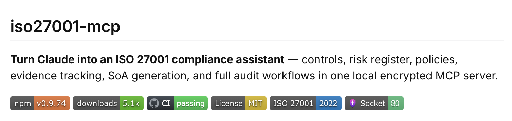
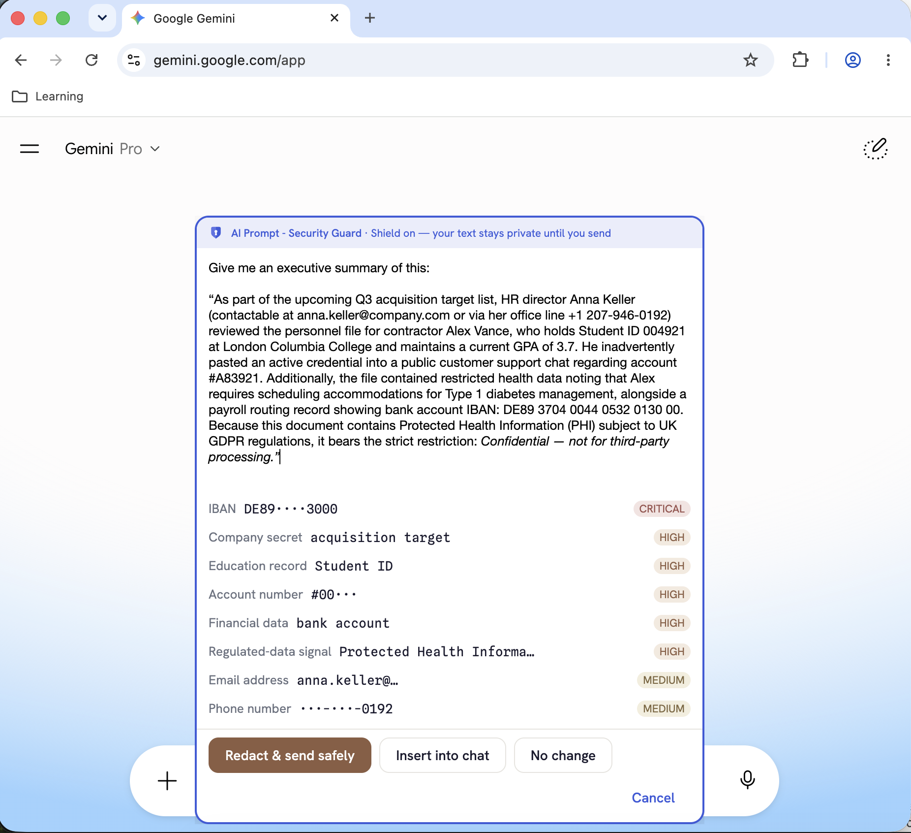

What Are Claude Skills?
Claude Skills are installable knowledge packages that extend Claude's capabilities for specific domains. A skill is a .skill file — a bundled archive containing a SKILL.md instruction file and optional reference materials — that you upload to Claude once and use across all your conversations.
Once installed, a skill activates automatically when your conversation touches its topic area. You don't need to invoke it by name or use special commands. Claude simply becomes a deeper expert in that domain for the duration of your session.
Skills are ideal when you need:
- Consistent, expert-level responses on a specialized topic
- Outputs formatted to professional or regulatory standards (e.g., audit-ready control narratives, policy templates with the right clauses)
- Domain knowledge that goes beyond general LLM training — such as knowing which specific NIST 800-53 controls apply to a given scenario, or which GDPR articles govern international data transfers
How skills work under the hood: Each .skill file contains a primary SKILL.md that is loaded into Claude's context when the skill triggers, plus reference files that are loaded on demand for deeper sub-topics. This "progressive disclosure" pattern keeps context usage efficient while making comprehensive knowledge available when needed.
Who Is This For?
Designed for professionals who work on information security, privacy, and regulatory compliance — whether at organizations seeking certification, development teams building compliant systems, or advisors supporting clients.
Accelerate gap assessments, generate first-draft policies, map controls, and prepare evidence packages in minutes.
Understand what controls your systems must implement and audit code or architecture for compliance issues.
Draft DPAs, BAAs, and privacy notices; answer client questions with precise article-level regulatory citations.
Assess systems, generate NPPs and BAAs, and get HIPAA guidance without a compliance consultant for every question.
Navigate FedRAMP ATO, write SSP narratives, manage POA&Ms, and prepare for 3PAO assessments.
Scope compliance programs, understand framework requirements, and get expert-quality output without a large in-house team.
The Skills
Control domains
1.  ISO 27001
ISO 27001
Turns Claude into an expert ISO 27001 Lead Auditor and ISMS implementation consultant. Covers both ISO 27001:2013 (114 controls, 14 domains) and ISO 27001:2022 (93 controls, 4 themes), defaulting to 2022.
- Runs structured gap analyses against mandatory clauses (4–10) and all Annex A controls
- Generates complete, audit-ready policy documents with document control blocks, scope statements, and clause-to-control mappings
- Builds risk registers and risk treatment plans using the likelihood × impact methodology
- Creates Statement of Applicability (SoA) templates covering all 93 controls
- Guides 2013 → 2022 transition, explaining the 11 new controls and mapping changes
ISO 27001 ISMS Annex A SoA gap analysis risk register certification readiness internal auditPotential Use Cases
- Preparing for an ISO 27001:2022 Stage 2 certification audit with gap analysis across all Annex A controls
- Writing an Information Security Policy and Statement of Applicability (SoA) mapped to all 93 controls
- Building a risk register and risk treatment plan using the likelihood × impact scoring method
- Guiding a 2013 → 2022 transition, including the 11 new controls and mapping changes
2.  SOC 2
SOC 2
Turns Claude into an expert SOC 2 compliance advisor grounded in the AICPA 2017 Trust Services Criteria (TSC) with 2022 Revised Points of Focus. Covers all five TSC: Security (CC1–CC9), Availability (A1), Confidentiality (C1), Processing Integrity (PI1), and Privacy (P1–P8).
- Conducts gap analyses across in-scope TSC criteria with 🔴/🟡/🟢 status ratings and remediation roadmaps
- Drafts all 12 core SOC 2 policies — Information Security, Access Control, Incident Response, Change Management, and more
- Documents controls in auditor-ready format: Control ID, TSC criterion, type, owner, frequency, evidence, and test procedure
- Handles vendor risk: tiering, 32-question security questionnaires, SOC 2 report review, CUEC tracking
SOC 2 Trust Services Criteria TSC CC6 Type 1 Type 2 AICPA audit readiness control statementPotential Use Cases
- Running a SOC 2 readiness assessment before engaging an external auditor
- Documenting controls for a SOC 2 Type 2 report with auditor-ready evidence tables
- Reviewing a vendor’s SOC 2 report and tracking Customer User Entity Controls (CUECs)
- Responding to a customer security questionnaire spanning multiple frameworks
3.  FedRAMP [US]
FedRAMP [US]
Turns Claude into a knowledgeable FedRAMP advisor covering the full authorization lifecycle for Cloud Service Providers under NIST SP 800-53 Rev 5 and CR26 (FedRAMP Consolidated Rules for 2026). Current as of August 2026 — CR26 final (mandatory January 1, 2027) with Certification Classes A–D (A = pilot/transitional, B = LI-SaaS/Low, C = Moderate, D = High), Class pipelines opening August 2026, FedRAMP 20x as the primary pathway, Ready retired July 28, 2026 (Legacy), and the September 30, 2026 OSCAL mandate for new authorizations.
- Conducts readiness and gap assessments using a 75+ item checklist across 14 security domains
- Guides authoring of ATO documentation: SSP, POA&Ms, SAPs, SARs, and all required appendices (A–Q)
- Maps NIST 800-53 Rev 5 controls across all 20 control families
- Provides cloud architecture guidance for AWS GovCloud, Azure Government, and Google Cloud Government
- Supports Continuous Monitoring (ConMon) obligations and guides the Rev 4 → Rev 5 transition
FedRAMP ATO SSP POA&M 3PAO NIST 800-53 ConMon AWS GovCloud impact level OSCALPotential Use Cases
- Scoping a FedRAMP Moderate authorisation on AWS GovCloud or Azure Government
- Writing SSP control narratives for all 20 NIST SP 800-53 control families
- Preparing a POA&M with FedRAMP-compliant remediation timelines
- Navigating the FedRAMP 20x pathway and the September 2026 OSCAL mandate
4. 🇪🇺 GDPR [EU]
Turns Claude into an expert GDPR compliance assistant bridging technical and legal perspectives. Covers full EU GDPR with notes on UK GDPR (DPA 2018) where rules differ.
- Audits code, APIs, database schemas, and architectures for GDPR violations with severity-graded findings (🔴/🟡/🟢) mapped to specific GDPR articles
- Drafts compliance documents: Privacy Notices (Art. 13/14), Data Processing Agreements (Art. 28), Cookie/Consent Banners, DPIAs (Art. 35), Data Retention Policies
- Answers compliance questions with authoritative article citations — every response leads with the governing article
- Covers lawful basis, consent, data subject rights (Arts. 15–22), international transfers (Arts. 44–49), breach response (Arts. 32–34)
GDPR data protection privacy personal data DPA DPIA lawful basis data subject rights consent RoPAPotential Use Cases
- Auditing an API or database schema for GDPR compliance before product launch
- Drafting a DPIA for a new AI feature that processes personal data
- Preparing an Article 28 Data Processing Agreement for a third-party vendor relationship
- Managing a 72-hour breach notification to a national supervisory authority
5.  HIPAA [US]
HIPAA [US]
Turns Claude into a knowledgeable HIPAA compliance advisor covering the Privacy Rule, Security Rule, and Breach Notification Rule (45 CFR Parts 160 and 164, as amended by HITECH).
- Reviews documents, systems, and architectures for HIPAA compliance with structured findings: CFR citations, risk levels (High / Medium / Low), and remediation steps
- Generates HIPAA-compliant documents from nine ready-to-use templates: NPP, BAA, Authorization Forms, Workforce Training Acknowledgments, Security Incident Reports, Risk Analysis Templates
- Advises on technical safeguards for AWS, Azure, GCP, FHIR APIs, mobile/BYOD, and DevOps — all 54 Security Rule implementation specifications
- Guides breach response using the 4-factor risk assessment, notification timelines, and HHS reporting obligations
HIPAA PHI ePHI covered entity business associate BAA NPP breach notification Privacy Rule Security RulePotential Use Cases
- Generating a Business Associate Agreement (BAA) for a healthcare SaaS vendor relationship
- Assessing whether a data incident constitutes a reportable HIPAA breach using the 4-factor risk assessment
- Advising on technical safeguards for AWS, Azure, or GCP healthcare cloud deployments
- Completing an HIPAA Security Rule risk analysis for a new healthcare application
6.  NIST CSF
NIST CSF
Turns Claude into an expert NIST Cybersecurity Framework advisor covering both CSF 2.0 (February 2024) and CSF 1.1 (April 2018), defaulting to CSF 2.0. Covers all six functions — Govern, Identify, Protect, Detect, Respond, Recover — including the new Govern function in CSF 2.0.
- Conducts structured gap assessments across all six CSF 2.0 functions, categories, and subcategories
- Builds Organisational Profiles — Current and Target — aligned to business context and risk tolerance
- Assesses Implementation Tiers (1–4) and provides targeted advancement guidance
- Maps CSF subcategories to NIST SP 800-53, ISO 27001:2022, and CIS Controls v8
- Guides CSF 1.1 → CSF 2.0 migration with a detailed subcategory mapping and migration checklist
NIST CSF Cybersecurity Framework CSF 2.0 Govern function GV.SC ID.AM PR.AA cybersecurity profile implementation tiersPotential Use Cases
- Assessing current cybersecurity posture using NIST CSF 2.0 across all six functions
- Building an Organisational Profile with Current and Target states for board reporting
- Guiding a CSF 1.1 → CSF 2.0 migration with subcategory mapping and a migration checklist
- Mapping CSF 2.0 subcategories to ISO 27001:2022, NIST SP 800-53, and CIS Controls v8
7.  PCI DSS
PCI DSS
Turns Claude into an expert PCI DSS compliance advisor covering PCI DSS v4.0.1 (June 2024 — current), including all requirements that became mandatory on March 31, 2025. Covers all 12 requirements, all 8 SAQ types, merchant and service provider levels, and v4.0 changes from v3.2.1.
- Scopes the Cardholder Data Environment (CDE) — identifies what's in scope, assesses network segmentation, recommends scope reduction via tokenisation or P2PE
- Selects the correct SAQ type — decision tree for SAQ A, A-EP, B, B-IP, C, C-VT, P2PE, and D
- Conducts structured gap assessments across all 12 requirements with QSA evidence requirements
- Guides v3.2.1 → v4.0.1 migration including MFA expansion, payment page script integrity (Req 6.4.3), phishing protection (Req 5.4.1)
PCI DSS PCI compliance cardholder data CDE SAQ ROC QSA PAN tokenisation merchant levelPotential Use Cases
- Scoping a PCI DSS Cardholder Data Environment for a cloud-hosted e-commerce platform
- Selecting the right SAQ type for a merchant using a hosted or redirect payment page
- Guiding a v3.2.1 → v4.0.1 migration including all requirements that became mandatory March 2025
- Assessing scope-reduction options via tokenisation or P2PE to shrink the CDE
8. 🚨 TSA Cybersecurity [US]
Turns Claude into an expert TSA cybersecurity directive advisor for critical transportation infrastructure. Covers all current TSA Security Directive series — SD Pipeline-2021-01G, SD Pipeline-2021-02F, SD 1580-21-01E (freight rail), and SD 1582-21-01E (transit/passenger rail) — plus the November 2024 NPRM.
- Determines applicability — which directive series applies to your organisation and what it means for compliance
- Runs structured gap assessments across four technical domains: IT/OT network segmentation, access controls (MFA), continuous monitoring, and patch management
- Drafts CRMP documents: Cybersecurity Implementation Plan (CIP/COIP), IRP, Architecture Design Review (ADR), and Cybersecurity Assessment Plan (CAP)
- Guides OT/ICS-specific implementation — data diodes, jump servers for legacy HMIs, passive monitoring tools (Claroty, Dragos, Nozomi)
TSA Security Directive SD Pipeline-2021 TSA cybersecurity Critical Cyber Systems CCS CRMP IRP testing OT segmentation TSA pipeline cybersecurityPotential Use Cases
- Determining whether a pipeline or rail operation is a TSA covered entity and which directive applies
- Drafting a Cybersecurity Implementation Plan (CIP) for pipeline OT/SCADA environments
- Aligning a TSA Cyber Risk Management Plan (CRMP) to NIST CSF 2.0 and CISA Cross-Sector CPGs
- Guiding OT/ICS segmentation using data diodes, jump servers, and passive monitoring tools
9.  ISO 42001 AI Management System
ISO 42001 AI Management System
Turns Claude into an expert ISO/IEC 42001:2023 AI Management System (AIMS) advisor — the world's first international standard for AI governance. Serves both AI providers (organisations developing or deploying AI) and AI users (organisations integrating third-party AI).
- Conducts structured gap assessments across all mandatory clauses (4–10) and all 38 Annex A controls (domains A.2–A.10) with 🔴/🟡/🟢 status and phased remediation roadmap
- Guides the mandatory AI System Impact Assessment (AISIA) — identifying affected populations, assessing impact dimensions, classifying impact level (Low/Medium/High)
- Performs AI risk assessment across model risks, data risks, operational risks, and supply chain risks
- Generates a complete Statement of Applicability (SoA) covering all 38 Annex A controls (A.2.2–A.10.4)
- Maps ISO 42001 to the EU AI Act — aligns AISIA to the Fundamental Rights Impact Assessment (FRIA) for high-risk AI systems
ISO 42001 ISO/IEC 42001 AI Management System AIMS AISIA AI governance standard Annex A AI controls AI certification EU AI Act management systemPotential Use Cases
- Running an ISO 42001 gap assessment for an AI provider with multiple ML models in production
- Completing an AI System Impact Assessment (AISIA) for an automated hiring or credit-scoring tool
- Integrating an ISO 42001 AIMS with an existing ISO 27001:2022 ISMS to avoid duplicating controls
- Generating a Statement of Applicability (SoA) covering all 38 Annex A controls
10.  ISO 27701 Privacy Information Management
ISO 27701 Privacy Information Management
Turns Claude into an expert ISO/IEC 27701:2025 Privacy Information Management System (PIMS) advisor. Covers the full lifecycle from gap assessment through certification for both PII controllers and PII processors, and handles both the new standalone 2025 edition and the legacy 2019 extension edition.
- Conducts structured gap analyses across all mandatory HLS clauses (4–10) and all 78 Annex A controls — 31 for PII controllers (A.1), 18 for PII processors (A.2), 29 shared security controls (A.3)
- Generates complete PIMS policy documents — Privacy Policy, RoPA, Data Subject Rights Procedure, DPAs, Privacy by Design Procedure, and more
- Builds privacy risk registers, triggers DPIAs for high-risk processing, and produces risk treatment plans
- Creates Statements of Applicability (SoA) scoped to the organization's role (controller, processor, or both)
- Guides 2019 → 2025 transitions with full control mapping table and timeline to the October 2028 deadline
- Maps ISO 27701 to GDPR article by article, plus CCPA/CPRA, LGPD, PIPEDA, and UK GDPR
ISO 27701 PIMS privacy information management PII controller PII processor DPIA RoPA data subject rights privacy by design data processing agreement GDPR alignment ISO 27701Potential Use Cases
- Running an ISO 27701:2025 gap assessment for a SaaS company acting as both PII controller and processor
- Drafting a GDPR-aligned Data Processing Agreement with all Article 28 mandatory clauses
- Completing a DPIA for a new AI feature that profiles users for targeted advertising
- Mapping ISO 27701:2025 controls to GDPR articles to use as certification evidence
11.  DORA [EU] — Digital Operational Resilience
DORA [EU] — Digital Operational Resilience
Turns Claude into an expert advisor on Regulation (EU) 2022/2554 (DORA) — the anchoring ICT regulation for EU financial entities since 17 January 2025. Encodes all 64 DORA articles, all 12 adopted RTS/ITS, and provides precise article-level guidance. Explicitly separates DORA from NIS2, legacy EBA ICT guidelines, and ISO 27001.
- Conducts structured DORA gap analyses across ICT risk management (Chapter II, Art. 5–16), incident management (Chapter III, Art. 17–23), TLPT (Chapter IV, Art. 24–27), and third-party risk (Chapter V, Art. 28–44)
- Guides ICT incident classification against Art. 18 criteria and CDR (EU) 2024/1772 materiality thresholds, with a full decision tree for major vs. non-major
- Builds three-stage reporting procedures per Art. 19: initial (4h), intermediate (72h), final (1 month), including content requirements per CDR (EU) 2025/301
- Reviews contracts against Art. 30(2)(a)–(i) mandatory provisions and flags the audit-rights gap common with hyperscale cloud providers
- Builds and validates the Register of Information with all mandatory fields per CIR (EU) 2024/2956
- Scopes TLPT programmes per Art. 26 and CDR (EU) 2025/1190, covering threat intelligence, red team, mutual recognition, and tester qualifications
DORA Regulation (EU) 2022/2554 digital operational resilience ICT risk management framework Art. 18 classification Art. 19 incident reporting Art. 26 TLPT Art. 30 contractual provisions Register of Information ICT concentration risk DORA vs NIS2 Chapter II DORA Chapter III DORAPotential Use Cases
- Running a DORA gap analysis for an EU credit institution ahead of a supervisory review
- Building a three-stage ICT incident reporting procedure (4h / 72h / 1 month) per Art. 19
- Reviewing ICT third-party contracts against all Art. 30(2)(a)–(i) mandatory provisions
- Advising on the DORA vs. NIS2 lex specialis interaction and residual obligations for a European bank
12. 🇮🇳 DPDPA [India] — Digital Personal Data Protection Act
Turns Claude into an expert advisor on India's Digital Personal Data Protection Act, 2023 and the finalized DPDP Rules, 2025 (notified 13 November 2025, effective 13 May 2027). Covers all 44 sections and 23 Rules with section-level citations, GDPR-alignment mapping, and guidance for both Indian companies and global organizations with Indian data subjects.
- Conducts structured DPDPA gap analyses covering notice/consent (Sections 5–6 + Rules 3–4), Data Fiduciary obligations (Section 8 + Rules 6–9), children's data (Section 9 + Rules 10–12), and SDF obligations (Section 10 + Rule 13)
- Distinguishes DPDPA from GDPR across 8 dimensions — digital-only scope, no legitimate interests basis, unconditional consent + no bundling, blacklist cross-border transfers, narrower erasure right, India-resident DPO for SDFs, 18-year children's threshold, single Board enforcement
- Guides breach notification per Section 8(6) and Rule 6 — 72-hour Board notification, all breaches notifiable (no risk threshold), Processor cascade obligations
- Designs children's data programmes — Rule 12 parental verification (DigiLocker, government tokens, virtual tokens) and absolute prohibitions on tracking, profiling, and targeted advertising for under-18s
- Advises Significant Data Fiduciaries on India-resident DPO, annual DPIA, annual independent audit, and data localisation readiness
- Guides Data Principal rights fulfilment — access (Section 11), correction/erasure (Section 12), grievance redressal (Section 13), and the unique right to nominate (Section 14)
DPDPA Digital Personal Data Protection Act India data protection Data Fiduciary Data Principal Significant Data Fiduciary DPDP Rules 2025 Rule 6 DPDP breach Rule 12 parental consent India privacy law DPDPA vs GDPR DigiLocker consent India children dataPotential Use Cases
- Running a DPDPA gap analysis for an Indian SaaS company ahead of the May 2027 deadline
- Designing a Rule 3-compliant privacy notice with multi-language and layered disclosure obligations
- Implementing a children’s data programme with Rule 12 parental verification (DigiLocker, virtual tokens)
- Advising on India cross-border transfer obligations — blacklist approach and contractual safeguards
13.  CMMC 2.0 [US] — Cybersecurity Maturity Model Certification
CMMC 2.0 [US] — Cybersecurity Maturity Model Certification
Turns Claude into an expert CMMC compliance advisor for US defense contractors. Covers all three CMMC levels — Level 1 (17 FAR 52.204-21 practices), Level 2 (110 NIST SP 800-171 Rev 2 practices/C3PAO), and Level 3 (110+ NIST SP 800-172/DIBCAC) — under the final 32 CFR Part 170 rule effective December 16, 2024.
- Determines the correct CMMC level based on FCI vs. CUI handling, DFARS clauses (7012, 7019, 7020, 7021), and program criticality
- Conducts structured gap assessments across all 17 domains — AC, AT, AU, CM, IA, IR, MA, MP, PE, PS, RA, CA, SC, SI — against all 110 Level 2 practices
- Drafts System Security Plans (SSP) covering system boundary, CUI data flows, and implementation narratives for all 110 practices
- Calculates SPRS scores (starting at 110; deductions per unmet practice; range −203 to +110) and prioritises highest-impact gaps
CMMC CMMC 2.0 CMMC Level 2 CUI NIST 800-171 DFARS 7021 C3PAO SPRS score defense contractor DIB DoD contractor FCI SSP CMMC POA&M CMMC DIBCAC CUI scopingPotential Use Cases
- Determining your CMMC level based on DFARS clauses (7012, 7019, 7020, 7021) and CUI handling scope
- Running a CMMC Level 2 gap assessment across all 110 NIST SP 800-171 practices
- Calculating your SPRS score and prioritising the highest-impact gap remediations
- Preparing evidence packages and POA&M documentation for a C3PAO assessment
14.  NIST AI Risk Management Framework
NIST AI Risk Management Framework
Turns Claude into an expert advisor on the NIST AI Risk Management Framework (AI RMF 1.0), published January 2023 as NIST AI 100-1. Covers all four core functions — GOVERN, MAP, MEASURE, MANAGE — their 19 categories and subcategories, the AI RMF Playbook's suggested actions, and deep guidance on AI trustworthiness evaluation.
- Builds AI organizational profiles — Current Profile and Target Profile across all 19 categories with gap scoring and prioritised roadmap
- Conducts GOVERN gap assessments across all 6 categories (GV-1 to GV-6) — AI risk policies, accountability, roles, cross-functional teams, risk tolerance, regulatory alignment
- Guides MAP context-setting for any AI system — intended use, affected stakeholder mapping, risk/benefit analysis, likelihood/impact characterization
- Specifies MEASURE 2.x pre-deployment evaluation — bias/fairness (demographic parity, equalized odds), explainability (SHAP, LIME), adversarial robustness, privacy, human oversight
- Builds AI risk registers with AI RMF category citations (e.g., MAP 5.2, MEASURE 2.2, MANAGE 2.3), trustworthiness property at risk, and treatment options
- Maps AI RMF to ISO 42001, EU AI Act, and NIST CSF — showing which categories satisfy Art. 9, equivalent ISO 42001 clauses, and how AI RMF extends cybersecurity frameworks
NIST AI RMF AI RMF NIST AI 100-1 AI Risk Management Framework GOVERN function MAP function MEASURE function MANAGE function AI RMF Playbook AI risk profile AI trustworthiness AI bias assessment MEASURE 2.2 AI risk register responsible AI frameworkPotential Use Cases
- Building an AI organisational profile using Current and Target states across all 19 categories
- Running a GOVERN gap assessment for an organisation starting its AI risk programme
- Evaluating a credit scoring or hiring AI model against MEASURE 2.x trustworthiness criteria before deployment
- Mapping NIST AI RMF categories to EU AI Act Art. 9 and ISO 42001 requirements
15.  SWIFT Customer Security Programme (CSP)
SWIFT Customer Security Programme (CSP)
Turns Claude into an expert advisor on the SWIFT Customer Security Controls Framework (CSCF) v2026 — the mandatory cybersecurity programme for all SWIFT network participants. Covers all 32 controls (25 mandatory + 7 advisory — Control 2.4 Back-Office Data Flow Security promoted to mandatory in v2026), all five architecture types (A1/A2/A3/A4/B), the KYC-SA attestation process (window July 1–December 31, 2026), and cross-framework mapping to ISO 27001:2022, PCI DSS v4.0.1, and NIST CSF 2.0.
- Determines the correct SWIFT architecture type (A1/A2/A3/A4/B) and produces the full mandatory/advisory control applicability matrix for your deployment
- Conducts structured CSCF v2026 gap assessments with 🔴/🟡/🟢 status per control, evidence requirements, and prioritised remediation roadmaps — including new mandatory Control 2.4
- Provides deep-dive implementation guidance for all 23 mandatory controls — purpose, requirements, implementation steps, and audit evidence artifacts
- Guides the complete KYC-SA attestation process — evidence prep, independent assessor qualification, portal submission, and post-submission counterparty visibility
- Advises on SWIFT-specific incident response — 24-hour initial notification to security@swift.com, 30-day full report, evidence preservation, and Control 7.1 IRP requirements
- Maps CSCF to ISO 27001:2022, PCI DSS v4.0.1, and NIST CSF 2.0 — identifying synergies and SWIFT-specific additions not covered by existing certifications
SWIFT CSP CSCF KYC-SA SWIFT security attestation Alliance Access SWIFT operator MFA SWIFT secure zone CSCF v2026 Control 4.2 SWIFT Control 6.4 SWIFT Control 7.1 SWIFT SWIFT architecture A1 SWIFT service bureau SWIFT gap assessment SWIFT hardware tokenPotential Use Cases
- Determining your SWIFT architecture type (A1/A2/A3/A4/B) and scoping the full CSCF control matrix
- Running a CSCF v2026 gap assessment for an Alliance Access on-premises deployment (including Control 2.4 back-office data flow)
- Preparing evidence and completing the annual KYC-SA attestation via swift.com/myswift
- Mapping existing ISO 27001 or PCI DSS controls to CSCF requirements to identify SWIFT-specific gaps
16. 🇦🇺 ISM [Australia] — Australian Information Security Manual
Turns Claude into an expert advisor on the Australian Information Security Manual (ISM) — the whole-of-government cybersecurity framework published by the Australian Signals Directorate (ASD) for federal and state government entities and their supply chains. Covers all 22 guideline chapters, control applicability markings (OFFICIAL through TOP SECRET) — current as of the June 2026 ISM release with its 49 restructured principles and first-of-kind AI application controls (ISM-2112/2113/2114), the IRAP assessment programme, system authorisation, and the Essential Eight relationship.
- Applies the ISM's control applicability marking system — determines NC/OS/PROTECTED/SECRET/TOP SECRET controls for a given system using the stacking rule, and scopes gap analyses accordingly
- Guides the complete system authorisation pathway — six-step cycle (define, select, implement, assess, authorise, monitor), SSP structure, and ATO sign-off by the Authorising Official
- Prepares agencies for IRAP assessments — full artefact checklist, what assessors evaluate, post-assessment POA&M → ATO pathway, and 24-month re-assessment obligations
- Provides deep-dive guidance on all 22 ISM guideline chapters: system hardening (Ch. 13), patch management SLAs (Ch. 14), logging/retention (Ch. 15), cryptography (Ch. 20), email security (Ch. 18), networking (Ch. 19)
- Explains the Essential Eight as a prioritised ISM subset — maps each of the 8 strategies to ISM chapters, covers ML0–ML3 maturity levels, and distinguishes Essential Eight from full ISM compliance
- Advises private sector cloud providers and supply chain partners on ISM obligations under government contracts and when IRAP is required for non-government entities
ISM Information Security Manual ASD cybersecurity IRAP assessment system authorisation ATO Australia PROTECTED system OFFICIAL Sensitive Essential Eight ASD compliance ISM controls ISM gap analysis ISM hardening cyber.gov.au NC OS PROTECTEDPotential Use Cases
- Understanding ISM control applicability markings (NC/OS/PROTECTED) for an Australian government cloud system
- Preparing all artefacts for an IRAP assessment of a PROTECTED-level system — SSP, risk register, evidence
- Mapping Essential Eight Maturity Level requirements to their ISM guideline chapters
- Drafting a System Security Plan (SSP) for ATO sign-off on an OFFICIAL: Sensitive case management system
17. 🇪🇺 NIS2 [EU] Directive
Turns Claude into an expert advisor on the EU NIS2 Directive (Directive (EU) 2022/2555) — the EU's overarching cybersecurity framework for essential and important entities, in force since 27 December 2022 (transposition deadline 17 October 2024). Replaces NIS1 with expanded scope, stronger incident reporting, management body accountability, and penalties up to €10M or 2% of global turnover.
- Determines entity classification — Essential Entity (Annex I: 11 highly critical sectors including energy, transport, health, banking) or Important Entity (Annex II: 7 other critical sectors) — with size-threshold analysis to confirm scope
- Guides compliance with all 10 Art. 21 cybersecurity risk management measures: risk analysis policies, incident handling, BCP/DR/crisis management, supply chain security, secure SDLC and vulnerability management, effectiveness assessment, cyber hygiene training, cryptography, HR security and access control, and MFA/secure communications
- Walks through the Art. 23 incident reporting workflow: 24-hour early warning, 72-hour incident notification, and 1-month final report — with content requirements for each stage and significant incident threshold guidance
- Explains Art. 20 governance obligations — management body approval, mandatory cybersecurity training, and personal liability under Member State transposition law
- Performs ISO 27001 gap analysis — maps ISO 27001:2022 Annex A controls to NIS2 Art. 21 measures and identifies critical gaps (Art. 20 governance, Art. 23 reporting timelines, MFA mandate, ENISA supply chain assessments)
- Addresses the DORA lex specialis interaction — explains DORA precedence for financial entities under Art. 4, identifies residual NIS2 obligations, and recommends an integrated compliance programme
NIS2 NIS 2 Directive EU 2022/2555 essential entity important entity NIS2 compliance Article 21 NIS2 Article 23 NIS2 NIS2 incident reporting NIS2 gap analysis NIS2 supply chain NIS2 governance NIS2 penalties NIS2 and DORA NIS2 and ISO 27001 ENISA NIS2 network information security directivePotential Use Cases
- Determining whether a European company is an Essential or Important Entity under NIS2
- Walking through the NIS2 Art. 23 incident reporting workflow (24h / 72h / 1 month) after a ransomware attack
- Drafting an NIS2-compliant incident response policy covering all 10 Art. 21 security measures
- Explaining the DORA lex specialis relationship and residual NIS2 obligations for a European financial entity
18.  CCPA/CPRA [California] Privacy
CCPA/CPRA [California] Privacy
Turns Claude into an expert advisor on California's comprehensive privacy laws — the California Consumer Privacy Act (CCPA, effective Jan 1, 2020) and the California Privacy Rights Act (CPRA/Proposition 24, effective Jan 1, 2023). CPRA created the California Privacy Protection Agency (CPPA), introduced Sensitive Personal Information (SPI), and added rights to correct PI, limit SPI use, and require data retention disclosures.
- Determines business applicability — whether an organisation meets any of the three CCPA/CPRA thresholds ($25M revenue OR 100K+ consumers/households OR 50%+ revenue from PI sale/sharing) and outlines resulting obligations
- Guides consumer rights fulfillment — step-by-step workflows for right to know, delete, correct, opt-out of sale/sharing, limit SPI use, portability, and non-discrimination — including identity verification, exception handling, response deadlines (45 days / 15 business days for SPI), and service provider propagation
- Classifies ad tech, cookie tracking, and data sharing as "sale" or CPRA "sharing" (cross-context behavioral advertising) and advises on Global Privacy Control (GPC) signal compliance and consent management platform implementation
- Identifies and advises on Sensitive Personal Information (SPI) — precise geolocation, biometrics, health data, SSNs, credentials, and more — including permitted uses, limitation right obligations, and 15-business-day response SLA
- Performs GDPR-to-CCPA/CPRA gap analysis — identifies California-specific additions (Do Not Sell or Share link, GPC, SPI limitation, minors' opt-in, financial incentive disclosures) and structural differences (opt-out vs. opt-in, no lawful basis requirement, breach private right of action)
- Assesses CPPA enforcement and penalty exposure — $2,500/unintentional, $7,500/intentional, $100–$750/consumer for breach class actions — and advises on remediation prioritisation
CCPA CPRA California Consumer Privacy Act California Privacy Rights Act Do Not Sell or Share sensitive personal information California CPPA California privacy compliance right to know California right to delete California California opt-out GPC signal Global Privacy Control ad tech CCPA CCPA vs GDPR CCPA service provider CCPA penaltyPotential Use Cases
- Determining whether your business meets any CCPA/CPRA threshold ($25M revenue, 100K+ consumers, or 50%+ revenue from PI sale)
- Building a combined right-to-know and right-to-delete response workflow meeting the 45-day deadline
- Classifying ad tech activities (cookie sync, RTB) as sale vs. CPRA sharing vs. service provider processing
- Performing a GDPR-to-CCPA/CPRA gap analysis to identify California-specific requirements
19.  ITAR [US] — International Traffic in Arms Regulations
ITAR [US] — International Traffic in Arms Regulations
Turns Claude into an expert advisor on US defense export controls under 22 CFR Parts 120–130, administered by the Directorate of Defense Trade Controls (DDTC). ITAR controls the export, re-export, and transfer of defense articles, defense services, and technical data on the United States Munitions List (USML) — covering 21 categories from firearms to spacecraft.
- Performs USML jurisdiction analysis — applies the enumeration test and the specially designed test (22 CFR § 120.41) to determine ITAR vs EAR jurisdiction; guides Commodity Jurisdiction (CJ) requests for ambiguous items
- Guides DDTC registration under 22 CFR Part 122 — who must register (manufacturers, exporters, brokers), DS-2032 submission, annual fee tiers, renewal, and Empowered Official designation
- Advises on export licensing — DSP-5 (permanent export), DSP-73 (temporary export), DSP-94 (temporary import), application requirements via D-Trade, licence conditions, and Congressional notification thresholds
- Drafts and reviews Technical Assistance Agreements (TAA) and Manufacturing License Agreements (MLA) under 22 CFR Part 124, including all mandatory clauses: retransfer prohibition, US government rights, audit rights, and 5-year record retention
- Manages deemed exports and foreign national access — covers Technology Control Plans (TCP), screening against DDTC/OFAC/BIS denied party lists, and physical/logical access segregation for foreign national employees and visitors
- Advises on violations and voluntary disclosures — walks through the VSD process (22 CFR § 127.12), penalty exposure (civil up to $1.369M/violation; criminal up to $1M fine and 20 years), mitigating factors, and corrective action planning
ITAR International Traffic in Arms Regulations USML United States Munitions List DDTC defense export deemed export TAA technical assistance agreement MLA DSP-5 DSP-73 ITAR registration ITAR violation voluntary disclosure ITAR ITAR vs EAR commodity jurisdiction technology control plan Empowered OfficialPotential Use Cases
- Performing USML jurisdiction analysis for a defense article to determine ITAR vs. EAR applicability
- Guiding DSP-5 and DSP-73 export licence applications and drafting TAAs and MLAs
- Managing deemed export obligations for foreign national employees accessing ITAR-controlled technical data
- Advising on voluntary self-disclosure (VSD) after an ITAR violation and structuring penalty mitigation
20.  LGPD [Brazil] — General Data Protection Law
LGPD [Brazil] — General Data Protection Law
Turns Claude into an expert advisor on Brazil's Lei Geral de Proteção de Dados Pessoais (Law 13,709/2018), enforced by the ANPD (Autoridade Nacional de Proteção de Dados). LGPD applies extraterritorially to any organisation processing personal data of individuals located in Brazil — covering SaaS companies, fintechs, healthcare, e-commerce, and any business with Brazilian users.
- Analyses extraterritorial scope (Art. 3) — determines LGPD applicability regardless of where the organisation is established
- Maps legal bases for processing — 10 bases under Art. 7 for regular data; stricter Art. 11 bases for sensitive data (health, biometric, racial/ethnic origin); legitimate interest balancing tests
- Drafts LGPD-compliant privacy notices (Art. 9) and valid consent mechanisms (Art. 8) — specific, freely given, documented, and revocable
- Guides data subject rights fulfilment (Arts. 17–22) — access, correction, deletion, portability, and automated decision review — with 15-day response workflows
LGPD Brazil data protection Lei Geral de Proteção de Dados ANPD Brazilian privacy law LGPD compliance LGPD gap assessment Encarregado RIPD LGPD legal basis Brazil data breach ANPD notification LGPD vs GDPR Brazil personal data LGPD penaltyPotential Use Cases
- Assessing extraterritorial LGPD applicability for a US or EU company with Brazilian users
- Completing a RIPD (Data Processing Impact Report) for high-risk sensitive data processing activities
- Managing a breach notification within the 3-working-day ANPD deadline
- Mapping LGPD legal bases for processing to equivalent GDPR bases and identifying gaps
21.  CSRD [EU] — Corporate Sustainability Reporting Directive
CSRD [EU] — Corporate Sustainability Reporting Directive
Turns Claude into an expert advisor on EU Directive 2022/2464 (CSRD), which requires approximately 50,000 companies to disclose detailed ESG information under the European Sustainability Reporting Standards (ESRS). CSRD came into force on 5 January 2023 and replaces the Non-Financial Reporting Directive (NFRD), extending mandatory sustainability reporting from ~11,000 to ~50,000 companies across the EU.
- Determines CSRD scope and first reporting year — analyses PIE Wave 1 (>500 employees, FY 2024), other large companies (FY 2025), listed SMEs (FY 2026), and non-EU companies with >€150M EU turnover (FY 2028)
- Guides the Double Materiality Assessment (DMA) — step-by-step ESRS 1 process covering impact materiality (scale × scope × irremediability) and financial materiality (risks/opportunities), with scoring templates and stakeholder engagement requirements
- Produces CSRD gap assessments — maps current GRI, TCFD, CDP, and SASB disclosures to mandatory ESRS datapoints with priority and action columns
- Advises on ESRS E1 Climate Change — Scope 1, 2 (location- and market-based), and all 15 Scope 3 GHG categories; transition plan under Art. 19a(2)(a); EU Taxonomy alignment; physical and transition risk financial effects
CSRD Corporate Sustainability Reporting Directive ESRS double materiality double materiality assessment DMA ESG reporting Europe sustainability disclosure EU non-financial reporting ESRS E1 ESRS S1 ESRS G1 Scope 3 CSRD transition plan ESRS CSRD gap assessment CSRD scope EU sustainability reporting ESRS assurance XBRL sustainability CSRD vs GRI EU Taxonomy CSRDPotential Use Cases
- Determining whether your company falls under CSRD and identifying your first mandatory reporting year
- Conducting a Double Materiality Assessment (DMA) covering all material ESRS topical standards
- Building a Scope 3 GHG emissions programme covering all 15 categories required under ESRS E1
- Performing a GRI / TCFD to ESRS gap analysis for companies transitioning to mandatory reporting
22.  CIS Controls v8 — CIS Top 18 Cyber Hygiene
CIS Controls v8 — CIS Top 18 Cyber Hygiene
Turns Claude into an expert CIS Controls v8 advisor covering all 18 controls and 153 safeguards from the May 2021 release. Applies the Implementation Group (IG) framework to scope guidance to your organisation's risk profile: IG1 (56 safeguards — essential cyber hygiene for all orgs), IG2 (130 safeguards — dedicated IT, sensitive data), and IG3 (153 safeguards — large enterprise with security team). Includes complete cross-framework mapping to NIST CSF 2.0, ISO 27001:2022, CMMC 2.0, SOC 2, and PCI DSS v4.0.
- Determines the correct Implementation Group for any organisation — applies IG criteria (IT resources, data sensitivity, regulatory exposure, threat profile) and scopes all guidance to that IG
- Conducts CIS Controls gap assessments across all 18 controls and applicable safeguards with 🔴/🟡/🟢 status, IG assignment, asset type, security function, and prioritised remediation roadmap
- Provides safeguard-level implementation guidance — practical steps, recommended tools (Qualys, CrowdStrike, Splunk, Microsoft Defender, Nessus), and common pitfalls for all 153 safeguards
- Delivers a structured IG1 12-week quick-start programme — week-by-week: asset inventory, secure configuration, access controls, patch management, backups, and security awareness training
CIS Controls CIS Top 18 CIS v8 CIS Controls v8 Implementation Group IG1 IG2 IG3 CIS safeguards cyber hygiene controls CIS gap assessment CIS Controls NIST mapping CIS Benchmarks CIS CSAT asset inventory CIS vulnerability management CIS CIS Controls ISO 27001 CIS Controls SOC 2 CIS Controls PCI DSS CIS Controls CMMC CIS Controls NIST CSFPotential Use Cases
- Determining whether your organisation needs IG1, IG2, or IG3 controls with a scoped 12-week quick-start plan
- Running a CIS Controls v8 gap assessment with 🔴/🟡/🟢 status across all 18 controls and applicable safeguards
- Building a vulnerability management programme with CVSS-based remediation SLAs (Control 7)
- Mapping CIS Controls v8 to NIST CSF 2.0 for a unified cross-framework compliance programme
23.  EAR [US] — Export Administration Regulations
EAR [US] — Export Administration Regulations
Turns Claude into an expert Export Administration Regulations (EAR) advisor with deep knowledge of all 15 CFR Parts 730–774, administered by the Bureau of Industry and Security (BIS). Covers the full dual-use export control lifecycle — ECCN classification, licence analysis, restricted party screening, deemed exports, FDPR, and enforcement response.
- Applies the mandatory Order of Review to determine EAR vs. ITAR jurisdiction — USML check first, then CCL classification or EAR99 confirmation per § 732.3
- Classifies items across all 10 CCL categories (0–9) and 5 product groups (A–E) with step-by-step ECCN determination, including CCATS and CJ request guidance
- Analyses licence requirements using the Commerce Country Chart (RFC × country matrix) and identifies all 14 applicable licence exceptions: LVS, GBS, CIV, APP, TSR, TMP, RPL, GOV, TSU, ENC, BAG, AVS, ACE, GFT
- Guides restricted party screening against the Entity List, Denied Persons List, Unverified List, MEU List, and OFAC SDN — with Consolidated Screening List (CSL) workflow
EAR Export Administration Regulations ECCN EAR99 BIS export control Commerce Control List CCL dual-use export export licence Entity List Denied Persons List deemed export FDPR Foreign Direct Product Rule licence exception ENC exception voluntary self-disclosure VSD SNAP-R export compliance programme ECP restricted party screening export to China export to Russia de minimis rule CCATS EAR vs ITARPotential Use Cases
- Classifying an item under the EAR — ECCN determination and licence requirement analysis for specific destinations
- Assessing deemed export obligations for foreign national employees accessing controlled encryption technology
- Determining whether AES-256 cybersecurity software qualifies for the ENC licence exception for France, India, or Brazil
- Designing a 7-element Export Compliance Programme for a dual-use technology or semiconductor company
24.  NIST SP 800-53 — Security and Privacy Controls for Federal Systems
NIST SP 800-53 — Security and Privacy Controls for Federal Systems
Turns Claude into an expert NIST SP 800-53 Rev 5 federal security and privacy controls advisor covering the full catalog (September 2020) and its companion publications — SP 800-53B baselines, SP 800-53A assessment procedures, and SP 800-37 Rev 2 Risk Management Framework. Serves federal agency teams, cloud service providers pursuing FedRAMP, system owners, ISSOs, and GRC professionals implementing FISMA-mandated controls.
- Categorises systems using FIPS 199/200 and SP 800-60 — determines C/I/A impact levels, applies the high-water mark rule, and selects the appropriate Low, Moderate, or High baseline from SP 800-53B
- Covers all 20 control families (AC, AT, AU, CA, CM, CP, IA, IR, MA, MP, PE, PL, PM, PS, PT, RA, SA, SC, SI, SR) — including the new PT Privacy and SR Supply Chain families added in Rev 5
- Guides the full tailoring process — identifies common/inherited controls, applies scoping considerations, fills in Organization-Defined Values (ODVs) with federal guidance, designs compensating controls, and supplements baselines for elevated risks
- Writes SSP control narratives in the standard format — implementation description, responsible role, inherited/hybrid designation, and SP 800-53A testing method for each control
NIST SP 800-53 SP 800-53 NIST 800-53 federal security controls RMF Risk Management Framework FISMA ATO Authority to Operate FIPS 199 FIPS 200 FIPS 140 SP 800-53B control baseline Low baseline Moderate baseline High baseline SSP narrative System Security Plan POA&M Plan of Action ConMon SP 800-53A security assessment ODV control tailoring common controls AC-2 IA-2 SC-8 SI-2 SR family PT family OSCAL 3PAO FedRAMP controls ISSO authorizing officialPotential Use Cases
- Categorising a federal system under FIPS 199/200 and selecting the correct Low, Moderate, or High SP 800-53B baseline
- Implementing phishing-resistant MFA under IA-2(1) and IA-2(2) to satisfy EO 14028 and OMB M-22-09
- Writing SSP control narratives in the standard federal format for any of the 20 control families
- Building a ConMon strategy with monthly vulnerability scan frequencies, annual pen-testing, and POA&M cadence
25.  EU AI Act — Regulation (EU) 2024/1689
EU AI Act — Regulation (EU) 2024/1689
Turns Claude into an expert EU AI Act compliance advisor covering the full Regulation (EU) 2024/1689 — the world's first comprehensive horizontal AI regulation, in force from 1 August 2024 and amended by the Digital Omnibus (Regulation (EU) 2026/1744, in force July 27, 2026; GPAI enforcement active since August 2, 2026). Serves AI providers, deployers, importers, and authorised representatives operating in or placing AI systems on the EU market.
- Classifies AI systems across all four risk tiers — Prohibited (Art. 5), High-Risk (Art. 6), Limited Risk (Art. 50), and Minimal/No Risk — using both Annex I safety component path (Art. 6(1)) and Annex III listed use case path (Art. 6(2))
- Screens for all 9 prohibited AI practices (Art. 5): the original 8 apply from 2 February 2025 (subliminal manipulation, vulnerability exploitation, social scoring, predictive criminal assessment, untargeted biometric scraping, workplace/education emotion inference, sensitive-attribute biometric categorisation, real-time RBI in public spaces by law enforcement); the 9th — non-consensual intimate imagery / CSAM generation, added by the Digital Omnibus — applies from 2 December 2026
- Guides Fundamental Rights Impact Assessments (FRIA, Art. 27) — who must perform one, required content, market-surveillance notification, and how a FRIA builds on a GDPR DPIA
- Covers all 8 Annex III high-risk use case areas: biometrics, critical infrastructure, education, employment, essential services, law enforcement, migration/border control, and justice/democracy
- Walks through all Arts. 9–17 provider obligations: risk management (5-step lifecycle process), data governance, Annex IV technical documentation, automatic logging, transparency to deployers, human oversight design (stop button, override capability), accuracy/robustness/cybersecurity, 12-item provider checklist, and 13-component Quality Management System
EU AI Act AI Act Regulation 2024/1689 high-risk AI prohibited AI GPAI model general-purpose AI AI system classification AI conformity assessment CE marking AI EU AI database AI Office AI Board systemic risk AI Art. 5 AI Annex III AI AI provider obligations AI deployer obligations human oversight AI AI risk management Art. 50 transparency chatbot disclosure AI AI Act compliance GPAI obligations open-source AI Act AI Act penalty AI Act timeline AI Act GDPRPotential Use Cases
- Classifying an AI system across all four risk tiers and understanding provider obligations under Arts. 9–17
- Assessing whether an AI use case triggers an Art. 5 prohibited practice prohibition (in force from 2 February 2025)
- Determining GPAI model obligations and whether the 10²⁵ FLOPs systemic risk threshold applies
- Navigating dual EU MDR / EU AI Act regulation for an AI-powered medical diagnostic imaging tool
26. ♿ Section 508 — US Federal ICT Accessibility
Turns Claude into an expert Section 508 compliance advisor for US federal agencies, contractors, and ICT vendors. Covers the Revised Section 508 Standards (2018) — 36 CFR Part 1194 — which incorporate WCAG 2.0 Level A and AA as the technical standard for all federal web content, software, documents, and hardware.
- Completes VPAT 2.x (WCAG Edition) / Accessibility Conformance Reports (ACR) — section-by-section with Supports/Partially Supports/Does Not Support/N/A conformance levels, remarks, and testing methodology disclosure
- Guides full accessibility audits: automated scan (axe-core, WAVE, Lighthouse), keyboard-only navigation, screen reader testing (JAWS+Chrome, NVDA+Chrome/Firefox, VoiceOver+Safari), colour contrast (SC 1.4.3), zoom/reflow (SC 1.4.4), and PDF accessibility checklist
- Drafts procurement language — FAR clause 52.239-2 RFP requirements, remediation SLAs, post-award ACR update obligations, and undue burden exception documentation (E202.5)
Section 508 508 compliance federal accessibility VPAT ACR Accessibility Conformance Report ICT accessibility 36 CFR Part 1194 Revised 508 Standards undue burden FAR 52.239-2 JAWS screen reader keyboard accessibility federal PDF accessibility 508Potential Use Cases
- Completing a VPAT 2.x Accessibility Conformance Report (ACR) for a federal agency SaaS procurement
- Auditing a federal web portal for WCAG 2.0 AA compliance with JAWS, NVDA, and keyboard-only testing
- Drafting RFP procurement language with Section 508 accessibility requirements under FAR 52.239-2
- Documenting an undue burden determination (E202.5) for a legacy ICT system with an alternative access plan
27. ♿ WCAG — Web Content Accessibility Guidelines
Turns Claude into an expert advisor on WCAG 2.0, 2.1, and 2.2 — the W3C international standard for digital accessibility, developed by the Web Accessibility Initiative (WAI). WCAG is the technical foundation for accessibility laws worldwide: EU EAA (EN 301 549), US Section 508 and ADA, UK Equality Act, and Australia's DDA all reference WCAG conformance.
- Covers all POUR principles (Perceivable, Operable, Understandable, Robust) across WCAG 2.2 — including all 9 new criteria added in 2.2 (SC 2.4.11–13, 2.5.7–8, 3.2.6, 3.3.7–8) and all 17 criteria added in 2.1 for mobile, low vision, and cognitive accessibility
- Performs accessibility audits: colour contrast analysis (SC 1.4.3/1.4.11), ARIA patterns and screen reader testing (NVDA, JAWS, VoiceOver), keyboard navigation, focus management, live region announcements, and reflow at 320 CSS px (SC 1.4.10)
- Produces accessibility statements, maps WCAG to legal frameworks by jurisdiction (EN 301 549, EAA, Section 508, ADA, UK PSBAR), and advises on WCAG 2.1 AA vs 2.2 AA conformance claims
WCAG WCAG 2.1 WCAG 2.2 web accessibility POUR principles accessibility audit colour contrast screen reader keyboard accessibility ARIA focus visible reflow accessibility statement EN 301 549 European Accessibility Act WCAG conformance success criteria alt text captions accessibilityPotential Use Cases
- Auditing a web or React application for WCAG 2.1 AA compliance across all POUR principles
- Upgrading a WCAG 2.1 conformance claim to WCAG 2.2 AA and identifying the 6 new required criteria
- Reviewing ARIA patterns, keyboard focus management, and live region announcements for interactive components
- Determining WCAG version and conformance level required under US, EU, and UK accessibility laws
28. 🇳🇿 NZISM — New Zealand Information Security Manual
Turns Claude into an expert advisor on the New Zealand Information Security Manual (NZISM) — the mandatory cybersecurity framework published by the GCSB / NCSC NZ for NZ government agencies and their supply chains. Covers the NZ Government Information Classification System (ISCS) from Unclassified through Top Secret, all 18+ control sections, and the full Certification & Accreditation (C&A) lifecycle.
- Cites verified NZISM control IDs (e.g., 16.1.46.C.02) from a bundled source-verified reference — never invented
- Conducts NZISM gap analyses across all control domains for any classification level — produces structured tables with status, evidence required, and remediation priority
- Guides Certification & Accreditation (C&A) for Restricted and above — SSP preparation, security risk assessment, independent assessment, POA&M, and Accrediting Authority sign-off
- Generates NZISM-referenced policies (Access Control, Incident Response, Information Security) with classification markings and document control blocks
NZISM NZ government security GCSB compliance NCSC NZ Restricted system NZ NZ classification agency security NZ system certification NZ C&A NZ NZISM gap analysis NZISM controls NZ ISCSPotential Use Cases
- Gap analysis of a NZ government system against NZISM for Restricted classification — with C&A roadmap
- NZISM guidance for moving Restricted government data to offshore cloud — approvals and data residency requirements
- Generating NZISM-compliant security policies (Access Control, Incident Response) with classification markings
- Reviewing supplier contractual security obligations for NZ government In-Confidence data
29. 🇻🇳 Vietnam PDPL — Law on Personal Data Protection
Turns Claude into an expert advisor on Vietnam's Law on Personal Data Protection No. 91/2025/QH15 (effective 1 January 2026) and implementing Decree 356/2025/ND-CP, administered by the Ministry of Public Security. Applies to Vietnamese entities and foreign organisations processing data of Vietnamese citizens (extraterritorial reach). Vietnam's first comprehensive personal data protection law.
- Conducts VN-PDPL gap analyses — maps obligations across all 6 data subject rights, consent, lawful basis, cross-border transfer, DPIA, security, breach notification, DPO, and SME exemptions
- Drafts cross-border transfer impact assessments (Article 20, due within 60 days) and domestic DPIAs (Article 21) with sector-specific rules for finance, AI, cloud, and blockchain
- Guides breach response — 72-hour notification workflow to Ministry of Public Security; finance sector dual notification to both authority and data subjects
Vietnam data privacy VN-PDPL Law 91/2025 Nghị định 356 Vietnamese personal data Vietnam PDPL cross-border transfer Vietnam Vietnam breach notification Vietnam data protection Vietnamese data subjectsPotential Use Cases
- VN-PDPL gap analysis for a foreign company processing Vietnamese citizen data — extraterritorial scope and obligations
- 72-hour breach notification response for a Vietnamese fintech company with dual authority and data subject notification
- DPIA for an AI-powered telemedicine platform processing health records, biometrics, and behavioural data
- Assessing SME exemptions — which VN-PDPL obligations are deferred for 5 years and which apply from day one
30. 🇪🇺 EU CRA — Cyber Resilience Act
Turns Claude into an expert advisor on Regulation (EU) 2024/2847 — the EU Cyber Resilience Act, which mandates cybersecurity requirements for all Products with Digital Elements (PDEs) sold in the EU (full application: 11 December 2027). Covers connected hardware, software, IoT devices, industrial systems — any product with a network interface.
- Classifies products into Default / Class I / Class II (Annex III: 35 categories including VPNs, password managers, identity management; Annex IV: 12 categories including hypervisors, HSMs, industrial ICS/SCADA) and determines conformity route (self-assessment vs. mandatory Notified Body)
- Conducts Annex I gap analysis — 10 Part I security properties (secure by default, no hardcoded credentials, encryption, signed firmware, exploit mitigations) and 9 Part II vulnerability handling obligations (CVD/VDP, SBOM, 24/72-hour ENISA/CSIRT reporting)
- Guides CE marking, technical documentation (Annex VII), SBOM programme (SPDX/CycloneDX), and 5-year support period obligations including end-of-life notification
EU CRA Cyber Resilience Act CRA compliance product with digital elements PDE Annex I requirements CRA conformity assessment CE marking cybersecurity SBOM EU ENISA vulnerability reporting Class I CRA Class II CRA IoT security EUPotential Use Cases
- Classifying a connected product as Default, Class I, or Class II and selecting the correct conformity route
- Conducting an Annex I gap analysis across 10 Part I security properties and 9 Part II vulnerability handling obligations
- Implementing a 24-hour ENISA early warning + 72-hour full notification programme for actively exploited vulnerabilities
- Building an SBOM programme (SPDX/CycloneDX) and meeting the 5-year support period and end-of-life notification obligations
31. 🇸🇦 Saudi Arabia GRC — Country Compliance Advisor
Turns Claude into a Saudi Arabia GRC advisor — a compliance router that first determines which Saudi regulations apply (NCA ECC-2:2024, Saudi PDPL, NCA Cloud Cybersecurity Controls, SAMA Cyber Security Framework, CST cloud rules), then guides framework-specific compliance. Saudi compliance is fragmented across NCA, SDAIA, SAMA, and CST — this skill establishes organization type, sector, data, and cloud posture before advising.
- Delivers an applicability matrix first: ECC-2:2024 (4 domains / 108 controls, mandatory for government & CNI), PDPL (fully enforced since Sep 14, 2024 — SDAIA registration, 72-hour breach notification, SCC transfer modules), CCC/CST cloud rules with classification-driven residency (government data stays in-Kingdom), SAMA CSF (maturity level 3 minimum) for financial entities
- Runs gap assessments, breach response, and market-entry roadmaps with regulator-tied citations and active-enforcement context (~48 first-wave SDAIA decisions)
- Maps Saudi requirements to ISO 27001:2022, NIST CSF 2.0, and SOC 2 so multinationals reuse existing evidence
Saudi Arabia compliance KSA NCA ECC SDAIA Saudi PDPL SAMA CSF CST cloud Saudi data residency expanding to Saudi Arabia32. 🇦🇪 UAE GRC — Country Compliance Advisor
Turns Claude into a UAE GRC advisor — a jurisdiction-first compliance router. In the UAE, where an organization sits determines its law: mainland (Federal PDPL — executive regulations still pending as of Aug 2026), DIFC (DP Law No. 5 of 2020 as amended 2025, with a private right of action), ADGM (DP Regulations 2021), CBUAE-licensed financial institutions, healthcare (ICT Health Law data localization), and government/CNI cyber baselines.
- Establishes jurisdiction, license type, and data categories first, then delivers the applicability matrix — including the routing rules that decide cases (DIFC/ADGM displace the federal PDPL; health data is jurisdiction-proof; DFSA/FSRA vs CBUAE)
- Runs multi-clock breach response (ADGM 72-hour, DIFC as-soon-as-practicable, CBUAE parallel duties), market-entry and zone-selection framing, and CBUAE cloud/outsourcing approval workflows with consumer-data residency
- Maps UAE requirements to ISO 27001:2022, NIST CSF 2.0, and SOC 2; GDPR-family programmes port well to DIFC/ADGM with the 2025 amendment deltas flagged
UAE compliance DIFC data protection ADGM data protection UAE PDPL CBUAE outsourcing UAE health data residency Dubai ISR ADHICS expanding to the UAE33. TISAX — Trusted Information Security Assessment Exchange
Turns Claude into an expert TISAX advisor for the automotive supply chain — the ENX/VDA assessment regime OEMs (VW, BMW, Mercedes-Benz, Audi) require from suppliers. Covers VDA ISA 6 (current through 2026) and the ISA2027 transition (published July 1, 2026; mandatory for assessments ordered from January 1, 2027).
- All 12 assessment objectives/labels incl. the ISA-6 renaming (Confidential / Strictly Confidential + availability labels), with the objective → AL1/AL2/AL3 level mapping (on-site AL3 for very-high, prototype, and Special Data objectives)
- Maturity scoring (0–5, target 3, cutback rules), ENX portal process and fees, standard scoping, corrective action plans with the 9-month window and temporary labels, 3-year label validity
- ISO 27001:2022 mapping (~70–80% overlap) with the automotive deltas certification alone doesn't cover — prototype protection, fixed maturity targets, label/exchange mechanics
TISAX VDA ISA ENX TISAX label AL2 AL3 prototype protection automotive supplier security ISA2027 TISAX vs ISO 2700134.  TPRM — Third-Party Risk Management
TPRM — Third-Party Risk Management
Turns Claude into a vendor risk analyst for the recurring discipline every framework here requires: ISO 27001 A.5.19–5.23, SOC 2 CC9.2, NIS2 Art. 21(2)(d), DORA Chapter V, HIPAA BAAs, GDPR Art. 28.
- Vendor tiering by data access, criticality and substitutability, with per-tier due diligence and the interagency lifecycle (planning → due diligence → contracting → monitoring → termination)
- SOC 2 Type II report review — opinion/period checks, exception triage, carve-out vs inclusive subservice analysis, CUEC extraction, bridge-letter rules — plus tailored, framework-mapped due-diligence questionnaires
- DPA & sub-processor review (Art. 28 clause checklists), tier-scaled contract security addenda (DORA Art. 30), OAuth-aware monitoring and verification-driven offboarding
vendor risk TPRM security questionnaire review this SOC 2 sub-processors due diligence supply chain security vendor offboarding35. 🇬🇧 Cyber Essentials / CE Plus — UK Baseline Certification
Expert adviser for the NCSC-owned, IASME-delivered UK certification — required by government contracts (PPN 014), the MoD supply chain, and increasingly private supply chains. Covers the current Danzell question set (v3.3, mandatory for assessment accounts from April 27, 2026) and the Willow transition.
- The five control themes with the details assessors mark against — including the two automatic-fail conditions (missing cloud MFA; the 14-day update questions) and the 14-day critical/high (CVSS ≥7) patch rule
- Scoping that people get wrong: cloud never excludable, BYOD, home routers, sub-set segregation, unsupported software handling
- CE Plus audits (3-month window, ~10% device sampling, retest rules), pricing (£320–£600 +VAT), the bundled £25k insurance, and procurement timelines (PPN 014, MoD DCC Level 0 by Dec 31, 2026)
Cyber Essentials CE Plus IASME Danzell NCSC certification PPN 014 MoD supply chain UK government contract36.  SOX ITGC — IT General Controls for SOX 404
SOX ITGC — IT General Controls for SOX 404
Turns Claude into a SOX ITGC practitioner for finance, internal audit and IT compliance teams — the quarterly, deadline-driven work behind every ICFR programme.
- The four ITGC domains auditors test (access, program changes, computer operations, program development) with control catalogs, test procedures and evidence expectations
- Scoping in-scope systems top-down from the financial statements (AS 2201/GAIT), SOC 1/CUEC reliance, IPE and end-user computing; workpaper-ready RCMs, narratives and test scripts
- Deficiency evaluation — the deficiency → significant deficiency → material weakness ladder (AS 2201 App. A / Reg S-X 1-02(a)(4)) with aggregation logic; 404(a)/(b) applicability, EGC/IPO timelines, and the flagged May 2026 SEC filer-framework proposal
SOX ITGC ICFR 404(b) material weakness user access review change management controls PCAOB auditHow to Install a Skill
- Download the
.skillfile for the framework you need from the table below. - Open Claude and navigate to Customize → Skills.
- Click Upload Skill and select the
.skillfile. - The skill is now active. Start a new conversation and ask your compliance question — Claude will automatically apply the skill.
| Framework | Download |
|---|---|
| 1. ISO 27001 | iso27001.skill |
| 2. SOC 2 | soc2.skill |
| 3. FedRAMP | fedramp.skill |
| 4. 🇪🇺 GDPR | gdpr-compliance.skill |
| 5. HIPAA | hipaa-compliance.skill |
| 6. NIST CSF | NIST Cybersecurity.skill |
| 7. PCI DSS | PCI-Compliance.skill |
| 8. 🚨 TSA Cybersecurity | TSA-Compliance.skill |
| 9. ISO 42001 AI Management System | ISO-42001.skill |
| 10. ISO 27701 Privacy Information Management | iso27701.skill |
| 11. DORA [EU] — Digital Operational Resilience | dora.skill |
| 12. 🇮🇳 DPDPA [India] — Digital Personal Data Protection Act | dpdpa.skill |
| 13. CMMC 2.0 [US] — Cybersecurity Maturity Model Certification | cmmc.skill |
| 14. NIST AI Risk Management Framework | nist-ai-rmf.skill |
| 15. SWIFT Customer Security Programme (CSP) | swift-csp.skill |
| 16. 🇦🇺 ISM [Australia] — Australian Information Security Manual | ism.skill |
| 17. 🇪🇺 NIS2 [EU] Directive | nis2.skill |
| 18. CCPA/CPRA [California] Privacy | ccpa.skill |
| 19. ITAR [US] — International Traffic in Arms Regulations | itar.skill |
| 20. LGPD [Brazil] — General Data Protection Law | lgpd.skill |
| 21. CSRD [EU] — Corporate Sustainability Reporting Directive | csrd.skill |
| 22. 🛡️ CIS Controls v8 — CIS Top 18 Cyber Hygiene | cis-controls.skill |
| 23. 📦 EAR [US] — Export Administration Regulations | ear.skill |
| 24. 🏛️ NIST SP 800-53 — Security and Privacy Controls for Federal Systems | nist-800-53.skill |
| 25. 🤖 EU AI Act — Regulation (EU) 2024/1689 | eu-ai-act.skill |
| 26. ♿ Section 508 — US Federal ICT Accessibility | section-508.skill |
| 27. ♿ WCAG — Web Content Accessibility Guidelines | wcag.skill |
| 28. 🇳🇿 NZISM — New Zealand Information Security Manual | nzism.skill |
| 29. 🇻🇳 VN-PDPL — Vietnam Law on Personal Data Protection | vn-pdpl.skill |
| 30. 🇪🇺 EU CRA — Cyber Resilience Act | eu-cra.skill |
| 31. 🇸🇦 Saudi Arabia GRC | saudi-arabia-grc.skill |
| 32. 🇦🇪 UAE GRC | uae-grc.skill |
| 33. TISAX | tisax.skill |
| 34. TPRM — Third-Party Risk Management | tprm.skill |
| 35. 🇬🇧 Cyber Essentials / CE Plus [UK] | cyber-essentials.skill |
| 36. SOX ITGC [US] | sox-itgc.skill |

Install via Claude Code Marketplace
If you use Claude Code — the AI-powered CLI for developers — these skills are also available as installable Claude Code plugins through a hosted marketplace. This is the recommended installation path for developers and teams, as it supports version-pinning, automatic updates, and team-wide distribution without any manual file handling.
Add the marketplace and install the skills you need directly from the terminal:
/plugin marketplace add Sushegaad/Claude-Skills-Governance-Risk-and-Compliance
/plugin install iso27001@grc-skills soc2@grc-skills fedramp@grc-skills gdpr-compliance@grc-skills hipaa-compliance@grc-skills nist-csf@grc-skills pci-compliance@grc-skills tsa-compliance@grc-skills iso42001@grc-skills iso27701@grc-skills dora@grc-skills dpdpa@grc-skills cmmc@grc-skills nist-ai-rmf@grc-skills swift-csp@grc-skills ism@grc-skills nis2@grc-skills ccpa@grc-skills itar@grc-skills lgpd@grc-skills csrd@grc-skills cis-controls@grc-skills ear@grc-skills nist-800-53@grc-skills eu-ai-act@grc-skills section-508@grc-skills wcag@grc-skills nzism@grc-skills vn-pdpl@grc-skills eu-cra@grc-skillsTeams can pre-wire the marketplace in .claude/settings.json so every developer gets the skills automatically when they open the project — no manual install required.
📖 Full installation instructions, team setup, and update guide → INSTALLATION.md
Skill Evaluation
These skills were benchmarked using the Claude Skill Creator eval framework. 180 realistic test cases were run across all 36 skills — 5 per framework — with Claude Sonnet as both the skill-assisted and baseline model (identical model on both sides, so the delta measures the skills, not model strength) — covering gap analysis, policy drafting, control deep-dives, edge cases, and compliance advice scenarios. Each test case was evaluated against at least 5 objectively verifiable assertions by independent grader agents comparing skill-assisted vs. baseline Claude responses. 902 total assertions evaluated.
804 / 902 assertions passed
500 / 902 assertions passed
+304 additional assertions passed
Per-Skill Results
| # | Skill | Cases | With Skill | Baseline | Delta | Last Updated | What Was Tested |
|---|---|---|---|---|---|---|---|
| 1 | ISO 27001 | 5 | 100% | 84% | +16% | 16 May 2026 | Gap assessment; Policy drafting; 2013→2022 transition; Risk assessment; Management review CAP |
| 2 | SOC 2 | 5 | 100% | 84% | +16% | 16 May 2026 | Type 1 vs 2; CC controls checklist; Availability criteria; Access control policy; Audit exception response |
| 3 | FedRAMP [US] | 5 | 64% | 24% | +40% | 14 Sep 2026 | Machine-readable intake cutoff for In-Process Rev5 packages; existing-provider conversion trigger; 20x classes and pipelines; pathway choice; POA&M/ConMon |
| 4 | 🇪🇺 GDPR | 5 | 92% | 48% | +44% | 03 Oct 2026 | Google €403M location-data lessons; fine-vs-order methodology (04/2026); DSA-GDPR interplay; lawful-basis rigor (C-798/24); anonymisation standard |
| 5 | HIPAA [US] | 5 | 100% | 68% | +32% | 05 Sep 2026 | Security Rule NPRM status (July 2027); self-funded plan enforcement; right-of-access exposure; risk analysis requirements; cloud BAA contents |
| 6 | NIST CSF | 5 | 92% | 56% | +36% | 05 Sep 2026 | Transit community profile (IR 8576); AI for CSF work (draft SP 1353); informative references (SP 1347); organizational profile build; 1.1 to 2.0 migration |
| 7 | PCI DSS | 5 | 84% | 80% | +4% | 05 Sep 2026 | FAQ 1331 ROC scoping change; SAQ A eligibility; v4.0.1 mandatory requirements; scope reduction; compensating vs customized approach |
| 8 | 🚨 TSA Cybersecurity | 5 | 100% | 96% | +4% | 16 May 2026 | Pipeline directive requirements; CIRP elements; OT/IT segmentation; Airport applicability; TSA vs CIRCIA |
| 9 | ISO 42001 | 5 | 92% | 80% | +12% | 16 May 2026 | AIMS applicability; Key requirements; AI-specific risks; Third-party LLM management; AI ethics controls |
| 10 | ISO 27701 | 5 | 100% | 100% | ±0% | 16 May 2026 | Extension to ISO 27001; GDPR mapping; Processor controls; PIA methodology; Certification as GDPR evidence |
| 11 | DORA [EU] | 5 | 64% | 56% | +8% | 14 Sep 2026 | CTPP EU-subsidiary deadline (Art. 31(12)); incident classification and reporting; third-country branches (CSSF 26/915); Register of Information cycle; Art. 30 contract provisions |
| 12 | 🇮🇳 DPDPA [India] | 5 | 96% | 80% | +16% | 16 May 2026 | Applicability to foreign entities; Consent vs GDPR; Children's data (18-year threshold); Cross-border transfers; SDF obligations |
| 13 | CMMC 2.0 [US] | 5 | 72% | 28% | +44% | 14 Sep 2026 | Task Force status (Sept 14); obligations during the pause; what the suspension did and didn't do; SPRS calculation; enclave scoping |
| 14 | NIST AI RMF | 5 | 92% | 84% | +8% | 03 Jul 2026 | Four functions overview; Hiring AI risk assessment; Credit scoring risk register; EU AI Act mapping; GOVERN gap assessment |
| 15 | SWIFT CSP | 5 | 56% | 12% | +44% | 14 Sep 2026 | v2026 control counts (26+6) and changes; v2027 status honesty; missed-attestation consequences; architecture typing; independent assessment prep |
| 16 | 🇦🇺 ISM [Australia] | 5 | 92% | 16% | +76% | 05 Sep 2026 | September 2026 release (44 new controls); agentic AI controls; OAuth consent hardening; Essential Eight status; cadences and provider access |
| 17 | 🇪🇺 NIS2 [EU] | 5 | 100% | 56% | +44% | 05 Sep 2026 | Netherlands Cbw entry into force; transposition laggards and CJEU referrals; incident reporting; essential vs important; Art. 21 measures |
| 18 | CCPA/CPRA [California] | 5 | 88% | 48% | +40% | 03 Oct 2026 | Broker-data deletion (SB 923); 2026 children's package; sensitive-PI status (AB 1542 veto); data-broker enforcement climate; ADMT countdown |
| 19 | ITAR [US] | 5 | 80% | 36% | +44% | 05 Sep 2026 | DIRCM civil aircraft rule (USML VIII(a)(8), Oct 13 2026); BAE settlement compliance lessons; Cat XI(b) software status; deemed exports; VSD process |
| 20 | LGPD [Brazil] | 5 | 84% | 44% | +40% | 03 Oct 2026 | Penalty reality (TikTok R$153.7M); ANPD agency status + CP 1/2026; teen-platform obligations (Digital ECA); Brazil-US transfers; breach response |
| 21 | CSRD [EU] | 5 | 100% | 60% | +40% | 03 Oct 2026 | FY2026/FY2027 ESRS basis (Reg. 2026/1563 in the OJ); below-threshold + voluntary standard; assurance status (CEAOB); double materiality; value-chain cap and Scope 3 |
| 22 | 🛡️ CIS Controls v8 | 5 | 100% | 80% | +20% | 16 May 2026 | Implementation Group determination; Gap assessment for SaaS startup; MFA safeguard scoping (IG2); CIS v8 to NIST CSF 2.0 mapping; Vulnerability management programme with CVSS-based remediation SLAs |
| 23 | 📦 EAR [US] | 5 | 76% | 16% | +60% | 05 Sep 2026 | Sub-3-hour drone exports (rewritten 9A012); long-endurance drone; military UAV classification (9A610.a); AI-chip diffusion status; Entity List research sale |
| 24 | 🏛️ NIST SP 800-53 [US] | 5 | 92% | 84% | +8% | 16 May 2026 | FIPS 199 categorization for federal HR system; AC-2(3) OTS finding and POA&M documentation; MFA controls and EO 14028 phishing-resistant MFA; SSP narrative for SC-8(1) Transmission Confidentiality; ISO 27001 to FedRAMP gap analysis and RMF steps |
| 25 | 🤖 EU AI Act [EU] | 5 | 84% | 64% | +20% | 15 Aug 2026 | CV screening high-risk + Annex III Area 4 + Digital Omnibus Dec 2027 deadline; Predictive policing Art. 5 prohibition; Open-source GPAI CoP + exception scope (3×10²⁴ FLOPs); MDR+AI Act interaction + Aug 2028 Annex I deadline; E-commerce chatbot Art. 50 disclosure |
| 26 | ♿ Section 508 [US] | 5 | 100% | 100% | ±0% | 16 May 2026 | VPAT 2.x procurement language (FAR 52.239-2); Keyboard and screen reader audit methodology; PDF accessibility remediation checklist; JAWS+Chrome AT testing matrix; Undue burden exception documentation |
| 27 | ♿ WCAG [International] | 5 | 100% | 85% | +15% | 16 May 2026 | Colour contrast audit with replacement suggestions (SC 1.4.3); WCAG 2.2 upgrade criteria (6 new criteria, SC 4.1.1 removal); React modal ARIA code review with corrected implementation; Legal compliance mapping across US/EU/UK; Accessibility statement for e-commerce site |
| 28 | 🇳🇿 NZISM [New Zealand] | 5 | 96% | 64% | +32% | 03 Jul 2026 | Gap analysis for Restricted system; Cloud (AWS offshore) hosting approval; NZISM Access Control Policy; Incident response obligations; Supplier contractual security obligations |
| 29 | 🇻🇳 VN-PDPL [Vietnam] | 5 | 88% | 8% | +80% | 05 Sep 2026 | Decree 330/2026 penalty exposure; cross-border transfer duties; law-stack timeline; consent and rights; SME exemptions |
| 30 | 🇪🇺 EU CRA [EU] | 5 | 76% | 48% | +28% | 14 Sep 2026 | Live Art. 14 filing (exploited vulnerability); severe-incident reporting; firewall classification and conformity; what-applies-when timeline; SRP onboarding and fallback |
| 31 | 🇸🇦 Saudi Arabia GRC | 5 | 96% | 28% | +68% | 23 Aug 2026 | Market-entry applicability routing; SAMA vs NCA stacking; cloud-for-government residency (CST/CCC); PDPL breach response; ISO 27001 to ECC-2:2024 mapping |
| 32 | 🇦🇪 UAE GRC | 5 | 84% | 28% | +56% | 23 Aug 2026 | DIFC routing + 2025 amendment; health-data localization vs US cloud; mainland PDPL status; ADGM breach clock; CBUAE cloud offshoring constraints |
| 33 | TISAX | 5 | 100% | 16% | +84% | 03 Oct 2026 | Order-date decision (ISA 6 vs ISA2027); ISA2027 changes; prototype labels (PTS Basic/Facilities); first-timer process; ISO 27001 vs TISAX |
| 34 | TPRM | 5 | 96% | 64% | +32% | 14 Sep 2026 | Stale SOC 2 report review (carve-outs, CUECs, bridge letters); tiering programme design; DPA and sub-processor review; DORA contract addendum; OAuth-aware offboarding |
| 35 | 🇬🇧 Cyber Essentials | 5 | 80% | 16% | +64% | 14 Sep 2026 | First certification for a government bid; BYOD/cloud/home-working scope; 14-day rule and unsupported software; CE Plus audit prep; insurance and MoD supply chain |
| 36 | SOX ITGC | 5 | 92% | 52% | +40% | 14 Sep 2026 | Post-IPO 404 applicability and EGC status; system scoping; terminated-admin deficiency evaluation; change-management RCM; annual ITGC calendar |
GRC Framework Updates
This section tracks official regulatory and standards activity across the 36 frameworks covered in this repository. Updated monthly to help GRC practitioners stay ahead of changes — new versions, enforcement actions, guidance releases, and compliance deadline shifts. Each entry below covers the latest monthly cycle only; prior months are archived in the collapsible section below.
🗓️ October 2026 Current
Published: October 3, 2026 · Covers September 2026 activity
Change indicators: 🔴 Major change · 🟡 Minor change · 🟢 No change
ISO 27001 🟢
No September activity for the standard itself — ISO/IEC 27001:2022 (with the 2024 climate amendment) remains the certifiable edition. The newest family documents are still the July publications: ISO/IEC 27000:2026 (vocabulary) and ISO/IEC 27017:2026 (cloud controls). No revision announced.
SOC 2 🟢
No final SSAE in September — the ASB's attestation revision (AT-C 105/205/210, February exposure draft) remains at the comment-deliberation stage after its August meeting. The 2017 Trust Services Criteria (2022 points of focus) are unchanged; watch for a balloted final standard in late 2026.
FedRAMP 🔴
The Rev5 machine-readable mandate took effect September 30 (2PM ET): new initial-certification packages must now be in an approved machine-readable format (OSCAL as the primary standard) with no grace period — Word/Excel packages are no longer accepted; existing providers convert at each annual assessment, with the notification window running to Sept 30, 2027 before revocation. Also: RFC-0033 (20x Class D Phase 4 tracks) and RFC-0034 (TAG changes) opened Sept 9; FedRAMP Day ran Sept 30.
GDPR 🔴
The Irish DPC fined Google Ireland €403M (final decision Sept 21) over location-data processing (Arts. 5, 6, 12, 13) with a 6-month compliance order. The EDPB's 123rd plenary (Sept 17) adopted Guidelines 04/2026 on administrative fines (consultation to Nov 13) and final DSA–GDPR interplay guidelines; the anonymisation (02/2026) and genAI web-scraping (03/2026) consultations close October 30. The CJEU held in C-798/24 (Sept 3) that EU company-register disclosure rules do not require publishing all shareholders' data — restating that Art. 6(1) is an exhaustive list and legal-obligation processing must satisfy Art. 6(3).
HIPAA 🟡
OCR settled with Ambry Genetics for $700K (Sept 17) over a phishing breach affecting 225,000+ — citing failed risk analysis, un-terminated ePHI access and missing unique user IDs. The Security Rule NPRM remains unfinalized with no new timeline; build against the current rule.
NIST CSF 🟡
Draft IR 8623 (Sept 17) — a CSF 2.0 community profile for Open RAN deployments — plus adjacent drafts: SP 800-82r4 (OT security guide) and SP 1352 (800-171A small-business primer). CSF 2.0 core unchanged.
PCI DSS 🟡
PCI SSC's 20th-anniversary North America Community Meeting ran Sept 15–17 in Vancouver, alongside two publications: "Security Considerations for AI Systems" guidance (Sept 15) and Secure SLC Standard v2.0 (Sept 28). PCI DSS v4.0.1 itself is unchanged; the August FAQ 1331 ROC-scoping restriction remains the live practical issue.
TSA Cybersecurity 🟡
A Sept 1 Federal Register notice revised the "Cybersecurity Measures for Surface Modes" information collection (incl. vetting requirements for non-US-citizen Cybersecurity Coordinators). Directives SD Pipeline-2021-01G and 1580/82-series remain in force; the 2024 surface cyber NPRM still has no final rule.
ISO 42001 🟡
Accreditation momentum continued: 20 certification bodies now hold ANAB accreditation for ISO 42001 (as of Sept 21) under the ISO/IEC 42006:2025 criteria. The standard itself is unchanged — certification capacity, not requirements, is what moved.
ISO 27701 🟢
Quiet September; ISO/IEC 27701:2025 remains current with the 2019-certificate transition running to Oct 31, 2028. Near-term: certification bodies are expected to complete their own scheme transitions around October 31, 2026 (some ABs cite 2027) — confirm your CB can audit against the 2025 edition before your next cycle.
DORA 🟡
The ESAs published DORA Incident Reporting — Operational Instructions (Sept 16, relayed by NCAs incl. CSSF) and the Joint Committee's Autumn risk update (Sept 23) flagged reliance on non-EU ICT providers using DORA incident data. The Art. 31(12) clock is nearly up: third-country CTPPs designated Nov 18, 2025 must have an EU subsidiary within 12 months — verify your critical providers now.
DPDPA (India) 🟢
No MeitY or Board action in September; the proposal to shorten the significant-data-fiduciary window remains un-notified. The clock that matters: Consent Manager registration and Phase 2 obligations open November 13, 2026; full enforcement May 13, 2027.
CMMC 2.0 🔴
The Task Force delivered its recommendations to the DoW CIO September 11 — but the report remains unpublished; CIO Davies said more than half of RFI comments backed the suspension and signaled a shift toward OT/manufacturing-base resilience, committing to publish without a date (observers expect late October after internal review). Phase 2 stays suspended; 800-171 Rev 2, SPRS and affirmations remain fully enforceable.
NIST AI RMF 🟡
CAISI published its security assessment of a Chinese frontier model (GLM-5.3, Sept 17), continuing the foreign-model evaluation program. AI RMF 1.0 unchanged; the critical-infrastructure profile remains in development.
SWIFT CSP 🟡
Swift's H2 refresher webinars now cover "key changes introduced in CSCF v2027" — the content is being socialized to users and assessors, though no public standalone publication exists (Knowledge Centre login required). The operative deadline is unchanged: v2026 attestation (26 mandatory + 6 advisory controls) with independent assessment by December 31 — assessor capacity tightens from October.
Australian ISM 🔴
The September 2026 release is the biggest in years: 44 new controls (ISM-2124–2167) spanning AI-agent identity/registers, agentic-AI guardrails, OAuth consent hardening, short-lived credentials, deepfake-aware verification, immutable backups and MACsec, plus 6-monthly KRBTGT/DCSync/pen-test cadences; ISM-0521 rescinded. ASD confirmed the Essential Eight remains live during the "Essentials" transition (deprecation begins ~12 months after finalisation); joint crypters advisory Sept 8.
NIS2 🟡
No new transpositions in September — Ireland (bill prioritised for end-2026), Spain and France remain the laggards with CJEU penalty proceedings pending. ENISA's Threat Landscape 2026 (Sept 22; 8,257 incidents, public administration most-targeted at 31.8%) is the month's analytical anchor.
CCPA / CPRA 🔴
California's session closed loudly: Newsom signed 22 of 25 privacy/AI bills — including SB 923 expanding the right to delete to data collected "from or about" the consumer (Sept 27, effective Jan 1, 2027) and five children's-privacy bills (Sept 10) — while vetoing AB 1542's categorical ban on selling/sharing sensitive data (Sept 27, "a step too far"); SB 435 died earlier in Assembly Appropriations. The CPPA fined data broker SalesIntel $36,400 for failing to register (Sept 1) and issued Enforcement Advisory 2026-01 on registration accuracy (Sept 3, $200/day exposure).
ITAR 🟡
Comments closed Sept 27 on the survivability-enhanced-aircraft IFR (USML VIII(a)(8)) ahead of its October 13 effective date; DECCS's Data Collection Modernization licensing release went live Sept 14; and DDTC suspended Cyprus's §126.1 proscribed status through Sept 30, 2027 (91 FR 57787, Sept 11).
LGPD (Brazil) 🔴
ANPD opened Consulta Pública 1/2026 (Sept 9 – Oct 26) proposing a full rewrite of its enforcement/sanctioning regulation — reflecting its new regulatory-agency powers and the Digital ECA: scope extended to internet application providers and child-accessible products, interim measures with daily fines, mandatory electronic filing. Public hearing held Sept 24. Comment now if Brazil is in scope.
CSRD 🔴
The revised ESRS hit the Official Journal September 21 — Delegated Regulations (EU) 2026/1563 (simplified ESRS) and 2026/1560 (voluntary VSME standard) — in force November 10, applying to FY2027 with early application permitted. And CEAOB delivered its limited-assurance technical advice September 25 (EU add-ons to ISSA 5000), feeding the assurance delegated act due by mid-2027.
CIS Controls v8 🟡
September Benchmarks wave: Windows Server 2022 v5.1.0 and Windows 11 v5.1.0 (Defender split into its own Benchmark), Windows Server 2025 v2.1.0, Chrome/ChromeOS updates with generative-AI policy controls, Google Workspace v1.4.0. Controls v8.1 unchanged.
EAR 🟡
A quieter month confirmed against the Federal Register: no Entity List additions or major control rules — activity was Russian-airline TDO renewals, a Sept 24 polysilicon-stockpiling restriction, and a records-retention notice. Watch items: the 50% Affiliates Rule suspension runs through November 9, 2026 absent extension; chip licenses to China remain case-by-case.
NIST SP 800-53 🟢
No releases — Release 5.2.0 remains operative. The COSAiS AI control overlays stayed in development with publication targeted late 2026–2027; no public draft landed in September.
EU AI Act 🟡
Enforcement-era operations continued: the AI Office's first formal information requests to GPAI providers progressed, the AI Board met Sept 17, and the transparency Code of Practice for AI-generated content passed ~190 signatories. On standards, EN 18286 stands as the first published JTC21 AI Act standard with two more in ballot. Annex III high-risk obligations remain deferred to Dec 2, 2027.
Section 508 🟢
No standards change — activity was educational (Access Board Q&A webinar Sept 22 covering 508 + ADA Title II) and administrative. The 2017 refresh (WCAG 2.0 AA) remains the rule; acquisition stays GSA's compliance lever.
WCAG 🟡
W3C published an updated WCAG 3.0 Working Draft September 10: a six-tier reporting model (through Bronze/Silver/Gold) and worst-case impact labels (Physical Harm, Risk, Barrier, Friction) on every core requirement. WCAG 2.2 remains the conformance target — 3.0 isn't expected to reach Recommendation until ~2029.
NZISM 🟢
Still v3.9 (verified against the GCSB updates page): Chapter 16 authentication overhaul, phishing-resistant MFA, WPA3. No v3.10, no September PSR updates.
VN-PDPL (Vietnam) 🟡
First full month under Decree 330/2026/ND-CP (sanctions regime, effective Aug 19): no publicly reported A05 penalty actions yet, with major-firm analyses (PwC Sept 15) confirming the fine architecture — up to 5% of Vietnam revenue for cross-border violations, VND 3B fixed tiers, 10× proceeds for data trading. First enforcement actions are the imminent risk.
EU CRA 🔴
Article 14 reporting went live September 11 and ENISA's Single Reporting Platform launched the same day at initial operating capability (portal, FAQs, manuals, help desk — functionality expanding over coming months). Manufacturers now file 24h/72h plus final reports (14 days post-fix for exploited vulnerabilities; 1 month for severe incidents). Standards: the two horizontal harmonised standards were due Sept 11; 17 ETSI product drafts remain in enquiry to mid-November. No first-weeks statistics yet.
Saudi Arabia GRC 🟡
Enforcement-flavored month: NCA announced compliance inspection visits (Sept 8) and international cooperation (Pakistan MoU, Sept 1); no new NCA framework, SDAIA PDPL regulation or SAMA circular. CST's Sept 17 consultation is spectrum-related, not cyber.
UAE GRC 🟢
The federal PDPL Executive Regulations remain unissued — vendor-blog claims of "2026 regulations" with a Jan 2027 deadline stay unverified against the official legislation portal. Structure to watch: the AI & Data Authority (Cabinet-approved June 14) absorbing the Data Office; DIFC's AI-focused DP amendments (CP 3/2026) not yet enacted.
TISAX 🔴
The ISA2027 rollout completed its materials set: the full catalogue has been published since July 1 (ENX/VDA primary), the redline document and webinar series landed August 7, and the ISA2027.1 minor revision is now current (German edition October 1) — third-party articles dated mid-September are commentary, not new publications. The decision point is hard: assessments ordered from January 1, 2027 run on ISA2027; December 31 is the last day to order under ISA 6 (initial ISA-6 assessments must open by March 2027); existing labels keep their 3-year validity.
TPRM 🔴
September delivered the case studies: the MemTensor npm/PyPI compromise (Sept 22–23) shipped a credential-stealing implant through AI-agent memory packages — the first supply-chain worm aimed at AI-agent infrastructure — and analysis continued on the Klue OAuth-token breach (~700 organisations, the Salesloft-Drift-class successor). Review OAuth grants and dependency provenance now; DORA CTPP subsidiary deadlines land in November.
Cyber Essentials 🟢
No scheme changes — but the transition deadline is days away: October 26 is the last day to complete an assessment started under Willow; open Willow accounts are deleted October 27 and must restart under Danzell at cost. The Cyber Security and Resilience Bill finished Lords committee stage Sept 7 (report stage Oct 26).
SOX ITGC 🟡
The PCAOB adopted QC 1000 amendments (Sept 9, scalability/burden reduction) and refreshed its standard-setting and research agendas (Sept 30: fraud, NOCLAR, going concern, firm metrics). The SEC's May filer-framework proposal (comments closed July 20) saw no adoption action — current 404(b) thresholds remain operative law.
📁 September 2026 & Older Updates
🗓️ September 2026
Published: September 4, 2026 · Covers August 2026 activity
Change indicators: 🔴 Major change · 🟡 Minor change · 🟢 No change
ISO 27001 🟢
A quiet August for the 27000 family. ISO/IEC 27001:2022 (with the 2024 climate amendment) remains the sole certifiable edition with no revision announced; the July ISO/IEC 27000:2026 vocabulary overview (and its EN adoption, July 15) is still the newest family document. No action required this cycle.
SOC 2 🟡
The AICPA Auditing Standards Board spent August deliberating the 23 comment letters on its February 2026 exposure draft revising attestation sections AT-C 105/205/210 (conforming-amendments comments closed June 30). No final SSAE yet, and the 2017 Trust Services Criteria (2022 points of focus) are unchanged — nothing new to implement, but a revised attestation standard is now in the pipeline.
FedRAMP 🔴
The 20x rollout hit full stride: the Class A pilot pipeline opened Aug 3, Rev5 Ready-conversion and Lost-sponsor pipelines Aug 10, and the Class B (Low) and Class C (Moderate) pipelines opened Aug 31. Next hard date: the OSCAL machine-readable mandate for new authorizations on September 30, 2026. Class D (High) stays on Rev5 pending the FY27 pilot.
GDPR 🔴
The Dutch DPA fined Uber €824.99M on Aug 21 — the second-largest GDPR fine ever — for fully automated driver-account deactivations in breach of Article 22 (Uber will appeal). EDPB workstreams advanced: the breach-notification template consultation closed Aug 5, and Guidelines 02/2026 on anonymisation remain open for comment until October 30.
HIPAA 🟡
August's verified OCR activity: a $50K Right of Access settlement with Azul Vision (Aug 27) — the 55th under that initiative — and the Aug 14 Unified Agenda moving the Security Rule overhaul NPRM to Long-Term Actions with final action now anticipated July 2027 (100+ hospital systems urging withdrawal). Enforcement trend to note: OCR's first actions against self-funded group health plans ($245K Star Group, April; $450K Spencer Gifts, June) — both cited for inadequate risk analyses after ransomware.
NIST CSF 🟡
Three CSF releases in August: final IR 8576 Transit Cybersecurity Community Profile (Aug 5), draft SP 1353 quick-start on using AI for CSF analysis and reporting (Aug 19; comments through Oct 15), and final SP 1347 Informative References quick-start (Aug 25). CSF 2.0 core is unchanged.
PCI DSS 🟡
On Aug 31 the PCI SSC updated FAQ 1331, materially restricting use of SAQ eligibility criteria to reduce scope in ROC assessments — now requiring acquirer approval. A practical change for merchants and QSAs even though v4.0.1 itself is untouched. APAC Community Meeting set for Kuala Lumpur, Nov 11–12.
TSA Cybersecurity 🟢
No directive activity in August. SD Pipeline-2021-01G and freight-rail SD 1580-21-01E (in force through Jan 15, 2027) remain operative, and the November 2024 surface cyber risk management NPRM is still pending with no final rule or withdrawal.
ISO 42001 🟡
The standard is unchanged, but its market position shifted: EU AI Act enforcement beginning Aug 2 is accelerating ISO 42001 as a de facto vendor requirement, and roughly 15 certification bodies now hold accredited 42001 scopes across six accreditation bodies. ISO/IEC 42006:2025 continues to govern CB requirements.
ISO 27701 🟢
No August activity — ISO/IEC 27701:2025 remains current, with certified organisations due to transition from the 2019 edition by Oct 31, 2028. Nearer term: certification bodies must complete their own transition by October 31, 2026, so expect audit-programme changes from your CB this quarter.
DORA 🟡
All 13 RTS/ITS remain in application and the first CTPP oversight cycle is underway (Joint Examination Teams running risk assessments). Luxembourg's CSSF published DORA updates Aug 27 on ICT third-party use and third-country branch applicability. Watch: non-EU CTPPs designated in Nov 2025 must establish an EU presence by ~November 2026.
DPDPA (India) 🟢
No verifiable MeitY or Data Protection Board action in August — the Board remains constituted but unstaffed. The clock still runs: Consent Manager registration obligations bite November 13, 2026, and full substantive compliance is due May 2027, with MeitY reportedly weighing a shortened window for significant data fiduciaries.
CMMC 2.0 🟡
Phase 2 remains suspended; the Reform Task Force's RFI closed Aug 14 and its recommendations are due to the DoW CIO on or about September 13 — expect news imminently. Baseline obligations are untouched: NIST SP 800-171 Rev 2 self-assessments, SPRS scores, and DFARS 252.204-7012 flow-downs stay enforceable.
NIST AI RMF 🟢
No AI RMF releases in August. The Critical Infrastructure Profile is still at concept-note stage, and CAISI's AI Agent Interoperability Profile is targeted for Q4 2026 — the nearest AI-adjacent release was CSF-side draft SP 1353 (using AI for CSF analysis).
SWIFT CSP 🟢
No verified CSCF v2027 publication — as of mid-July, Swift's public document centre still listed CSCF v2026 as latest (v2027 material sits behind the mySwift login; treat its status as unconfirmed). The operative task is the KYC-SA attestation window, open through December 31, with every attestation requiring independent-assessment support.
Australian ISM 🟢
No August release — the June 2026 ISM (AI application controls, expanded cryptography) ran through the month, with ASD processing feedback from the Essential Eight "Essentials" consultation. Note: the September 2026 quarterly ISM release landed September 3 — review its change log now.
NIS2 🔴
The Netherlands' transposition, the Cyberbeveiligingswet, entered into force August 15 — registration, duty of care, incident reporting and board-governance duties apply immediately to 8,000+ organisations, with no grace period. Ireland, Spain and France remain without adopted laws, and the Commission is pursuing CJEU referrals with financial penalties for non-notifiers.
CCPA / CPRA 🟡
The CPPA Board met Aug 6–7, taking positions on pending legislation (including SB 435); no new enforcement actions in August. The planning window is closing on the ADMT regulations: compliance for significant decisions begins January 1, 2027, with audit certifications phasing in from April 2028.
ITAR 🔴
A heavy month: DDTC concluded a $36M consent agreement with BAE Systems (104 AECA/ITAR violations, 2019–2025; $18M suspended for remedial compliance; Special Compliance Officer required). An interim final rule (91 FR 55457, Aug 28) revises USML Category VIII(a)(8) to exclude survivability-enhanced civil aircraft incorporating secured ASE/DIRCM — the ASE itself stays in Category XI — effective October 13 (comments by Sept 28). The Category XI(b) temporary modification was extended to Aug 30, 2028, and DECCS Data Collection Modernization deploys September 14.
LGPD (Brazil) 🟡
ANPD issued Decision Order CD/ANPD No. 122/2026 (Aug 11), regulating the semiannual transparency reports required of large child-directed platforms (1M+ minor users) under the Digital ECA — first reports generally cover Jan–Jun 2026. A subsidy-gathering on new internet-provider decrees ran through Aug 17. No new LGPD sanctions verified in August.
CSRD 🟢
No new legal act — the revised ESRS delegated act (C(2026) 5010) spent August in Parliament/Council scrutiny, with OJ publication expected ~November 10 if unopposed (FY2027 application; FY2026 early adoption). Nearest date: CEAOB's assurance advice is due September 30; member-state Omnibus transposition follows by March 19, 2027.
CIS Controls v8 🟡
The August Benchmarks update shipped CIS Azure Database Services v2.0.0, PostgreSQL 13 v1.3.0, and a new HPE Aruba CX Switch Benchmark v1.0.0. Controls v8.1 itself is unchanged; the Assessment Specification content was last revised Aug 5.
EAR 🔴
BIS liberalized drone exports on Aug 14 (91 FR 52501): ECCN 9A012 rewritten around a 3-hour endurance threshold (sub-3-hour non-MT drones license-free to most destinations), with new military end-use/end-user restrictions and some UAVs moved to 9A610.a (technical correction Aug 28). Entity List revisions followed Aug 24, and the Plexon settlement (Aug 14) reinforced Entity List diligence. The AI-chip diffusion replacement framework remains pending.
NIST SP 800-53 🟢
No August releases — Release 5.2.0 (Aug 2025, software-update/patch controls) remains operative, and the Aug 31 SP 800-213A pre-draft explicitly aligns to it. The AI control-overlays effort has produced no public deliverable yet.
EU AI Act 🔴
The enforcement era opened August 2: Article 50 transparency obligations (AI-interaction disclosure, machine-readable labelling of AI content) became applicable, and the Commission/AI Office's fining powers over GPAI providers went live, with member-state authorities assuming supervision. Annex III high-risk obligations remain deferred to December 2, 2027 (Annex I embedded products to Aug 2, 2028) under the Digital Omnibus.
Section 508 🟡
Programme-level movement: GSA launched the AI-assisted Solicitation Review Tool and refreshed software accessibility guidance; the Aug 18 IT Accessibility Community Meeting demoed USPS's automated 508 testing tool. The 2017 refresh (WCAG 2.0 AA) remains the rule; ADA Title II's deadline for smaller public entities is April 26, 2027.
WCAG 🟢
No August activity. WCAG 2.2 remains the current Recommendation; the WCAG 3.0 working draft of March 3, 2026 is the latest milestone, with Candidate Recommendation anticipated ~Q4 2027 — WCAG 3.0 is not yet a conformance target.
NZISM 🟢
No release — NZISM v3.9 (Nov 2025) remains current, headlined by the Chapter 16 authentication overhaul (NIST-aligned passwords, phishing-resistant MFA), incident-management updates, and WPA3 requirements. No v3.10 announced.
VN-PDPL (Vietnam) 🔴
The sanctions gap closed: Decree No. 330/2026/ND-CP (Aug 19) establishes administrative penalties for cybersecurity and personal-data violations — 82 articles (33 on data protection), with fines up to 5% of prior-year revenue for cross-border transfer violations and up to VND 3B otherwise. Law 91/2025 (with Decree 356/2025) is now firmly in its enforcement phase.
EU CRA 🟡
Final countdown month: Article 14 reporting obligations (24h/72h/14-day) start September 11. ENISA updated its Single Reporting Platform guides Aug 3 and Aug 14 and committed to the platform being operational by the deadline — though it was not yet live at month-end. The Commission's ~80-page implementation guidance (C(2026) 5252) is the prep reference.
Saudi Arabia GRC 🟢
No new NCA, SDAIA, SAMA or CST issuances verified in August. The operative picture: active PDPL enforcement (48 committee decisions to date; fines up to SAR 5M, doubling for repeats), ECC-2:2024 as the cybersecurity baseline, and NCNICC-1:2025 extending binding controls to non-CNI private-sector entities.
UAE GRC 🟢
A quiet August. The federal PDPL Executive Regulations remain pending — no Cabinet decision is verifiable despite some vendor claims to the contrary. Structural watch item: the new UAE Artificial Intelligence and Data Authority (established June 14) absorbing the Data Office; DIFC's private-right-of-action amendments and ADGM's SPIC rules continue to apply in the free zones.
TISAX 🟢
No ENX announcements in August. The operative fact is the ISA2027 transition: published July 1, mandatory for assessments ordered from January 1, 2027 (44 of 46 IS controls edited; prototype module restructured to 20 controls). Order by December 31 to run on ISA 6 — decide your catalogue deliberately.
🗓️ August 2026
Published: August 13, 2026 · Covers July 2026 activity
Change indicators: 🔴 Major change · 🟡 Minor change · 🟢 No change
ISO 27001 🟡
ISO/IEC 27000:2026 (6th edition) was published in July — the ISMS family's overview document, replacing the 2018 edition, with its defined-terms clause slimmed from 77 terms to 12. It is an overview, not a certification standard: ISO/IEC 27001:2022 (with the 2024 climate-action amendment) remains the certifiable edition, with no revision announced. Expect auditors to align vocabulary references to the 2026 overview during upcoming cycles.
SOC 2 🟢
No AICPA activity in July — the 2017 Trust Services Criteria (with 2022 revised points of focus) remain the operative standard, and the current SSAE compilation lists attestation-section changes only through spring 2026. AI-governance evidence expectations (model lineage, inference logging, third-party LLM vendor risk under CC6/CC7) continue to come from auditor practice rather than any TSC mandate.
FedRAMP 🔴
CR26 is final (June 25) with optional early adoption from July 4 and mandatory adoption on January 1, 2027. July–August milestones landed on schedule: FedRAMP Ready was relabeled Legacy FedRAMP Ready on July 28, the Class A certification pipeline opened August 3 and Classes B/C open August 31, and new Rev5 applications stop being accepted June 11, 2027. The RFC-0024 OSCAL machine-readable package mandate hits September 30, 2026 — weeks away.
GDPR 🟡
At its 122nd plenary (July 7), the EDPB adopted draft Guidelines 02/2026 on anonymisation and draft Guidelines 03/2026 on web scraping for generative AI (consultation open to October 30), and finalized the blockchain-processing guidelines. In the courts: Berlin's Regional Court upheld liability for failure to delete former tenants' data but slashed the fine from €14.5M to €900K, and the CJEU held a supervisory authority cannot reject a complaint merely because parallel court proceedings are pending.
HIPAA 🟡
OCR announced a $552,250 ransomware settlement with OSF Healthcare on July 29, with a two-year monitored corrective action plan centred on risk analysis and risk management — consistent with OCR's April expansion of its enforcement initiative into risk management. Meanwhile the Security Rule overhaul NPRM has slipped again: final action is now projected no earlier than July 2027, so the January 2025 proposal remains just that.
NIST CSF 🟢
No CSF 2.0 changes in July. Adjacent NIST activity only: public comment windows closed mid-July on IR 8320E and the SP 800-52 Rev. 2 review, while the December 2025 ransomware Community Profile (IR 8374r1) and the draft Cyber AI Profile continue through their comment-and-revision cycles. CSF 2.0 remains stable for mapping work.
PCI DSS 🟡
Quiet standards month: v4.0.1 remains the operative version with no v5.0 signals. PCI SSC confirmed its 20th-anniversary Europe Community Meeting for Edinburgh, October 20–22 (July 30), and Council commentary during July pushed merchants on Requirement 12.6 security-awareness evidence — assessors are reportedly finding training-evidence gaps more often than technical ones in v4.0.1 assessments.
TSA Cybersecurity 🟡
No new security directive in July — SD Pipeline-2021-02F and SD Pipeline-2021-01G (effective January 16, 2026) remain the operative baseline. A June 26 CRS report confirms the Enhancing Surface Cyber Risk Management rule is still not finalized (NPRM November 2024), and CISA's CIRCIA final rule likewise remains outstanding with stakeholder sessions running through 2026 — covered operators stay on directive-based obligations for now.
ISO 42001 🟡
EN ISO/IEC 42001:2026 (CEN-approved in March) must be given national-standard status across 34 European member bodies by September 2026, tightening the standard's European footprint. ISO/IEC 42001:2023 itself is unchanged — and note it is still not a harmonised standard under the EU AI Act, so certification does not by itself create a presumption of conformity.
ISO 27701 🟡
The ISO/IEC 27701:2025 transition is in execution mode: accreditation bodies came online in spring and certification-body assessments against the standalone 2025 edition have been running since May. Organisations certified to the 2019 edition face the October 31, 2028 transition deadline — surveillance audits this year are the natural slot to schedule gap work against the standalone requirements.
DORA 🟡
On July 31 the three ESAs issued a joint statement on ICT risks from frontier AI models in the financial sector, calling for cross-sectoral, risk-based, consistent supervision — and folding in an update on oversight of the 19 designated CTPPs. No new CTPP designations or TLPT mandates in July; joint examination teams continue working the November 2025 list (AWS, Microsoft, Google Cloud among them).
DPDPA (India) 🟡
The Data Protection Board is operational — chairperson and members were appointed in June — though no enforcement action has yet surfaced. The compliance clock is unforgiving: Consent Manager registration lands November 13, 2026, full penalties (up to ₹250 crore) begin May 13, 2027, and MeitY's proposal to compress the Significant Data Fiduciary window to 12 months would create a November 2026 SDF deadline if gazetted.
CMMC 2.0 🔴
The month's biggest GRC story: on July 13, DoD suspended CMMC Phase 2 — including the C3PAO third-party assessment requirements due in contracts from November 10 — via two policy memoranda, pending a 60-day CMMC Reform Task Force review. This is policy, not rulemaking: 32 CFR 170 and DFARS 252.204-7012/7021 remain in force, Phase 1 self-assessments continue, and requiring activities may designate only Level 1 (Self) or Level 2 (Self) in the interim. Contractors should hold their remediation course — 800-171 obligations did not move.
NIST AI RMF 🟢
No new publications in July. AI RMF 1.0 (January 2023) and the GenAI Profile (NIST-AI-600-1, July 2024) remain current; NIST confirms a framework revision is in progress but nothing has been released, and the April concept note for a Critical Infrastructure AI RMF Profile is the freshest signal of direction.
SWIFT CSP 🔴
The CSCF v2026 attestation window is open (July 1 – December 31): attest via KYC-SA with independent assessment against the v2026 framework, in which Control 2.4 (Back-Office Data Flow Security) is now mandatory and cloud/API-based environment expectations are clarified. Counterparties see attestation status — institutions that haven't scheduled their independent assessment are now on the clock.
Australian ISM 🔴
ASD's June 2026 quarterly ISM update (published June 9) is the operative baseline this cycle: 20 new controls in June — 29 across 2026 — including first-of-kind controls for AI applications processing classified data (prohibiting direct access to external public data sources) and AI-augmented event detection — with cyber security principles expanded from 34 to 49 and the GOVERN function doubled to 14 principles. Cryptography language tightened around ASD-approved cryptography at rest and in transit. None of the new controls map to the Essential Eight.
NIS2 🔴
Enforcement escalated: on July 8 the Commission referred Ireland, Spain, France, and the Netherlands to the CJEU over incomplete transposition, seeking lump-sum and daily penalties. The July 7 EU Action Plan on Cybersecurity and AI is the first EU-level document formally linking NIS2 compliance with AI-assisted threat detection, and ENISA's NIS360 elevated the space sector to high criticality — entities in laggard Member States should build to the directive text, not wait for national law.
CCPA / CPRA 🟡
No new enforcement in July — a breather after spring's record actions (the $12.75M GM data-minimization settlement in May remains the high-water mark). The CPPA Board met August 6–7, and the regulatory clock keeps running: ADMT notice/opt-out obligations land January 1, 2027, with first cybersecurity-audit and risk-assessment submissions due April 1, 2028.
ITAR 🔴
DDTC placed an interim final rule on public inspection (July 22) removing non-automatic and semi-automatic firearm suppressors up to .50 cal from the USML (jurisdiction transfers to the EAR; effective November 20, comments closed August 24). On July 27 DDTC statutorily debarred 14 persons under the AECA. June's Part 130 amendment (reduced political-contributions reporting) also took effect — a busy compliance-review summer for defense exporters.
LGPD (Brazil) 🟡
ANPD reportedly opened a sanctioning proceeding in July over a health-sector incident compromising roughly 500,000 patient records, consistent with its 2026–27 priority map (children's data, public sector, AI). Reports also indicate ANPD's conversion into a special autonomous agency under Law No. 15.352/2026, strengthening its enforcement posture. The Brazil–EU mutual adequacy corridor (Resolution CD/ANPD 32/2026) is operating normally.
CSRD 🔴
On July 3 the Commission adopted the two delegated acts implementing the Omnibus: the revised, simplified ESRS (mandatory datapoints cut by ~61%) and the VSME-based voluntary standard. They now sit in the Parliament/Council scrutiny period; the revised ESRS apply for financial years beginning January 1, 2027, with early adoption permitted for FY2026 — wave-one reporters should decide their FY2026 basis now.
CIS Controls v8 🟡
v8.1 remains current with no version change. CIS shipped an AI Security Guidance Workbook for Controls v8.1 (July 27) — mapping AI-specific risks onto existing safeguards — plus a French-language IG1 implementation guide for SMEs (July 6). Useful companion material for teams extending their v8.1 baseline to AI systems without waiting for a v9.
EAR 🔴
Two substantive BIS rules: effective July 10, the UAE moved to Country Group A:5 (out of D:3/D:4) with License Exception STA eligibility — advanced-computing license requirements stay, with carve-outs for approved UAE entities; and on July 23 BIS published the companion rule receiving firearm suppressors from the USML (effective November 20). The clock item: the Affiliates Rule suspension expires November 9, with automatic reimposition of the 50%-ownership standard on November 10 absent further action.
NIST SP 800-53 🟢
No new release — Release 5.2.0 (August 2025: patch root-cause analysis, structured logging, cyber-resiliency controls) remains current, with FedRAMP baselines expected to reference it late 2026. The operative deadline is FedRAMP's, not NIST's: OSCAL-format packages by September 30, 2026.
EU AI Act 🔴
The Digital Omnibus was published in the Official Journal July 24 and entered into force July 27 — six days before the original August 2 high-risk deadline — locking Annex III standalone obligations to December 2, 2027 and Annex I embedded AI to August 2, 2028. What did NOT move: from August 2, 2026 the AI Office's GPAI enforcement powers are live — documentation requests, model evaluations, and fines up to €15M or 3% of global turnover. GPAI providers are now in the enforcement era.
Section 508 🟢
No rulemaking activity. The Access Board marked 25 years of the 508 Standards (June 11) and ran a July 14 best-practices webinar; GSA's third annual governmentwide 508 assessment (published March) continues driving agency remediation plans. Steady state — procurement and VPAT discipline remain the compliance frontier.
WCAG 🟡
No new W3C publication in July — the March 2026 WCAG 3.0 Working Draft (~174 outcome-based requirements, new scoring model) remains the latest, with Candidate Recommendation not expected before late 2027. The enforcement action is under the European Accessibility Act: a French court ordered Carrefour to make its e-commerce properties fully accessible within six months under daily penalty, and DGCCRF remediation notices against major retailers continue. EN 301 549 / WCAG 2.1 AA remains the operative conformance bar.
NZISM 🟢
No new release — v3.9 (October 2025) remains current, with its reworked Chapter 16 (Authentication and Access Controls, passwordless and phishing-resistant MFA) still the newest material change. Agencies mid-C&A should confirm control references against v3.9 numbering.
VN-PDPL (Vietnam) 🔴
A draft fourth data law surfaced July 14 ahead of an October National Assembly vote: it would ban cross-border export of "core data" outright and require MPS approval for transfers of "important data" and large-scale personal data — a significant tightening on top of PDPL/Decree 356 obligations in force since January. Also note: MPS has still not finalized the sanctioning decree enabling financial penalties (up to 5% of Vietnam revenue), so the enforcement teeth are pending while the scope expands.
EU CRA 🔴
The Commission published 80+ pages of implementation guidance on July 27 — practical examples and flowcharts, timed for the main event: from September 11, 2026, manufacturers must report actively exploited vulnerabilities and severe incidents via ENISA's Single Reporting Platform (24-hour early warning / 72-hour notification / 14-day or one-month final report), covering products already on the market. Reporting workflows and CSIRT routing should be tested now, not on day one.
🗓️ July 2026
Published: July 2, 2026
Change indicators: 🔴 Major change · 🟡 Minor change · 🟢 No change
Fourteen frameworks carry a 🔴 Major indicator this month — the heaviest cycle to date. The EU AI Act Digital Omnibus is now law, definitively deferring Annex III high-risk obligations to December 2, 2027 (GPAI enforcement still begins August 2); FedRAMP CR26 is effective July 1 with FedRAMP 20x live and Ready retiring July 28; CCPA produced its three largest enforcement fines ever; the Brazil-EU adequacy decision eliminates transfer mechanisms for that corridor; the EU CRA's September 11 incident-reporting deadline is 71 days away; NIS2 sees seven Member States referred to the CJEU; CMMC Phase 2 is four months out with C3PAO capacity tightening; DORA's JETs are actively examining 19 CTPPs; the EAR Affiliates Rule suspension expires November 9; NIST SP 800-53's OSCAL mandate lands September 30; CSRD scope is now capped at 1,000+ employees; and the SWIFT v2026 attestation window opens today.
ISO 27001 🟢
ISO/IEC 27001:2022 remains stable with no revision in progress or announced before 2027. Amendment 1:2024 climate-action clauses (Clauses 4.1/4.2) are now embedded in audit cycles — organisations whose surveillance or recertification audits fall in H2 2026 should have an explicit climate-relevance determination on file. ISO JTC 1/SC 27 WG2 shows no public draft activity for a new version; the next expected output is updated implementation guidance, not a new edition.
SOC 2 🟢
The 2017 Trust Services Criteria remain the operative AICPA standard with no revision pending. AI-aware auditors in 2026 routinely request model lineage documentation (dataset provenance, training-code approval chains), inference logs with PII redaction evidence, drift-monitoring outputs, and vendor risk assessments for third-party LLMs — all mapped to existing CC6/CC7 criteria. No formal TSC update is in progress; AI system governance evidence expectations are substantive even without a mandate.
FedRAMP 🔴
CR26 is effective July 1, 2026 and FedRAMP 20x is now a widely available certification path. Key July milestones: FedRAMP Ready retires July 28 — CSPs holding Ready must initiate an alternative pathway before that date; the Class A pipeline opens August 3 (Classes B/C August 31). CR26 replaces FIPS 199 impact levels with Certification Classes A–D, converts narrative guidance to machine-readable MUST/MUST NOT rules, and the connect.gov portal retires January 2027. New authorizations must deliver OSCAL packages by September 30, 2026 under RFC-0024.
GDPR 🔴
The EDPB's CEF 2026 coordinated enforcement action — launched March 19 with 25 DPAs participating — targets transparency and information obligations under Articles 12–14. EDPB Guidelines 1/2026 on processing personal data for scientific research (adopted April 16) clarify broad/dynamic consent and Article 89 derogations for the first time. The EU Digital Omnibus proposing the most comprehensive GDPR amendments since 2018 is in co-legislative process; the EDPB/EDPS Joint Opinion 2/2026 supports harmonisation goals while opposing narrowing the personal data definition. Cumulative GDPR fines have exceeded €7.1 billion.
HIPAA 🟡
The HIPAA Security Rule final rule (NPRM published January 6, 2025) has still not been published despite spring 2026 as the projected window. With 4,700+ public comments, strong pushback from CHIME and seven major associations, and the administration's deregulatory posture, there is no confirmed finalisation timeline — the rule could be finalized, modified, or withdrawn. OCR continues to enforce the 2003/2013 Security Rule; risk analysis deficiencies remain the most common investigation finding. Max civil monetary penalties remain at $2,190,294 at the willful-neglect-uncorrected tier (January 2026 inflation adjustment).
NIST CSF 🟡
SP 1347 (Informative References Quick-Start Guide, initial public draft March 23, 2026) is in post-comment processing after the May 6 close; the final version is expected later in 2026. New OLIR mappings include the OWASP LLM Top 10 v2.0 (April 8) and SP 800-81-r3 DNS security (April 24), expanding AI-era control mapping around CSF 2.0. SP 1308 (Cybersecurity, ERM, and Workforce Management Quick-Start Guide) was published in final form in April 2026. The core CSF 2.0 framework is unchanged.
PCI DSS 🟢
PCI DSS v4.0.1 is the sole active standard; 2026 assessments are the first full cycle with all 64 formerly future-dated requirements in scope — the transition period is fully closed. No PCI DSS v4.1 has been announced. QSA scrutiny remains concentrated on Req. 6.4.3 (payment page script integrity), Req. 11.6.1 (script-change detection), and Req. 12.3.2 (targeted risk analyses). Organisations completing their first full-cycle v4.0.1 assessment should expect heightened scrutiny on these controls.
TSA Cybersecurity 🟢
SD Pipeline-2021-01G (renewed January 2026) remains the operative directive for critical pipeline operators; SD 1580-21-01E continues through January 15, 2027 for freight rail. TSA's permanent rulemaking NPRM (November 2024, covering ~293 pipeline, rail, and bus operators) has not been finalised; the administration's deregulatory agenda creates uncertainty about the timeline. No new directives or amendments were issued this month.
ISO 42001 🟡
Global ISO 42001 certifications have surpassed 350 organisations in 2026, including major enterprise adopters (AWS, Microsoft, BCG, KPMG, CrowdStrike). ISO/IEC 42006:2025 (requirements for AIMS audit and certification bodies) is now the governing standard for CBs, with ANAB, UKAS, and the Standards Council of Canada issuing transition bulletins — a new competence floor that may constrain CB throughput in H2 2026. ISO/IEC 42005:2025 (AI System Impact Assessment) is gaining traction as a process-level complement, increasingly referenced alongside AIMS implementations.
ISO 27701 🟡
ISO/IEC 27701:2025 (published October 14, 2025) removes the ISO 27001 prerequisite, repositioning PIMS as a standalone certifiable management system and significantly broadening accessibility. As of May 2026, UKAS and peer accreditation bodies began formally assessing certification bodies against 27701:2025 and companion ISO/IEC 27706:2025 — meaning transition audits for certified organisations can now proceed. Hard deadlines: CBs must complete transition by October 31, 2027; organisations with 27701:2019 certificates must transition by October 31, 2028.
DORA 🔴
The first annual Register of Information (ROI) submission closed in March 2026, but only 6.5% of ~1,000 firms passed all 116 ESA data quality validation checks in the 2025 dry run — making ROI remediation a top supervisory priority for H2 2026. The ESAs' Joint Examination Teams (JETs) are now actively assessing the 19 designated CTPPs (AWS, Azure, Google Cloud, Bloomberg, IBM, TCS, and others), with binding recommendations expected before year-end. The EU-UK MoU on cross-border ICT oversight (signed January 14, 2026) coordinates DORA supervision with the UK's parallel Critical Third Parties regime.
DPDPA (India) 🟡
The DPDP Rules 2025 are in force on a phased timeline, with full enforcement from May 13, 2027. No Significant Data Fiduciary designations have yet been published; MeitY is expected to begin SDF notifications in Phase 2 (effective November 2026), triggering India-resident DPO, periodic DPIA, and compliance audit obligations. The Consent Manager registration framework becomes operational November 13, 2026 — organisations wishing to operate as registered Consent Managers must apply by that date (minimum net worth ₹2 crore, India incorporation required).
CMMC 2.0 🔴
Phase 2 begins November 10, 2026 — four months away. From that date, DoD contracts requiring CUI handling will mandate Level 2 certification from an accredited C3PAO as a condition of contract award, replacing the Phase 1 self-attestation pathway for an estimated 80,000 DIB companies. Approximately 250 C3PAOs appear in the Cyber AB directory, but actively available capacity is significantly smaller with bookings extending through Q4 2026 — contractors not already in the assessment pipeline face a real risk of missing eligibility windows. Phase 3 (all FCI/CUI contracts) follows in November 2028.
NIST AI RMF 🟡
AI RMF 1.0 and the Generative AI Profile (NIST AI 600-1) remain unchanged. EO 14110's rescission (January 20, 2025) did not automatically withdraw AI 600-1 or OMB AI memos — most remain binding for federal agencies as of mid-2026. NIST published a concept note on April 7 for an AI RMF Profile on Trustworthy AI in Critical Infrastructure; an Agentic AI Interoperability Profile is planned for Q4 2026. AI 600-1's 12 GenAI risk categories and 200+ suggested actions continue to be the primary operational companion for implementing the four RMF functions.
SWIFT CSP 🔴
The CSCF v2026 attestation window opens July 1 and runs through December 31, 2026. The headline change from v2025: Control 2.4 (Back Office Data Flow Security) is now mandatory, requiring security controls over all data flows from the SWIFT Secure Zone to back-office systems including middleware, API consumers, and file transfer clients. Customer Connectors are also now in mandatory scope, potentially requiring some Architecture B institutions to reclassify as A4. CSCF v2027 is expected to be published this month, following SWIFT's annual July release cycle.
Australian ISM 🟡
The June 9, 2026 quarterly ISM update introduced two new Cryptographic Bill of Materials (CBOM) controls: one requiring imported third-party software to be checked against an available CBOM for ASD-approved cryptographic algorithm support, and another requiring organisations to produce and provide CBOMs for software they develop. Password-based expiry controls were removed, aligning with modern credential guidance. The ASD's new IRAP Quality Assurance Framework (January 2026) requires timestamped, ISM-mapped evidence artefacts, raising the bar for assessment packages.
NIS2 🔴
The European Commission formally referred seven Member States to the Court of Justice for failure to transpose NIS2, following reasoned opinions issued to 19 states in May 2025; approximately 20 of 27 now have national laws in force. The Commission's NIS2 amendment proposal (January 20, 2026) is in co-legislative procedure: it introduces a small mid-cap category (<750 employees, <€150M turnover), expands the EU representative requirement, and pre-empts national gold-plating. The June 30, 2026 first compliance audit deadline has passed in transposed jurisdictions — supervisory reviews of essential entities are now imminent. Art. 20 management accountability is an active enforcement tool including potential temporary bans on managerial functions.
CCPA / CPRA 🔴
CCPA enforcement reached record levels in 2026: Disney settled for $2.75 million (February, California AG — largest CCPA fine to date, multi-device opt-out failures); PlayOn Sports fined $1.1 million (March 3, CPPA — first student privacy action under CCPA); Ford Motor fined $375,703 (March 5, CPPA Board, Global Privacy Control opt-out failures). ADMT obligations take effect January 1, 2027 — six months away — requiring notice, opt-out, and access mechanisms for significant automated decisions affecting finance, housing, education, employment, and healthcare. Risk assessment obligations for "significant risk" processing are live since January 1, 2026.
ITAR 🟡
DDTC published a proposed rule amending ITAR Part 130 (Federal Register, June 15, 2026, Docket 2026-12019), replacing transaction-linked political contribution disclosures with a consolidated annual reporting requirement and raising monetary thresholds for the first time since 1993. Public comments are due August 14, 2026. A separate notice (July 1, 2026, Docket 2026-13242) solicits comments on the Voluntary Self-Disclosure information collection. Pending final rules on space USML categories (IV and XV) and semiconductor/circuit board categories (XI) remain unresolved.
LGPD (Brazil) 🔴
The landmark Brazil-EU Mutual Adequacy Decision took effect January 26–27, 2026: the ANPD issued Resolution CD/ANPD No. 32/2026 recognising the EU, with the European Commission reciprocating — Brazil's first-ever adequacy determination, and the EU's most comprehensive to date (public and private sectors). Personal data now flows freely between Brazil and the EU without SCCs or BCRs. The ANPD's SCC grace period expired August 23, 2025 — all transfer arrangements outside the Brazil-EU adequacy corridor must be backed by a valid mechanism. The adequacy decision is subject to four-year review.
CSRD 🔴
Omnibus I Directive (EU) 2026/470 entered into force March 18, 2026 (transposition by March 19, 2027), cutting CSRD scope to companies with more than 1,000 employees — reducing the reporting population from ~50,000 to ~20,000. The simplified ESRS delegated act (EC consultation launched May 6, 2026, cutting mandatory data points by 60–70%) is legally due by September 17, 2026 but — factoring in the mandatory two-to-four month EP/Council scrutiny period — entry into force is expected in Q4 2026. Companies already reporting may voluntarily adopt simplified ESRS for FY2026 reports.
CIS Controls v8 🟢
CIS Controls v8.1 (released June 25, 2024) remains current; no v9 has been announced. The 18 controls, 153 safeguards, and Implementation Group framework are unchanged. v8.1's addition of the NIST CSF 2.0 "Govern" function alignment means IG1/IG2/IG3 safeguard presentations should now reflect the Govern function when mapping to NIST CSF 2.0 or ISO 27001:2022. CIS continues to update platform-specific Benchmarks on its regular cadence; no framework-level version change is pending.
EAR 🔴
Two critical EAR developments converge this autumn: (1) The Affiliates Rule suspension expires November 9, 2026 — the rule automatically snaps back without new rulemaking, reinstating Entity List-style controls on affiliates of designated entities; organisations must be operationally ready for re-activation by early November. (2) A revised license review policy for advanced computing semiconductors (effective January 15, 2026, FR Docket 2026-00789) shifted from presumption of denial to case-by-case review for chips below specific TPP/bandwidth thresholds. Entity List additions continue on a rolling basis.
NIST SP 800-53 🔴
SP 800-53 Rev 5.2.0 (published August 27, 2025, per EO 14306) added three new controls — SA-15 (Logging Syntax), SI-02(07) (Root Cause Analysis for Software Updates), and SA-24 (Design for Cyber Resiliency) — bringing the catalog to 1,196 controls. FedRAMP's OSCAL mandate (RFC-0024) is now three months away: new authorisations must deliver machine-readable OSCAL packages by September 30, 2026; existing authorisations transition at the next annual assessment with a hard deadline of September 30, 2027. FedRAMP CR26 (effective July 1) also restructures how Rev 5 baselines are packaged and assessed.
EU AI Act 🔴
The EU AI Act Digital Omnibus is now law. The European Parliament voted June 16, 2026; the Council adopted June 29; the text entered into force in early July 2026. Annex III high-risk AI obligations are definitively deferred to December 2, 2027; Annex I (product-embedded AI) to August 2, 2028. A new Article 5 prohibition on AI-generated non-consensual intimate imagery and CSAM was added. Critical August 2, 2026 milestone: GPAI model providers' Commission enforcement powers — information requests, model evaluations, recall, and fines up to €15M or 3% of global turnover — activate on that date. Article 5 prohibited practices and all GPAI obligations in force are unaffected by the Omnibus deferral.
Section 508 🟡
DOJ published an Interim Final Rule on April 20, 2026 (FR Docket 2026-07663) extending ADA Title II web and mobile accessibility compliance dates: jurisdictions with ≥50,000 population now until April 26, 2027; smaller jurisdictions until April 26, 2028. The comment period closed June 22, 2026; a substantive NPRM is planned but not yet initiated. The 2018 Section 508 ICT Refresh standard for federal agencies is unchanged. HHS's separate Section 504/Title II web accessibility rule for healthcare recipients of federal financial assistance had a May 2026 compliance date that was not extended.
WCAG 🟡
The W3C AG WG published a March 3, 2026 Working Draft of WCAG 3.0 introducing 174 requirements in an outcome-based scoring model (terminology shift from "success criteria"). A Candidate Recommendation is projected for Q4 2027; WCAG 2.2 will remain the legal floor in most jurisdictions through at least 2029–2030. EN 301 549 v4.1.1 (incorporating WCAG 2.2) is expected to be referenced in the EU Official Journal around October 2026, giving EAA-compliant products their harmonised technical standard. The EAA's first year of enforcement completed June 28, 2026, with France, Sweden, and the Netherlands having launched formal market-surveillance activities.
NZISM 🟢
The current version remains NZISM v3.9 (published October 2, 2025) with no July 2026 release confirmed. v3.9 introduced significant Chapter 16 updates (passwordless authentication, phishing-resistant MFA) and Chapter 7 incident detection improvements. GCSB/NCSC NZ follows an irregular 2–3 release cadence; monitor ncsc.govt.nz/news/category/nzism-updates for any mid-year publication. The NZ Government Information Classification System and Certification & Accreditation framework are unchanged.
VN-PDPL (Vietnam) 🔴
Vietnam's PDPL (Law 91/2025 / Decree 356/2025) is now over six months in force. Cross-Border Transfer Impact Assessments (CTIAs) must be filed with the Ministry of Public Security within 60 days of the first transfer and updated every six months — a significant ongoing burden for multinationals with Vietnam data flows. Administrative fines reach VND 3 billion (~USD 115,000) for most violations; cross-border transfer breaches can attract up to 5% of prior-year annual revenue. The MPS is expected to shift from its early-2026 "education and awareness" phase to targeted inspections of high-profile digital services and foreign platforms in H2 2026.
EU CRA 🔴
The September 11, 2026 vulnerability and incident reporting deadline is 71 days away. Manufacturers must file a 24-hour early warning and 72-hour notification for actively exploited vulnerabilities and severe incidents via ENISA's Single Reporting Platform (SRP). ENISA is building the SRP with a pre-launch testing period; operational readiness is not yet publicly confirmed. The notified body designation framework became active June 11, 2026. Full conformity obligations including CE marking for Class I/II products apply from December 11, 2027. Action: finalise SBOM monitoring, define the 24/72-hour escalation runbook, and register for SRP testing now.
🗓️ June 2026
Published: June 10, 2026
Change indicators: 🔴 Major change · 🟡 Minor change · 🟢 No change
Seven frameworks carry a 🔴 Major indicator this month — an unusually heavy cycle. FedRAMP finalises CR26 by June 30; the EU AI Act's August 2026 high-risk deadline is being deferred to December 2027 / August 2028 under the Digital Omnibus on AI (formal adoption pending); the HIPAA Security Rule final rule missed its May target; the simplified ESRS delegated act for CSRD is expected this month; SWIFT CSCF v2026 governs the 2026 attestation cycle with Control 2.4 mandatory; California's CCPA risk-assessment regime is live with ADMT obligations six months out; and the EU CRA's notified-body framework applies from June 11.
ISO 27001 🟢
ISO/IEC 27001:2022 remains stable. Audit practice continues to embed Amendment 1:2024 climate-action clauses, and ISO/IEC JTC 1/SC 27 has confirmed no revision before 2027 at the earliest. No new transition deadlines are in play. Practitioners should focus on integration work — harmonising ISMS scope statements with adjacent AIMS (ISO 42001) and PIMS (ISO 27701) implementations.
SOC 2 🟢
The AICPA 2017 Trust Services Criteria (with 2022 Points of Focus) remain unchanged. Auditors increasingly expect AI system monitoring, model versioning, and third-party AI dependency controls as CC6/CC7 evidence, and SOC 2 + AI overlay engagements (aligned to ISO 42001 and NIST AI RMF) keep growing. No action required beyond keeping control narratives current for AI-adjacent systems.
FedRAMP 🔴
CR26 finalises this month. FedRAMP publishes the final Consolidated Rules for 2026 by June 30, effective July 1 with optional transition to January 1, 2027. The single official label becomes "FedRAMP Certified"; FIPS 199 impact levels are replaced by Certification Classes A–D; narrative guidance becomes machine-readable MUST/MUST NOT rules; Rev5 and 20x are distinct, non-reciprocal lanes. FedRAMP Ready retires July 28, 2026. Action: file final comments via GitHub, map legacy SSP narratives to the new rule structure.
GDPR 🔴
The Digital Omnibus is now the dominant GDPR story. The EDPB-EDPS Joint Opinion 2/2026 opposes narrowing the personal data definition via pseudonymisation carve-outs, while supporting simplification of breach notification and cookie consent. June milestones: EDPB consultation on a single EU-wide DPIA template closed June 9. Proposed changes include an explicit legitimate-interest pathway for AI training. The GDPR text is unchanged — treat all Omnibus relief as prospective only.
HIPAA 🔴
The Security Rule final rule did not publish in the May window. The December 2024 NPRM (mandatory MFA, encryption, network segmentation, elimination of "addressable" safeguards) remains proposed with no confirmed timeline; 100+ hospital groups including CHIME are pressing HHS to withdraw it. OCR's January 2026 inflation adjustment raised max civil monetary penalties to $2,190,294 at the willful-neglect-uncorrected tier. Action: keep MFA/encryption moving — treat May 2026 publication claims as outdated.
NIST CSF 🟡
NIST is reviewing comments on SP 1347 (Informative References Quick-Start Guide; comment period closed May 6) with finalisation expected later in 2026. The OLIR ecosystem around CSF 2.0 continues to expand — including the OWASP LLM Security OLIR released in April — giving organisations richer mappings for AI-era risks. The core CSF 2.0 framework is unchanged.
PCI DSS 🟢
PCI DSS v4.0.1 remains the sole active standard, with no v4.1 timeline announced. 2026 assessments are the first full cycle under the complete rule set. QSA scrutiny remains concentrated on Req. 6.4.3 (payment page script integrity) and Req. 12.3.2 (targeted risk analyses). Organisations that deferred these requirements continue to see them raised as findings.
TSA Cybersecurity 🟢
SD Pipeline-2021-01G (effective January 9, 2026) remains the current directive for critical pipeline operators, and freight rail directive SD 1580-21-01E runs through January 15, 2027. TSA's permanent rulemaking to replace Security Directives with binding regulations continues to advance, with a final rule still expected no earlier than late 2026. No new directives or amendments this month.
ISO 42001 🟡
The EU AI Act Omnibus deferral eases — but does not remove — the timeline pressure driving ISO 42001 adoption: high-risk obligations now land December 2027 / August 2028, giving organisations a realistic window to certify first. Certification-body accreditation under ISO/IEC 42006:2025 continues to ramp, and ISO/IEC 42005:2025 remains the reference methodology for AI System Impact Assessments. No revision to 42001:2023 expected in 2026.
ISO 27701 🟡
Certification bodies are now actively issuing ISO/IEC 27701:2025 certificates following accreditation readiness reviews completed in spring. Early uptake is strongest among privacy-first organisations using the new standalone structure (no ISO 27001 prerequisite). Holders of 27701:2019 certificates remain on the transition clock to October 2028. No changes to the standard this month.
DORA 🟡
DORA has entered its first genuine supervisory enforcement cycle. The ESAs' Joint Examination Teams are actively examining the 19 designated CTPPs (including AWS, Azure, Google Cloud, IBM, and SAP), and supervisors have flagged persistent Register of Information deficiencies as an enforcement priority after the second annual submission cycle. Financial entities should verify registers correctly reflect CTPP oversight status. No amendments to Regulation (EU) 2022/2554 are pending.
DPDPA (India) 🟡
2026 remains India's compliance "build year." The government is still expected to publish the first Significant Data Fiduciary designations during 2026, triggering India-resident DPO, annual DPIA, and audit obligations. The next hard milestone is November 13, 2026 — Consent Manager registration framework becomes operational — ahead of full enforcement on May 13, 2027 with penalties up to ₹250 crore. Finalise notice/consent architecture and children's-data age-gating now.
CMMC 2.0 🟡
Phase 1 (self-assessments) continues under the 48 CFR rule. The critical date is five months out: Phase 2 begins November 10, 2026, when third-party C3PAO certification becomes a condition of award for Level 2 contracts. C3PAO assessment capacity is tightening — certification typically takes 9–12 months end-to-end, so contractors not yet in the pipeline are at real risk of missing contract eligibility windows.
NIST AI RMF 🟢
AI RMF 1.0 (NIST AI 100-1) and the Generative AI Profile remain unchanged, and no revision has been announced. The framework continues to gain regulatory relevance as the de facto US reference for AI governance — and with EU AI Act high-risk deadlines deferred, many multinationals are using AI RMF profiles as the bridge framework while EU harmonised standards mature.
SWIFT CSP 🔴
CSCF v2026 now governs the 2026 attestation cycle — the most consequential CSCF release in years. Now 32 controls (25 mandatory + 7 advisory). Headline change: Control 2.4 (Back Office Data Flow Security) is mandatory, extending the perimeter into middleware, file transfers, and payment engines. Some Architecture B institutions must reclassify as A4. CSCF v2027 expected July 2026. Action: confirm architecture type, scope expanded perimeter, book assessors early.
Australian ISM 🟡
ASD published the June 2026 ISM release (June 9), continuing the quarterly update cadence. The release includes the updated ISM PDF, a June 2026 changes document, and refreshed System Security Plan annex and cloud controls matrix templates. Organisations preparing for IRAP assessments should rebaseline against the June release before finalising SSP annexes.
NIS2 🟡
Transposition remains incomplete in several Member States, with Commission infringement actions continuing. The Digital Omnibus proposes targeted NIS2 amendments including simplification of incident-reporting obligations across NIS2, GDPR, and DORA — proposals only. For entities in transposed jurisdictions, supervisory activity is increasing, with Art. 20 management-body accountability and Art. 23 reporting timelines the most common early findings.
CCPA / CPRA 🔴
California's CPPA regulations — effective January 1, 2026 — are now fully operational. Businesses must complete a risk assessment before any "significant risk" processing (produce within 30 days on request); pre-2026 activities must be assessed by December 31, 2027 with first attestations due April 1, 2028. ADMT obligations begin January 1, 2027. The CPPA has signalled a "new era" of intensified enforcement. Action: inventory ADMT use, map significant-risk processing, stand up the risk-assessment programme now.
ITAR 🟢
No significant DDTC rulemaking this month. The USML, registration, and licensing frameworks under 22 CFR Parts 120–130 are unchanged. Enforcement and voluntary disclosure activity continues at a steady pace; exporters should maintain TCP discipline for foreign-national access and keep screening current against consolidated lists.
LGPD (Brazil) 🟢
No new ANPD regulations or major enforcement milestones this month. The ANPD continues to mature its supervisory programme under the existing sanction and international-transfer frameworks. Organisations with Brazilian data subjects should keep RIPDs current and ensure the 3-working-day breach notification workflow remains tested — Brazil's deadline is materially shorter than GDPR's 72 hours.
CSRD 🔴
Omnibus I (Directive (EU) 2026/470) entered into force March 2026, cutting CSRD scope to companies with more than 1,000 employees (descoping ~42,000 companies). The Commission's simplified ESRS delegated act — with datapoints cut ~60–70% — is expected this month, following EFRAG's December 2025 advice. Member States must transpose by March 2027. Action: re-run scope analysis and track the final ESRS delegated act closely.
CIS Controls v8 🟢
CIS Controls v8.1 remains the current release, with no v9 announced. The 18 controls, safeguard structure, and Implementation Group framework are unchanged. CIS continues to refresh Benchmarks and companion guides on its normal cadence; organisations should confirm they are referencing v8.1 (which added the Govern function alignment and refined asset classes) rather than the original v8.
EAR 🟡
The Affiliates Rule suspension remains in effect (November 10, 2025 – November 9, 2026) under the US–China trade arrangement, meaning the 50%-ownership extension of Entity List/MEU List restrictions is currently not operative — but scheduled to snap back in November 2026. Entity List additions and removals continue on a rolling basis. Action: maintain screening workflows so reinstatement does not catch transactions mid-flight.
NIST SP 800-53 🟡
Rev 5 continues to evolve through NIST's incremental "patch release" model (Release 5.2.x) via the Cybersecurity and Privacy Reference Tool. The bigger story is downstream: FedRAMP CR26 changes how Rev 5 baselines are packaged (Certification Classes, machine-readable rules), and the September 2026 FedRAMP OSCAL mandate is now a quarter away — SSP and assessment tooling should be OSCAL-ready.
EU AI Act 🔴
The August 2, 2026 high-risk deadline is being deferred. The Digital Omnibus on AI (May 7 political agreement) moves Annex III obligations to December 2, 2027 and Annex I to August 2, 2028. Two new Art. 5 prohibitions added: AI-generated non-consensual intimate imagery and CSAM. Critical caveat: until the Omnibus is formally published in the Official Journal, August 2, 2026 remains the legally operative deadline. Art. 5 and GPAI obligations in force are unaffected.
Section 508 🟡
The Revised 508 Standards are unchanged, but DOJ's Interim Final Rule (April 20, 2026) extended ADA Title II web accessibility deadlines by one year — large public entities (≥50,000 population) now until April 26, 2027; smaller entities until April 26, 2028. Federal 508 obligations are unaffected. Vendors serving both federal and state/local markets should treat the extension as schedule relief, not a pause.
WCAG 🟡
WCAG 2.2 remains the current W3C Recommendation, with WCAG 3.0 still in exploratory working-draft stage. In the EU, European Accessibility Act enforcement approaches its first anniversary (June 28) with national market-surveillance activity increasing against EN 301 549. Conformance targets are unchanged — WCAG 2.1 AA remains the legal floor in most jurisdictions, with 2.2 AA the recommended target.
NZISM 🟢
No new NZISM version was released this month; GCSB/NCSC NZ continues its periodic update cadence. Certification & Accreditation processes, classification framework, and control sections are unchanged. Agencies and suppliers should continue referencing the current published version on the NCSC NZ site when scoping C&A work.
VN-PDPL (Vietnam) 🟡
Vietnam's PDPL (Law 91/2025) completes its first six months in force. Organisations that began processing on or after January 1 should have filed cross-border transfer impact assessments within the 60-day window (Art. 20) and completed domestic DPIAs (Art. 21). The Ministry of Public Security is building supervisory practice under Decree 356/2025, with the finance sector's dual-notification breach regime (authority + data subjects within 72 hours) an early focus. Expect early enforcement signals in H2 2026.
EU CRA 🔴
Two CRA milestones converge this month. From June 11, 2026, the notified-body framework applies — Member States can formally designate conformity assessment bodies for Class II and critical products. And the September 11, 2026 reporting deadline is under three months away: manufacturers must report actively exploited vulnerabilities (24-hour early warning, 72-hour notification) via the ENISA Single Reporting Platform, in pre-launch testing. Action: stand up SBOM monitoring, define the 24/72-hour escalation runbook, and register for SRP testing.
🗓️ May 2026
Published: May 3, 2026
ISO 27001
The 2022 transition is fully complete — no certificates referencing ISO/IEC 27001:2013 remain valid. Audit practice in 2026 continues to embed Amendment 1:2024 climate-action clauses, with auditors verifying that organisations have documented whether climate change is relevant to their ISMS scope. ISO/IEC JTC 1/SC 27 has confirmed no revision to the main standard is planned before 2027. The next expected output from SC 27 is updated implementation guidance, not a new edition.
SOC 2
The AICPA's 2017 Trust Services Criteria remain unchanged. AICPA's updated Illustrative Service Auditor's Reports (revised Q1 2026) reflect evolving AI and cloud deployment patterns — auditors are now expected to address AI system monitoring, model versioning controls, and third-party AI service dependencies as part of CC6 and CC7 evidence. SOC 2 + AI overlay engagements are rising as clients request addendum sections aligned with ISO 42001 and the NIST AI RMF.
HIPAA
The HIPAA Security Rule final rule is expected to be published in May 2026, completing the overhaul first proposed in January 2025. Key changes upon finalisation: the addressable vs. required safeguard distinction is eliminated, making MFA, encryption-at-rest, and network segmentation universally mandatory for all covered entities and BAs. The Part 2 (SUD records) Notice of Privacy Practices update took effect February 16, 2026 — covered entities should verify NPP revisions are live.
GDPR
The EDPB published Guidelines 1/2026 on AI training data (April 15, 2026), clarifying the lawful basis requirements when personal data is scraped or used to train AI models. The Coordinated Enforcement Framework (CEF) 2026 on transparency obligations is underway across EU DPAs. Cumulative GDPR fines have exceeded €7.1 billion across 2,245+ documented cases. Ireland's DPC remains the busiest Big Tech enforcer, with LinkedIn (€310M) and X Corp (€550M) fines both still subject to appeal.
FedRAMP
FedRAMP Ready status retires July 28, 2026 — CSPs currently holding FedRAMP Ready must transition to the Rev5 Class A (Pilot) pathway or risk losing their marketplace listing. The Consolidated Rules 2026 (CR26), which unify FedRAMP's rev5 control requirements, are targeting publication before June 2026. RFC-0031 (Updated Incident Communications Procedures, April 8, 2026) is now finalised and incorporated into the assessment framework. The connect.gov portal retires January 2027.
NIST CSF
The public comment period for SP 1347 (Informative References Quick-Start Guide) closed May 6, 2026; NIST is now reviewing submissions before finalisation. The final SP 1308 (Cybersecurity, ERM, and Workforce Management QSG) was published in April and is available on the NIST website. An OWASP LLM Security OLIR mapped to CSF 2.0 was released April 2026, providing a reference for organisations using large language models in their environments.
PCI DSS
PCI DSS v4.0.1 remains the sole active standard. All 64 future-dated requirements became mandatory on March 31, 2025, and 2026 assessments are the first full cycle under the complete v4.0.1 rule set. Payment brands and QSAs are closely scrutinising Req. 6.4.3 (e-commerce script integrity) and Req. 12.3.2 (targeted risk analyses) — organisations that deferred these are now finding them flagged as findings. PCI SSC has not announced a v4.1 timeline.
ISO 27701
May 2026 is the formal start of third-party certification body assessments against ISO/IEC 27701:2025. Accreditation bodies including UKAS completed their readiness reviews in April, and CBs are now authorised to issue 27701:2025 certificates. Organisations holding 27701:2019 certificates have until October 2028 to transition. The 2025 edition's key change — becoming a standalone standard not requiring ISO 27001 certification — is attracting privacy-focused companies that previously lacked an ISMS baseline.
ISO 42001
The EU AI Act's August 2026 deadline for high-risk AI system compliance is accelerating ISO 42001 certifications — the standard is widely cited in the Act's guidance as a relevant technical framework. The companion standard ISO/IEC 42005:2025 (AI system impact assessment) was published in late 2025 and is now being used to satisfy the AI System Impact Assessment (AISIA) requirements under 42001. No revision to the core 42001:2023 standard is expected in 2026.
DORA
The ESAs designated 19 Critical Third-Party ICT Providers (CTPPs) in November 2025; the first comprehensive oversight examinations of these entities are actively underway in 2026. Financial entities that relied on these CTPPs must reflect CTPP oversight status in their third-party ICT register submissions. The ESAs have also published Q&A clarifications on ICT incident classification thresholds, particularly for outsourced payment processing chains. No amendments to the DORA regulation (EU 2022/2554) are pending.
DPDPA (India)
India's DPDP Rules, 2025 (notified November 13, 2025) are in force but substantive enforcement obligations are phased. The government is expected to publish the first list of Significant Data Fiduciaries (SDFs) in mid-2026, triggering mandatory DPIA, DPO appointment, and data localisation requirements for designated entities. Phase II consent-manager provisions take effect November 2026. Organisations processing children's data must verify age-gating mechanisms are operational ahead of the SDF notification.
TSA Cybersecurity
SD Pipeline-2021-01G (effective January 9, 2026) is the current directive for critical pipeline operators, updating incident reporting contacts and clarifying CIP/COIP annual review requirements. Freight rail directive SD 1580-21-01E runs through January 15, 2027. TSA's proposed permanent rulemaking to replace the Security Directives with binding regulations continues to advance — public comments from 2025 are under review, with a final rule expected no earlier than late 2026.
CMMC 2.0
CMMC Phase 1 (self-assessments for Level 1/2) has been mandatory since November 10, 2025. Phase 2 begins November 10, 2026, requiring C3PAO third-party assessments for Level 2 contracts and making CMMC compliance a condition of all new DoD contract awards by October 31, 2026. Current compliance rates remain critically low — industry estimates suggest only ~1.4% of the DIB supply chain has achieved full Level 2 compliance. Contractors must submit SPRS scores and close open POA&M items urgently.
NIST AI RMF
NIST published a concept note for an AI RMF Profile for Critical Infrastructure (April 7, 2026), covering Energy, Water, Healthcare, and Financial Services sectors. The preliminary draft of NIST IR 8596 (CSF Profile for AI) is under review, extending CSF 2.0 functions to AI-specific cybersecurity risks. The AI Agent Standards Initiative (launched February 2026) adds three-pillar guidance (security, interoperability, identity) for agentic AI deployments. AI RMF 1.1 addenda are expected in late 2026.
SWIFT CSP
CSCF v2026 is the active attestation standard. The KYC-SA annual attestation window opens July 1, 2026, with a December 31, 2026 deadline. This cycle's most significant change: Control 2.4 (Data Flow Security) is now mandatory for all architecture types, requiring formal documentation and prioritisation of data flows between the SWIFT secure zone and back-office systems. Minimum TLS 1.2 and SSH2 cipher requirements are also newly mandatory. Institutions should begin evidence collection now for a July submission.
Australian ISM
The ASD released its March 2026 quarterly ISM update, the first 2026 revision to the Information Security Manual. New additions include a control addressing AI model storage and access governance (applicable to agencies storing large language models or AI training data), and a control for medical device security registers covering networked devices in government health facilities. The Essential Eight Maturity Model remains at its 2023 revision — no changes were included in this quarterly update.
NIS2
As of May 2026, 21 of 27 EU member states have transposed NIS2 into national law. The European Commission published a simplification proposal on January 20, 2026 that would introduce a new "small mid-cap" entity category and streamline the incident reporting obligation for lower-risk important entities. Competent authorities in early-transposing states (Germany, Belgium, Croatia) are issuing their first enforcement notices for registration non-compliance. Entities subject to NIS2 and DORA must manage overlapping incident reporting timelines carefully.
CCPA / CPRA
Two significant CPPA regulations took effect January 1, 2026: mandatory risk assessments for high-risk processing activities (profiling, large-scale sensitive PI processing, and selling/sharing) and cybersecurity audit requirements for businesses whose processing presents "significant risk." Businesses have until January 1, 2027 to comply with the new Automated Decision-Making Technology (ADMT) opt-out and access rules. The CPPA is actively conducting enforcement sweeps on consumer opt-out mechanisms and Global Privacy Control (GPC) signal compliance.
🗓️ April 2026
Published: April 26, 2026
ISO 27001
The October 2025 transition deadline has passed — all ISO 27001 certifications must now be to the ISO/IEC 27001:2022 edition. Certificates still referencing the 2013 standard are no longer valid. The earlier Amendment 1:2024 (climate action changes) remains in effect, requiring organisations to consider climate-related factors when scoping their ISMS. No new version is expected before 2027.
SOC 2
The AICPA's 2017 Trust Services Criteria remain unchanged. In early 2026, the AICPA issued revised points of focus clarifying how controls address evolving technologies — with greater emphasis on MFA, network segmentation, least-privilege access, and API security. Auditors are now treating these as standard evidence expectations in Type II engagements, even where not previously enforced.
HIPAA
Two significant changes took effect or are imminent. First, as of February 16, 2026, covered entities must include substance use disorder (SUD) record information in their Notice of Privacy Practices — a new Part 2 rule requirement. Second, the long-awaited HIPAA Security Rule overhaul is expected to be finalised by May 2026, eliminating the "addressable" vs "required" safeguard distinction and making MFA, encryption-at-rest, and network segmentation universally mandatory.
GDPR
The EDPB launched its Coordinated Enforcement Framework (CEF) 2026, targeting transparency and information obligations — national authorities across the EU are running aligned audits on how clearly organisations explain data processing. Two major enforcement actions remain active: Ireland's DPC fined LinkedIn €310 million and X Corp €550 million for unlawful data processing for ad targeting. Cumulative GDPR fines have now exceeded €7.1 billion across 2,245+ documented cases.
FedRAMP
April 8, 2026: RFC-0031 Updated Incident Communications Procedures was published, refining how CSPs evaluate and escalate incidents affecting federal customer data. Separately, FedRAMP Ready status is being retired on July 28, 2026, replaced by a Rev5 Class A (Pilot) designation. The Consolidated Rules 2026 (CR26) enforcement window begins January 2027, requiring migration away from the connect.gov portal, which will be retired at that time.
NIST CSF
NIST released two new CSF 2.0 Quick-Start Guides in April 2026. The final SP 1308 (Cybersecurity, ERM, and Workforce Management QSG) is now available, helping organisations integrate cybersecurity risk with enterprise risk management and HR planning. Additionally, the Initial Public Draft of SP 1347 (Informative References QSG) is out for a 45-day public comment period closing May 6, 2026.
PCI DSS
PCI DSS v4.0.1 is now the sole active version following the retirement of v4.0 in December 2024 and v3.2.1 in March 2024. All 64 future-dated requirements from v4.x became mandatory on March 31, 2025. In 2026, organisations are completing their first full-cycle assessments under v4.0.1, which include stricter requirements for e-commerce script security (Req. 6.4.3), targeted risk analyses (Req. 12.3.2), and expanded cryptographic controls. No v4.1 announcement has been made.
ISO 27701
ISO/IEC 27701 was substantially updated in October 2025, becoming a fully standalone standard — organisations no longer require ISO 27001 certification as a prerequisite. April 2026 marks a key milestone: accreditation bodies (including UKAS) are now ready to assess against ISO 27701:2025, with formal certification body assessments commencing from May 2026. The full transition deadline for existing 2019 certifications is October 2028.
ISO 42001
No revision to ISO/IEC 42001:2023 is expected in 2026 — the standard remains at its initial release. Adoption is accelerating: the Cloud Security Alliance published updated FAQs in February 2026 addressing how ISO 42001 integrates with ISO 27001 and ISO 27701 for organisations building unified governance frameworks. AI system impact assessments (a core prerequisite to risk assessment under the standard) are receiving increased scrutiny from early certification auditors.
DORA
DORA has been fully in force since January 17, 2025. In 2026, the European Supervisory Authorities (ESAs) are advancing the designation of Critical Third-Party ICT Providers (CTPPs) — the first formal CTPP oversight engagements are underway this year. Financial entities are now operating full ICT incident reporting cycles (4h initial / 72h intermediate / 1 month final report) and submitting ICT third-party registers to national competent authorities. No amendments to the regulation are pending.
DPDPA (India)
India's DPDP Rules 2025 were finalised on November 13, 2025. Implementation is phased: Phase II obligations (consent manager provisions) take effect in November 2026, while substantive compliance obligations for all Data Fiduciaries become enforceable in May 2027. In 2026, the government is expected to designate the first cohort of Significant Data Fiduciaries (SDFs), which will trigger stricter obligations including DPIA requirements and data localisation duties.
TSA Cybersecurity
TSA renewed its pipeline security directives in early 2026. SD Pipeline-2021-01G (issued January 9, 2026) is the latest revision of the incident reporting and cybersecurity coordinator requirements for pipeline operators. The freight rail directive SD 1580-21-01E (effective January 16, 2026 through January 15, 2027) continues to require freight railroad operators to maintain Cyber Risk Management Programs. TSA is also advancing a proposed rulemaking to formalise these directives as permanent regulation.
CMMC 2.0
CMMC is in active Phase 1 enforcement (since November 10, 2025): DoD contracts now require CMMC Level 1 or Level 2 self-assessments as a condition of award. Phase 2 begins November 10, 2026, at which point official C3PAO third-party assessments for Level 2 contractors become mandatory. By October 31, 2026, CMMC compliance will be required for all new DoD contract awards. Contractors should be submitting their SPRS scores and completing any outstanding POA&Ms now.
NIST AI RMF
NIST published a new AI RMF Profile for Trustworthy AI in Critical Infrastructure on April 7, 2026 (concept note stage), covering Energy, Water, Healthcare, and Financial Services. In February 2026, NIST released the preliminary draft of the Cybersecurity Framework Profile for AI (NIST IR 8596), which extends CSF 2.0 to AI-specific cybersecurity risks. The February-launched AI Agent Standards Initiative introduces a three-pillar programme (security, interoperability, identity) for autonomous AI systems. AI RMF 1.1 addenda are expected later in 2026.
SWIFT CSP
CSCF v2026 is now the active framework for the current attestation cycle. The most impactful change: Control 2.4 moves from advisory to mandatory, requiring all institutions to formally identify and prioritise data flows between the SWIFT secure zone and back-office systems. v2026 also introduces minimum key size and cipher requirements (TLS 1.2+, SSH2 mandatory), formalises AI-related risk considerations, and adds cloud shared-responsibility model visuals to Appendix G. The annual KYC-SA attestation deadline remains July 31, 2026.
Support
Reporting Issues
If you find an error, outdated regulatory reference, or missing coverage in any skill, please open a GitHub issue and include:
- The skill name (e.g., ISO 27001, FedRAMP)
- A description of the issue or incorrect guidance
- The correct information with a source reference if possible (e.g., regulatory text, official guidance document)
Requesting New Skills
Have a compliance framework not covered here? Open a GitHub issue with the tag skill-request and describe the framework, your use case, and the audience it would serve. Community suggestions are welcome for frameworks such as CMMC, CCPA, SOX, and others.
Author
Hemant Naik
LinkedIn · hemant.naik@gmail.com
Built March 2026
Disclaimer
The skills in this repository provide informational guidance based on publicly available regulatory and standards documentation. They do not constitute legal, audit, or professional compliance advice. Outputs should be reviewed by qualified professionals — such as a certified ISO 27001 Lead Auditor, licensed attorney, Data Protection Officer, or HIPAA compliance officer — before being relied upon for formal compliance purposes.
Regulatory requirements evolve. Always verify guidance against the latest official publications from the relevant standards body or regulatory authority.
Licensed under the MIT License.
Release Notes
Full changelog for all public releases. Latest release: v2.1.0.
- Improved October regulatory cycle — five skills deep-updated, all primary-source verified: CSRD (revised ESRS now law — Reg. (EU) 2026/1563 in the OJ, in force Nov 10, with corrected >60%/>70% datapoint figures; Reg. 2026/1560 voluntary standard + value-chain cap; CEAOB assurance track), GDPR (Google €403M DPC fine as the location-data precedent; EDPB fining-methodology Guidelines 04/2026; DSA-GDPR interplay; C-798/24 correctly characterized), CCPA (California's 2026 session: SB 923 "from or about" deletion expansion, the children's package, the AB 1542 veto, data-broker enforcement blitz, ADMT countdown), LGPD (ANPD as regulatory agency; sanctioning-rewrite consultation; TikTok R$153.7M benchmark; mandatory SCCs), TISAX (definitive ISA2027 date chain — full catalogue July 1, redline Aug 7, ISA2027.1 current; PTS labels; March 2027 open-by rule)
- Improved Freshness sweep — all 36 skills now verified within 120 days: material inserts for ISO 27001 (ISO/IEC 27017:2026 replacing the 2015 cloud controls), WCAG (Sept 10 WCAG 3.0 draft: six-tier conformance model), Section 508 (DOJ's ADA Title II date extension to 2027/2028), DPDPA (Nov 13 = Consent Manager rule only), plus TSA/ISO 27701 status notes, ITAR's Cyprus §126.1 suspension, and FedRAMP's machine-readable mandate flipped to in-force
- Improved Benchmark re-run (50 runs, fresh primary-source assertion sets) — CSRD 100% vs 60% (+40); TISAX 100% vs 16% (+84 — new collection record); GDPR 92% vs 48%; CCPA 88% vs 48%; LGPD 84% vs 44% (delta flipped from ±0 to +40). Suite headline: 89% vs 55% (804/500 of 902, +34pp, +304) — the widest published skill advantage yet. One baseline-arm grading reproducibility check (independent re-grade matched within 1 point) and one caught with-skill hallucination documented; zero amendments
- Fix October whats-new corrections from primary sources — the California sensitive-data veto was AB 1542 (SB 435 died in committee); TISAX's ISA2027 catalogue published July 1 (the mid-September date was a third-party article); C-798/24 is a company-register ruling, not vital interests
- New Three new skills — collection grows to 36: 🤝 TPRM (#34), the recurring vendor-risk discipline every framework requires — tiering, SIG-style questionnaires, SOC 2 Type II report review (exceptions, CUECs, carve-outs, bridge letters), DPA/sub-processor review, DORA Art. 30 addenda, OAuth-aware offboarding; 🇬🇧 Cyber Essentials / CE Plus (#35), built on the current Danzell question set (v3.3, April 2026) with the auto-fail rules, 14-day/CVSS≥7 patching, scoping trees, pricing, insurance and PPN 014/MoD mandates; 📊 SOX ITGC (#36) for finance and internal audit — the four ITGC domains, top-down scoping, RCMs, test scripts, and the AS 2201/Reg S-X deficiency ladder. New UK region filter; logos throughout
- Improved October pre-cycle — five skills updated for September go-lives, all primary-source verified: EU CRA (Art. 14 reporting LIVE since Sept 11 with the full ENISA SRP filing workflow), FedRAMP (precise Rev5 machine-readable mandate: Sept 30 intake cutoff incl. In-Process packages, annual-assessment trigger for existing providers), CMMC (verified Task Force status and advisory-only legal chain), SWIFT CSP (corrected v2026 split: 26 mandatory + 6 advisory; corrected architecture taxonomy; v2027-unconfirmed honesty; attestation consequences), DORA (CTPP EU-subsidiary deadline ~Nov 2026; CSSF third-country-branch package; first-year incident statistics)
- Improved Benchmark now 180 test cases / 902 assertions across 36 skills — new skills: TPRM 96% vs 64%, Cyber Essentials 80% vs 16%, SOX ITGC 92% vs 52%. The five re-run skills were scored against materially harder September-event assertion sets and dropped honestly (SWIFT 96→56, FedRAMP 96→64); one failure exposed a real pre-existing skill error (SWIFT architecture table — now fixed). Suite headline: 89% vs 57% (801/517 of 902, +32pp, +284) — the delta widened as baselines collapsed on post-cutoff events. Review notes:
grc-workspace/rerun-2026-10/ERRATA.md - New Engineering — the eval page is now fully generated from grading artifacts (36 uniform accordions, 180 transcripts; 88 legacy eval directories backfilled with metadata);
scripts/bump_version.pyone-command releases; repo hygiene (.gitignore, untracked caches)
▸ Show older releases (v1.9.0 and earlier)
- Improved September 2026 regulatory cycle — ten skills updated for August changes, all facts verified against primary sources: GDPR (Uber €824.99M Art. 22 precedent; EDPB Guidelines 02/2026 anonymisation + 03/2026 genAI web scraping), ITAR (USML VIII(a)(8) survivability-enhanced aircraft IFR effective Oct 13; XI(b) extension to 2028; $36M BAE consent agreement; DECCS DCM), EAR (rewritten ECCN 9A012 3-hour endurance logic; 9A610.a reversal; §744.21 additions; Plexon settlement; AI-diffusion status), Vietnam PDPL (Decree 330/2026 sanctions regime with revenue-band fines), NIS2 (Dutch Cbw in force Aug 15; CJEU referrals; IE/ES/FR laggards), PCI DSS (FAQ 1331 acquirer-approval scoping rule), Australian ISM (September release: 44 new controls ISM-2124–2167 incl. agentic AI, OAuth, MACsec), CMMC (Task Force pending-status guidance), HIPAA (Security Rule NPRM to July 2027; self-funded plan enforcement), NIST CSF (IR 8576, draft SP 1353, SP 1347)
- Improved Benchmark re-run (100 runs, fresh primary-source assertion sets) — VN-PDPL 88% vs 8% (+80); ISM 92% vs 16% (+76); EAR 76% vs 16% (+60); CMMC/ITAR/NIS2 +44–48; HIPAA 100% vs 68%. Suite headline: 92% vs 63% (760/523 of 827, +29pp, +237) — with-skill dipped 1pt on harder assertion sets while baseline dropped 11pts; published honestly from grading.json. Artifacts:
grc-workspace/rerun-2026-09/ - New September 2026 GRC Framework Updates published covering August activity for all 33 frameworks (August entry archived); two card corrections applied after primary-source verification (HIPAA settlement dates, ITAR USML category)
- New ARD discoverability — machine-readable
ai-catalog.jsoncapability manifest (33 entries with representative queries, eval pass rates, domain-anchored URNs) generated from skills.json and advertised via<link rel="ai-catalog">, per the Agentic Resource Discovery v0.9 spec - Improved Engineering — client-side search & filter bar (region/category/control-domain facets, URL-shareable); skills.json manifest + generator now render all derived tables (eval, install, download, commands) with stats computed from grading.json; full 1,696-test suite in CI gating the Pages deploy; .skill reference files byte-checked against source; VN-PDPL legacy eval accordion rebuilt with current transcripts
- Fix README repairs — 33 broken TOC anchor links fixed with explicit anchors; Per-Skill Results table rendering restored; download table and marketplace one-liner extended to all 33 skills; testimonials synced with the site
- New Three new skills — collection grows to 33: 🇸🇦 Saudi Arabia GRC (#31) and 🇦🇪 UAE GRC (#32), router-first country compliance advisors covering NCA ECC-2:2024 / Saudi PDPL / SAMA CSF / CST cloud and UAE Federal PDPL / DIFC / ADGM / CBUAE / ICT Health Law with jurisdiction-routing intake gates; and TISAX (#33) for the automotive supply chain — VDA ISA 6 (rev 6.0.3), the ISA2027 transition (mandatory for assessments ordered from Jan 1, 2027), all 12 labels with AL1/AL2/AL3 mapping, maturity scoring with cutback, ENX process, and ISO 27001 mapping
- Improved Benchmark suite expanded to 165 test cases / 827 assertions — new skills evaluated with primary-source assertion sets: Saudi Arabia GRC 96% vs 28% (+68); UAE GRC 84% vs 28% (+56); TISAX 96% vs 16% (+80 — largest delta in the collection; baseline refused or fabricated ISA2027 answers). Suite headline: 93% vs 74% (772/614 of 827, +19pp, +158). Artifacts:
grc-workspace/rerun-2026-08/ - New Test suite grown to 1,621 checks — grading-file audits, installability, freshness, and cross-surface consistency now cover all 33 skills and 66 .skill archives
- Improved Site — Country GRC category added to the header skills grid; TISAX logo added across the skill card, install and eval tables, and README
- Fix Standalone README drift — stale benchmark lines corrected to current published numbers (GDPR 88%/88%, EU AI Act 84%/64%, FedRAMP 96%/72%); version footers unified at 1.8.0 across all 33 standalone skill folders
- Improved August 2026 regulatory cycle — five skills updated for July changes: CMMC (July 13 Phase 2 suspension interim guidance with built-in re-verify date), FedRAMP (CR26 final; Legacy Ready conversion deadlines; Class A/B/C pipeline dates; KSIs named), Australian ISM (June 2026 release: 49 restructured principles, AI application controls ISM-2112/2113/2114, expanded in-transit cryptography, cloud answer checklist), CSRD (full post-Omnibus scope rewrite per Directive (EU) 2026/470 — 1,000+ employees AND €450M — plus revised ESRS of July 3, 2026 with the current-vs-revised basis workflow), EU AI Act (Reg. (EU) 2026/1744 OJ citation, enforcement-era framing, Art. 50(2)/50(4) distinctness rule). All facts verified against primary sources before editing
- Improved Benchmark re-run (60 runs, primary-source assertions) — CMMC 100% vs 44% (+56); FedRAMP 96% vs 72% (+24); ISM 92% vs 84% (+8, first primary-source set, one content iteration); CSRD 88% vs 32% (+56, first primary-source set); EU AI Act 84% vs 64% (+20). Suite headline: 93% vs 79% (703/596 of 752, +14pp, +107). CMMC assertion revision for the suspension logged as errata; one ISM grading judgment amended with documented note. Artifacts:
grc-workspace/rerun-2026-08/ - New August 2026 GRC Framework Updates published covering July activity for all 30 frameworks (July entry archived); monthly-update cadence now surfaced in the site header ("Updated Monthly")
- Improved Site redesign — professional typography (Source Serif 4 headlines, Inter body, IBM Plex Mono code) across homepage and eval page; new layered header gradient with corrected text/grid contrast; 30 raw file paths replaced with download CTA buttons; 3-step quick-start rebuilt as a clean visual stepper; release notes collapsed to the two most recent; Additional Projects tab (iso27001-mcp, AI Prompt - Security Guard with Shield Mode + Chrome Web Store link, Responsible AI Model Evaluations) with project images
- New Installer-constraint CI — every .skill archive is now machine-checked for one-level SKILL.md nesting, valid frontmatter name format, description ≤1024 chars, no junk entries, and bundled-content-matches-source; INSTALLATION.md gained step-by-step troubleshooting for the "SKILL.md must be in the top-level folder" error
- Fix Documentation drift — INSTALLATION.md corrected (SWIFT 32 controls / 25 mandatory; ISO 27701:2025 transition; FedRAMP/CMMC/ISM/CSRD/EU-AI-Act rows refreshed); README/site skill descriptions aligned with August skill content; README tagline gains "Updated Monthly."
- Fix Documentation drift — EU AI Act descriptions (README + site) updated from 8 to 9 prohibited practices (9th: non-consensual intimate imagery / CSAM generation, Digital Omnibus, applies 2 Dec 2026) and now document the FRIA (Art. 27) capability added in v1.6.0; NZISM descriptions now document the verified control-ID citation capability added in v1.6.1. No skill content changed — docs only
- Improved Site — Release Notes now show only the two most recent releases (older releases collapsed by default); the Additional Resources section moved to a dedicated Additional Projects tab covering iso27001-mcp, Responsible AI Model Evaluations, and AI Safety Guard
- Improved All four negative-delta skills flipped positive — each revised against its exact graded failure patterns and re-run with the same primary-source assertions (same harness, both arms, artifacts in
grc-workspace/rerun-2026-07c/): CCPA/CPRA 100% vs 80% (+20, was 72/88); NZISM 96% vs 64% (+32, was 72/76); NIST AI RMF 92% vs 84% (+8, was 84/88); CMMC 88% vs 80% (+8, was 68/76). Suite headline: 94% vs 81% (705/612 of 752, +13pp, +93). The known-negative-delta allowance in the consistency tests is now empty - Improved CMMC — DFARS clause-family framing (7012/7019/7020/7021 travel together, 72-hour DIBNET reporting continues under CMMC), worked conditional-certification example (8-NOT-MET scenario against the ≥88 + all-1-point gate), affirmation-lapse consequences, and a subcontractor flow-down section with the FCI→L1/CUI→L2 distinction and a four-option remediation menu
- Improved CCPA/CPRA — request timeline (10-business-day acknowledgment per Regs §7021(a), 45+45), tiered verification standards (§§7060–7062) incl. unverifiable-delete-treated-as-opt-out (§7022(f)), the categorical §7050(c) rule that cross-context behavioral advertising can never be service-provider activity, notice-at-collection (§1798.100(a)-(b)) as a named GDPR-gap item, and rights/remedies deltas (correction added by CPRA; $100–$750 breach-only private action)
- Improved NIST AI RMF — voluntary/outcome-based + Playbook framing required in overview answers, seven-characteristics linkage, a worked third-party/vendor-model risk-register row with SR 11-7 / champion-challenger mapping, and pasteable GOVERN deliverable mini-templates (policy outline, committee RACI, risk-tolerance examples, AI inventory fields)
- Improved NZISM — new verified control-ID reference (
references/nzism-control-ids.md, CIDs cross-checked against the official manual structure; never-invent-a-CID rule), offshore & cloud hosting workflow (cloud-first policy, PSR, jurisdiction analysis, RESTRICTED control set, ITSM/CISO → Accreditation Authority approval chain), SRMP as a mandatory C&A artifact, and a SaaS vendor due-diligence checklist with named assurance artifacts (ISO 27001, SOC 2 Type II, IRAP) and SSO/MFA/RBAC/log-access contract terms - Improved All 30 plugins bumped to v1.6.1; the four revised skills' ZIPs rebuilt
- New Eval methodology documented — primary-source assertion authorship rule, grader mechanics, grading-amendment policy, known limitations (incl. Claude-grades-Claude), per-skill assertion counts (752), and the quarterly regulatory review checklist with per-framework sources (maintained as an internal methodology document)
- New Freshness & disclaimer guardrails — every SKILL.md now carries a
Last verified: 2026-07-03date and a standard not-legal-advice disclaimer; new tests (test_skill_freshness.py,test_skill_disclaimer.py) fail CI when a skill is >120 days unverified, uses relative-time language, or lacks the disclaimer - New Summary-block consistency tests — suite-level stats machine-checked across all three pages; deltas must be arithmetic (catches the historic +16/+107 error class); per-skill assertion cells must sum to published totals; any skill scoring below baseline must be explicitly acknowledged in the test's documented list
- Improved Five thin skills expanded — NIS2 (82→~190 lines: entity-classification workflow with the Art. 3 size-cap test, Art. 23 reporting workflow, EE/IE penalty and supervision table, transposition guidance, gap template), EU AI Act (deployer obligations Art. 26, FRIA Art. 27, Annex III area-by-area guidance), CCPA/CPRA (full rights workflows, sale-vs-sharing ad tech analysis, SPI), CMMC (level determination, SPRS 5/3/1 scoring, scoping categories, assessment readiness), NIST AI RMF (categories with IDs, trustworthiness assessment questions, risk register template, profiles)
- Improved Benchmark re-run, 8 more skills, primary-source assertions — NIS2 100% vs 84% (+16, expansion validated); EU AI Act 92% vs 72% (+20); VN-PDPL 68% vs 60% (+8); EU CRA 80% vs 80% (+0); and, published honestly, four negative deltas: CCPA/CPRA 72% vs 88% (−16), CMMC 68% vs 76% (−8), NIST AI RMF 84% vs 88% (−4), NZISM 72% vs 76% (−4). Suite headline: 91% vs 82% (685/617 of 752, +9pp, +68). NZISM/VN-PDPL/EU-CRA now have committed grading artifacts for the first time (
grc-workspace/rerun-2026-07b/) - Fix CCPA — precise-geolocation radius corrected to 1,850 feet (§1798.140; was "1/4 mile"); right-to-know lookback corrected to the §1798.130(a)(2)(B) formulation. CMMC — POA&M eligibility sharpened to the 1-point-practices rule with the 88-score floor. Both surfaced by the re-run
- Fix Eval integrity — 3 grading judgments amended with documented notes after verification (Decree 356/2025/ND-CP is real — promulgated 31 Dec 2025, replacing Decree 13/2023; two VN-PDPL assertion-writer errors on SME-exemption scope acknowledged in the methodology notes); GDPR eval-page assertion cell corrected (22/25, was 25/25 at 88%)
- Improved Open improvement items — CCPA, CMMC, NIST AI RMF, and NZISM to be revised against their re-run failure patterns and re-evaluated next cycle
- Improved All 30 plugins bumped to v1.6.0; all 30 SKILL.md files and both ZIP sets rebuilt
- Fix FedRAMP — corrected CR26 Certification Class mapping per official FedRAMP notice NTC-0004: Class A = new pilot/transitional baseline (external-framework entry, e.g. SOC 2 Type II, with a 2-year window to full certification), Class B = LI-SaaS + Low, Class C = Moderate, Class D = High (previous mapping incorrectly aligned A→Low, B→Moderate, C→High); CR26 expanded correctly as "Consolidated Rules for 2026" (valid through Dec 31, 2028)
- Fix SWIFT CSP — corrected CSCF v2026 control count to 32 controls (25 mandatory + 7 advisory), was 31 (24+7); control reference retitled v2025→v2026; Control 2.4 matrix status updated Advisory→Mandatory with v2026 phased-scope notes (legacy direct connections / bridging-server first hops expected mandatory v2028)
- Fix NIS2 — corrected article citation for coordinated supply chain risk assessments: Art. 22, not Art. 26 (Art. 26 covers jurisdiction and territoriality); fixed in SKILL.md and both affected reference files
- Fix LGPD — corrected GDPR fine comparison (up to €20M or 4% of global turnover, whichever is higher, Art. 83(5)); children's consent scoped correctly to crianças <12 (Art. 14 §1º) with best-interest standard for adolescents 12–17; DPO row now reflects ANPD Resolution CD/ANPD 2/2022 small-agent exemption
- Fix Eval stats — README summary delta corrected to +14 points / +105 assertions (was +16/+107); methodology text now states "at least 5 assertions per test case" (752 total; WCAG carried 27); canonical baseline is 83% (627/752)
- Fix FedRAMP — POA&M remediation SLAs corrected to the FedRAMP ConMon Performance Management Guide values (High=30d, Moderate=90d, Low=180d; Critical treated as ≤30d) — SKILL.md previously said Critical=15d/Low=365d and the reference guide had the whole table shifted one tier (surfaced by the eval re-run)
- Fix LGPD — removed outdated claim that ANPD had "not yet" published standard contractual clauses; skill now cites Resolution CD/ANPD 19/2024 (International Data Transfer Regulation, ANPD SCCs adopted without modification) (surfaced by the eval re-run)
- Improved Benchmark re-run with primary-source assertions — FedRAMP, SWIFT CSP, NIS2 and LGPD re-evaluated with assertions authored from primary sources (FedRAMP NTC-0004, SWIFT CSCF v2026, Directive (EU) 2022/2555 text, LGPD statute + ANPD Resolutions 2/2022, 15/2024, 19/2024, 32/2026) instead of skill content. New results: FedRAMP 92% vs 84% (+8pp, was 100%/96%); SWIFT CSP 96% vs 72% (+24pp, was 100%/80%); NIS2 76% vs 72% (+4pp, was 96%/80%); LGPD 76% vs 76% (+0pp, was 100%/52%). Suite headline now 95% vs 83% (718/626 of 752, +12pp, +92 assertions). Raw grading artifacts committed under
grc-workspace/rerun-2026-07/ - Improved All 30 plugins bumped to v1.5.0
- Improved FedRAMP updated for CR26 (Certification Reform 2026) — FIPS 199 impact levels (Low/Moderate/High/LI-SaaS) replaced with Certification Classes A–D; FedRAMP 20x is now the primary authorization pathway; FedRAMP Ready retires July 28, 2026; JAB P-ATO fully retired; OSCAL mandate September 30, 2026; corrected POA&M remediation SLAs (Critical=15d, High=30d, Moderate=90d, Low=365d); plugin bumped to v1.4.0
- Improved SWIFT CSP updated for CSCF v2026 — Control 2.4 (Back-Office Data Flow Security) promoted from advisory to mandatory; framework now 24 mandatory + 7 advisory controls; attestation window July 1–December 31, 2026; added deep-dive Control 2.4 implementation guidance; plugin bumped to v1.4.0
- Improved CCPA/CPRA updated with 2026 enforcement — ADMT regulations effective January 1, 2026 (compliance deadline January 1, 2027); cybersecurity audit and risk assessment rules now live; 2026 enforcement precedents: Disney $2.75M, PlayOn Sports $1.1M, Ford Motor $375K; plugin bumped to v1.4.0
- Improved LGPD updated with Brazil-EU mutual adequacy decision — adopted January 26–27, 2026; SCCs and BCRs no longer needed for Brazil↔EU personal data transfers; gap assessment workflow updated to reflect adequacy for EU transfers; plugin bumped to v1.4.0
- Improved EU AI Act updated for Digital Omnibus (formally adopted June 29, 2026) — Annex III standalone systems deadline extended to December 2, 2027; Annex I safety components extended to August 2, 2028; GPAI AI Office enforcement activates August 2, 2026; removed all conditional language; plugin bumped to v1.4.0
- Improved Benchmark re-run (iteration 2) — FedRAMP: 100% vs 96% baseline (+4pp, was 84%/76%/+8%); SWIFT CSP: 100% vs 80% baseline (+20pp, was 100%/44%/+56%); LGPD: 100% vs 52% baseline (+48pp, was 100%/76%/+24%); EU AI Act: 100% vs 80% baseline (+20pp, was 100%/76%/+24%); CCPA unchanged at 100%/96%/+4%
- Fix Eval data accuracy audit — corrected stats grounded in grading files for three skills: GDPR corrected to 88%/88%/+0% (was incorrectly published 100%/96%); WCAG corrected to 100%/85%/+15% (27 assertions, was 89%); ISO 27701 corrected to 100%/100%/+0% (iter-2 grading, was 100%/80%); headline updated to 752 total assertions, 84% baseline (was 675/81%)
- Improved NIS2 updated with Implementing Regulation (EU) 2024/2690 — new reference file covering all 13 Annex sections with audit-level sub-points, scope limited to DNS/cloud/datacentre/MSP/MSSP/trust-service entities, significant-incident thresholds (€500k or 5% of annual turnover); SKILL.md description, Key Articles, and Gap Assessment workflow updated; plugin bumped to v1.4.0 (#52, h/t @klausagnoletti)
- Fix Plugin validation errors resolved for four plugins —
nis2andccpahad invalidskillsarray and straycategorykey in plugin.json;vn-pdplandeu-cramarketplace entries had bare-string author instead of{name, email}object; three regression tests added totests/test_plugin_structure.pyto catch recurrence (#54) - Improved Monthly GRC Updates expanded to all 30 frameworks (was 24 in May); June 2026 edition flags seven major changes: FedRAMP CR26, GDPR Digital Omnibus, HIPAA timeline reversal, CSRD ESRS delegated act, SWIFT CSCF v2026, CCPA enforcement, EU CRA notified-body framework; May 2026 moved to archive; change-indicator legend added
- Fix Eval stat inconsistencies corrected across all three locations (grc-skills-eval-results.html, index.html, README.md) — GDPR updated to post-rerun results (100%/96%/+4%, was 88%/88%/±0%); SWIFT CSP baseline corrected (44%/+56%, was 48%/+52%); LGPD baseline corrected (76%/+24%, was 80%/+20%); EU AI Act README updated (76%/+24%, was 88%/+12%); DPDPA accordion header corrected (96%/80%/+16%, was 100%/83%/+17%)
- New Eval consistency tests —
tests/test_eval_consistency.pyadds 10 automated checks enforcing cross-file stat parity, accordion-vs-summary-table parity, delta arithmetic, skill count (30), and a no-regression guard; CI workflow added at.github/workflows/eval-consistency.yml
- Improved EU AI Act updated for AI Omnibus (7 May 2026) — Annex III deadline → 2 Dec 2027; Annex I → 2 Aug 2028; 9th prohibited practice (nudification/CSAM, 2 Dec 2026); 10²³ FLOPs GPAI classification threshold; full GPAI Code of Practice (July 2025, signatories: Anthropic, Google, Microsoft, OpenAI, Mistral, Amazon, IBM); AI Office guidance suite (Art. 5 guidelines, GPAI scope, Art. 50 consultation)
- Improved GDPR updated with key 2024–2026 developments — UK DUAA 2025 (Recognised Legitimate Interests, different transfer test, Senior Responsible Individual role); EU–US DPF guidance with CJEU appeal caveat (C-703/25 P); EDPB Opinion 28/2024 on AI models; CJEU SRB pseudonymisation ruling; Russmedia platform controller ruling; EDPB Guidelines 1/2024 on legitimate interests; CEF 2025 erasure enforcement; ePrivacy Regulation withdrawal; new
updates-2025.mdreference file; UK adequacy renewed through December 2031 - Fix SKILL.md ZIP structure corrected for GDPR and EU AI Act — SKILL.md was nested two levels deep, causing the "SKILL.md must be in top-level folder" install error; rebuilt to match ISO 27001 structure (
<name>/SKILL.md) - Improved Benchmark re-run — GDPR: 100% vs 96% baseline (+4 pp, was ±0%); EU AI Act: 100% vs 76% baseline (+24 pp, was +12 pp); overall suite 97% with-skill vs 81% baseline across 675 assertions (+108)
- Improved Additional Resources updated with final 9-run findings from the Responsible AI Model Evaluations study — 5 major findings: Anthropic models hit <6% ASR and <1.2% false refusals simultaneously (only provider to clear both thresholds); CBRN averages 35.41% bypass across all providers (1.6× the next-highest category); Election Interference at 5.66% across all 9 runs; GPT-4o Mini reached +1.67 guardrail drift per turn vs Claude Sonnet 4.6 at −0.12; structural safety rankings stable across 27,000 evaluations
- Improved Skill cards redesigned — accent border, hover lift, pill trigger tags, colour-coded feature/use-case bullets; eval results page Browse Outputs rendering unified across all 30 skills; serial numbers added to benchmark and per-skill tables; header stats corrected (675 assertions, 81% baseline)
- Improved Documentation — Potential Use Cases completed for all 30 skills; INSTALLATION.md rewritten for all 30 plugins with category groupings; per-skill benchmark results table completed for NZISM, VN-PDPL, and EU CRA
- New EU CRA — EU Cyber Resilience Act (Regulation (EU) 2024/2847) advisor covering product classification (Default / Class I (35 Annex III categories) / Class II (12 Annex IV categories)), all 10 Annex I Part I essential security requirements (secure by default, signed firmware, exploit mitigations, encryption), all 9 Part II vulnerability handling obligations (CVD/VDP, SBOM in SPDX/CycloneDX, 24-hour ENISA early warning, 72-hour full notification), conformity assessment routes (Module A self-assessment vs. mandatory Notified Body for Class II), CE marking, technical documentation (Annex VII), 5-year support period obligations, end-of-life notification, manufacturer/importer/distributor duties, and open-source software steward obligations
- New Vietnam PDPL — Vietnam Law on Personal Data Protection (Law No. 91/2025/QH15, effective 1 January 2026) advisor covering gap analysis, all 6 data subject rights with legally mandated response timeframes (Decree 356/2025/ND-CP), cross-border transfer impact assessments (Article 20, 60-day dossier deadline), domestic DPIA (Article 21), 72-hour breach notification, sector-specific rules (finance/banking dual notification, AI opt-out obligations, cloud encryption, blockchain no-direct-storage rule), DPO qualification requirements, SME exemptions, and consent validity rules (pre-ticked boxes invalid)
- New NZISM — New Zealand Information Security Manual advisor covering the GCSB/NCSC NZ mandatory framework for NZ government agencies: NZ Government Information Classification System (Unclassified → Top Secret), all 18+ control sections, Certification & Accreditation (C&A) for Restricted and above, agency security obligations, supply chain and supplier contractual requirements, cloud data residency guidance, and NZISM-aligned policy generation
- Improved Expanded eval suite to 30 skills / 150 test cases — 5 test cases each for NZISM, Vietnam PDPL, and EU CRA covering gap analysis, classification, reporting workflows, and sector-specific scenarios
- Improved All 30 plugin.json versions updated to 1.0.0
- New WCAG — Web Content Accessibility Guidelines advisor covering WCAG 2.0, 2.1, and 2.2 — all POUR principles, every success criterion (including 9 new in 2.2 and 17 new in 2.1), conformance levels A/AA/AAA, ARIA patterns, colour contrast, screen reader testing, accessibility audits, accessibility statement generation, and legal framework mapping (EN 301 549, EAA, Section 508, ADA, UK PSBAR)
- New Section 508 — US Federal ICT Accessibility advisor covering Revised Section 508 Standards (2018 / 36 CFR Part 1194), WCAG 2.0 AA incorporation, VPAT 2.x ACR completion, JAWS/NVDA/VoiceOver screen reader testing, PDF accessibility, procurement language (FAR 52.239-2), and undue burden exception documentation
- Improved All 27 plugin.json versions bumped to 1.0.0 marking the first stable release of the GRC Skills collection
- Improved Expanded eval suite to 27 skills / 135 test cases with new WCAG and Section 508 evals — 5 test cases each graded against 5–6 assertions
🆕 New Skills (7)
- New ITAR [US] — International Traffic in Arms Regulations advisor covering all 22 CFR Parts 120–130, USML category analysis, DSP-5/73/85 licence workflows, deemed export obligations, TAA/MLA drafting, voluntary self-disclosure, DDTC registration, and Blue Lantern end-use checks
- New LGPD [Brazil] — Lei Geral de Proteção de Dados compliance advisor covering all 10 legal bases, data subject rights, ANPD enforcement, DPA requirements, consent management, international transfer mechanisms, breach notification (3 working day timeline), and mapping to GDPR
- New CSRD [EU] — Corporate Sustainability Reporting Directive advisor covering ESRS standards, double materiality assessment, Wave 1–4 scoping, GRI/TCFD gap analysis, value chain reporting, EU Taxonomy alignment, non-EU parent obligations, and third-party assurance requirements
- New CIS Controls v8 — CIS Top 18 cyber hygiene advisor covering Implementation Group selection (IG1–IG3), all 153 safeguards, gap assessments, vulnerability management SLAs, SIEM/log management design, and cross-framework mapping to NIST CSF 2.0, ISO 27001:2022, CMMC 2.0, SOC 2, and PCI DSS v4.0
- New EAR [US] — Export Administration Regulations advisor covering ECCN classification, CCL/EAR99 analysis, BIS licence requirements, Entity List/SDN screening, deemed export obligations, FDPR, licence exceptions (ENC, STA, LVS, TMP), voluntary self-disclosure, and 7-element export compliance programme design
- New NIST SP 800-53 — Federal security and privacy controls advisor covering all 20 control families, FIPS 199/200 categorization, Low/Moderate/High baseline selection (SP 800-53B), control tailoring and ODVs, SSP narrative writing, POA&M management, all 7 RMF steps (SP 800-37 Rev 2), ConMon strategy, EO 14028 phishing-resistant MFA, and cross-framework mapping to FedRAMP, FISMA, CMMC 2.0, and ISO 27001
- New EU AI Act — Regulation (EU) 2024/1689 compliance advisor covering all four risk tiers (Prohibited/High-Risk/Limited/Minimal), all 8 Art. 5 prohibited practices, all 8 Annex III high-risk use case areas, provider obligations (Arts. 9–17), deployer obligations (Art. 26), conformity assessment and CE marking (Arts. 43–48), GPAI model obligations (Arts. 53–55) with open-source exception and 10²⁵ FLOPs systemic risk threshold (Art. 51), governance (AI Office, AI Board), phase-in timeline, penalties (Art. 99), and cross-framework mapping to ISO 42001, NIST AI RMF, and GDPR
📊 Skill Evaluation
- Improved Expanded eval suite to 25 skills / 125 test cases (5 per framework), each graded against 5 verifiable assertions — 625 total assertions
- Improved EU AI Act skill scored 100% vs baseline of 76% (+24 pp) after AI Omnibus update; GDPR skill improved to 100% vs 96% (+4 pp); overall suite achieves 97% with-skill vs 81% baseline across 675 assertions (+16 pp advantage)
🌐 GitHub Pages — UX Improvements
- New Collapsible skill cards — all 18 skill cards are now accordion-style; ISO 27001 is expanded by default; remaining cards collapse to just their title for a much cleaner page on first load
- New 📰 GRC Framework Updates tab — monthly regulatory and standards digest covering all 18 frameworks; May 2026 edition live now, with April 2026 archived in a collapsible section; updated monthly going forward
- Improved Skill toggle button — more prominent: solid blue background when expanded, light blue when collapsed; larger click target with chevron rotation
- Improved Table zebra striping — even rows now use
#eef2f7for better contrast and row-scanning readability
🐛 Bug Fixes
- Fix ISM plugin installation failure —
marketplace.jsonwas missing the required"source"field for the ISM plugin entry, causing a validation error on install; fixed
🆕 New Skills (3)
- New Australian Information Security Manual (ISM) — Expert advisor for the ASD Information Security Manual; covers control applicability markings (NC/OS/PROTECTED), system authorisation and IRAP assessment preparation, Essential Eight Maturity Level mapping to ISM chapters, Chapter 13 system hardening, supply chain obligations for private sector cloud providers, and government-specific gaps not covered by ISO 27001 certification
- New EU NIS2 Directive — Expert advisor for the NIS2 Directive (Directive (EU) 2022/2555); covers Essential vs Important Entity classification (Annex I/II), all 10 Art. 21 security measures, Art. 23 incident reporting timelines (24h/72h/1 month), Art. 20 management body accountability, supply chain security under Art. 21(2)(d) and Art. 26 ENISA assessments, ISO 27001 gap analysis, and DORA lex specialis interaction for financial entities
- New CCPA/CPRA California Privacy — Expert advisor for the California Consumer Privacy Act (CCPA) and California Privacy Rights Act (CPRA/Proposition 24); covers business threshold analysis, all 7 consumer rights with deadlines (45-day standard, 15-business-day for SPI), Sensitive Personal Information (SPI) classification and limitation mechanisms, Do Not Sell or Share link, Global Privacy Control (GPC) signal obligations, ad tech sale vs. sharing classification, service provider/contractor/third-party classification, CPPA enforcement and penalty exposure ($2,500/$7,500 per violation), and GDPR-to-CCPA/CPRA gap analysis
📊 Eval Suite Expansion
- New Expanded from 75 → 90 test cases and 375 → 450 assertions — 5 ISM evals (control scoping and authorisation, IRAP preparation, Chapter 13 hardening, Essential Eight mapping, supply chain obligations), 5 NIS2 evals (entity classification, Art. 21 obligations, Art. 23 reporting, ISO 27001 gap, DORA interaction), and 5 CCPA/CPRA evals (threshold analysis, right-to-know/delete workflow, ad tech classification, GDPR gap analysis, SPI classification)
- Improved Updated benchmark: 95% with-skill (428/450) / 80% baseline (362/450) / +66 additional assertions passing
🌐 GitHub Pages — Improvements
- Improved Header updated — title changed to "Claude Skills for Governance, Risk, & Compliance Frameworks"; skills grid fixed to 6 columns for even rows (18 items ÷ 6 = 3 equal rows)
- Improved CCPA/CPRA uses the actual California flag — replaced unreliable subdivision tag emoji with the Wikimedia Commons California state flag SVG, rendered inline at text size
🆕 New Skills (3)
- New CMMC 2.0 Cybersecurity Maturity Model Certification — Expert advisor for DoD contractors; covers all three CMMC levels (Foundational, Advanced, Expert), 110 NIST SP 800-171 practices, CMMC Level 2 self-assessment vs. C3PAO third-party assessment, POA&M eligibility, SPRS scoring, and OSC/OSA/C3PAO role guidance
- New NIST AI RMF AI Risk Management Framework — Full coverage of NIST AI RMF 1.0 and AI RMF Playbook; all four core functions (GOVERN, MAP, MEASURE, MANAGE), AI risk taxonomy (bias, explainability, security, privacy, safety), trustworthy AI characteristics, tiered risk profiles, and sector-specific guidance
- New SWIFT CSP Customer Security Programme — Expert CSCF v2025 advisor for SWIFT member institutions; all 31 controls (23 mandatory + 8 advisory), all architecture types (A1/A2/A3/A4/B), KYC-SA attestation workflow, hardware MFA token requirements, critical patch SLA, and incident response obligations under Control 7.1
📊 Eval Suite Expansion
- New Expanded from 70 → 75 test cases and 350 → 375 assertions — 5 new SWIFT CSP evals covering architecture scoping, MFA hardware tokens, gap assessment, KYC-SA attestation, and incident response
- Improved Updated benchmark: 95% with-skill / 81% baseline / +14 pts delta / +50 additional assertions passing vs. baseline
🌐 GitHub Pages — UX Improvements
- Improved Skills header redesigned — replaced run-on 15-framework sentence with a clean responsive grid (5 cols → 3 cols → 2 cols) for better readability at all screen sizes
- Fix Skill cards sorted by number — CMMC #13, NIST AI RMF #14, and SWIFT CSP #15 now display in correct order (CMMC was previously appearing last)
- New Added second LinkedIn testimonial — Shubham Mishra, Security Engineering @ Juniper Networks: "genuine progress toward interactive, intelligence-driven compliance"
🌐 GitHub Pages — Site Improvements
- New Added dedicated 📋 Release Notes tab — moved out of Resources for easier access
- New Added LinkedIn testimonial card (Jaana Metsamaa, Co-Founder at Kontion.app) with screenshot and link to post — featured above the Reddit testimonials grid
- New Added GitHub Stars live badge to the site header and README
- Improved Meta description updated to include all 12 skills
📊 Eval Results Page — Rebuilt
- Fix Eval results page previously only showed 36 runs (9 skills). Rebuilt to correctly display all 120 runs (60 prompts × 2 configs) across all 12 skills with accurate benchmark stats (94% / 83% / +11% / +32 assertions)
- Improved Results table links now open and scroll to the corresponding skill accordion
🐛 Bug Fixes — Skill Installability
- Fix DORA and DPDPA skills failed to install with "field 'description' in SKILL.md must be at most 1024 characters" — descriptions trimmed to ~875–890 chars while preserving all key triggering terms
- Fix DORA, DPDPA, ISO 27701, ISO 42001, and FedRAMP plugin
.skillZIPs had an extraskills/wrapper, causing "SKILL.md must be in the top-level folder" install errors. All five rebuilt with correct<name>/SKILL.mdstructure
🆕 New Skills (3)
- New ISO 27701 Privacy Information Management — Expert PIMS advisor covering both ISO 27701:2025 (standalone) and ISO 27701:2019 (ISO 27001 extension); gap analysis, SoA generation, privacy risk assessment, DPIA support, and GDPR/CCPA/LGPD alignment across all 78 Annex A controls (A.1 controller, A.2 processor, A.3 shared security)
- New DORA Digital Operational Resilience — Full DORA (Regulation (EU) 2022/2554) compliance advisor for EU financial entities; covers all 64 articles, all 12 adopted RTS/ITS, ICT risk management framework, incident classification and three-stage reporting (4h/72h/1 month), TLPT scoping, ICT third-party risk, and Register of Information requirements
- New DPDPA India Digital Personal Data Protection — Advisor covering India's Digital Personal Data Protection Act, 2023 and DPDP Rules, 2025 (effective May 2027); all 44 sections and 23 Rules, notice and consent requirements, Data Principal rights, 72-hour breach notification, children's data (18-year threshold), Significant Data Fiduciary obligations, and GDPR-to-DPDPA gap analysis
🏛️ FedRAMP Skill — Improvements
- Improved Updated based on user feedback
🤖 ISO 42001 Skill — Improvements
- Improved Updated based on user feedback
🔒 ISO 27701 Skill — Improvements
- Improved Rewrote version-selection logic: skill now leads with the 2019 extension model when the user has an existing ISO 27001 certification, and defaults to the 2025 standalone edition for greenfield implementations — previously defaulted to 2025 in all cases
- Improved GDPR alignment is now mentioned in the opening paragraph of every ISO 27701 explanation — the standard's primary value proposition was previously buried in a reference table
- New Added PII Processor terminology table with exact ISO 27701 control language ("PII subject rights assistance obligations", "sub-processor notification and consent", "processing under controller authority") — these are the precise phrases used in audits and DPA contracts
- New Added explicit "Key Statements" section covering: ISO 27701 is not a GDPR safe harbor; it has not been approved as a formal Article 42 GDPR certification scheme; ISO 27701:2019 requires ISO 27001 as a prerequisite and cannot be certified standalone
🐛 Fix — ISO 27701 Standalone Skill File
- Fix The
ISO 27701 - Claude Skill/iso27701.skillZIP was missing entirely — the directory existed but contained no installable file. The standalone skill archive has been built and published.
📊 Skill Evaluation — Updated Benchmark
- Improved Re-ran the 60-case eval suite following ISO 27701 skill improvements. ISO 27701 delta flipped from −8% to +20% (76% → 100% with skill)
- Improved Overall suite: skills now score 94% vs baseline of 83% (+11 point delta, 282/300 assertions passed), up from 92% / +8pts in v0.3.0
🌐 GitHub Pages — Multi-Tab Site
- New Replaced the Jekyll/README default page with a fully custom, multi-tab
index.htmlcovering Skills, Installation, Evaluation, Customer Feedback, and Resources - New Embedded YouTube demo video directly in the Skills tab
- New Interactive Customer Feedback tab with Formspree-powered contact form (Customer Name, Company, Feedback Title, Feedback Body) — submissions delivered to hemant.naik@gmail.com
- New Integrated Formspree Ajax library (
@formspree/ajax) via CDN for inline field validation and no-reload submissions - New Release Notes section (this section) added to the Resources tab
- Improved Evaluation tab now shows stat cards (92% / 84% / +8pts) and per-skill results table for all 12 skills
🐛 Bug Fixes — Skill Installability
- Fix NIST CSF, PCI DSS, TSA Cybersecurity, and ISO 42001
.skillfiles were failing to install with the error "SKILL.md file must be in the top-level folder, not nested deeper" — caused bySKILL.mdbeing packaged two levels deep (skills/<name>/SKILL.md) instead of one (<name>/SKILL.md). All four skills have been repackaged correctly.
🧪 Test Suite
- New Added
tests/test_skill_installability.py— validates ZIP structure, SKILL.md depth, path safety, and content for all 9.skillfiles (169 assertions, runs withpytest) - New Added
tests/test_plugin_structure.py— validates plugin directory layout,plugin.jsonschema, semver versioning, andmarketplace.jsoncompleteness for all 9 plugins
🆕 New Skills (4)
- New NIST CSF — CSF 2.0 and CSF 1.1 advisor covering all six functions (Govern, Identify, Protect, Detect, Respond, Recover), gap assessments, organisational profiles, and implementation tiers
- New PCI DSS — PCI DSS v4.0.1 advisor covering all 12 requirements, all 8 SAQ types, CDE scoping, v3.2.1 → v4.0.1 migration guidance
- New TSA Cybersecurity — TSA Security Directive advisor for pipeline and rail critical infrastructure, CRMP drafting, OT/ICS implementation, and CISA 24-hour incident reporting
- New ISO 42001 AI Management System — ISO/IEC 42001:2023 AIMS advisor covering all 38 Annex A controls (A.2–A.10), AISIA methodology, AI risk assessment, and EU AI Act mapping
📊 Skill Evaluation
- Improved Expanded eval suite to 12 skills / 60 test cases (5 per framework), each graded against 5 verifiable assertions by independent grader agents — 300 total assertions
- Improved Skills scored 92% vs baseline of 84% (+8 point improvement, +24 additional assertions passed)
- Improved Evaluation tab updated with full 60-case results for all 12 skills including DORA and DPDPA
🐛 Bug Fixes
- Fix Resolved Issue #8 — Claude Code plugin loader path doubling bug where
marketplace.jsonentries with explicitskillsarrays caused the installer to construct double-nested paths, preventing plugin loading. Version bump forces cache invalidation for affected users.
📖 Documentation
- New Customer Testimonials section added to README with 9 community responses from Reddit
- Improved README Skill Evaluation section rewritten with new benchmark summary table and per-skill results
- New YouTube demo video embedded in README and GitHub Pages site
🚀 Initial Release
- New ISO 27001 — gap analysis, policy drafting, risk registers, SoA templates; covers ISO 27001:2013 and ISO 27001:2022
- New SOC 2 — Trust Services Criteria coverage (CC, A, C, PI, P), control documentation, vendor risk questionnaires, Type 1 / Type 2 guidance
- New FedRAMP — ATO lifecycle advisor, SSP and POA&M authoring, NIST 800-53 Rev 5, cloud architecture guidance for AWS GovCloud / Azure Government / GCP
- New GDPR — code and architecture audits, Privacy Notices, DPAs, DPIAs, data subject rights, UK GDPR notes
- New HIPAA — Privacy Rule, Security Rule, Breach Notification Rule; BAA and NPP templates; technical safeguards for cloud environments
- New Claude Code plugin marketplace integration — all 5 skills available via
/plugin install - New Skill eval framework with 10 baseline test cases across the 5 initial skills
Customer Testimonials
Feedback from the GRC and Claude AI community on LinkedIn, Reddit (r/claudeskills · r/grc · r/ClaudeAI), and beyond.


"The structure is the most useful part. It gives Claude a good lane to stay in for gap assessments, SSP narratives, POA&M work, RMF steps, and control-family walkthroughs. That's a real improvement over asking a general model compliance questions and getting vague output back... this is pretty amazing and could be disruptive to high cost automated compliance tools."
— Reddit u/Rockos-Modern-Fife (r/claudeskills)"The skills approach is a good entry point — getting Claude to reason about specific frameworks is exactly the right instinct. The gap I kept hitting was that Claude could describe the compliance picture but couldn't act on it... this is a great start."
— Reddit u/sensationweb"Very valuable, seriously. Compliance can sometimes make processes a bit longer, but the upside is much better quality, security, and future readiness. As regulations keep evolving, having structured frameworks in place is becoming more important than ever."
— Reddit u/innovation_traits (r/claudeskills)"This is a fantastic initiative! The ability to tailor Claude for specific GRC frameworks is a game-changer for audit preparedness. Huge potential here."
— Reddit u/Xin_est (r/claudeskills)"I've been doing something similar for the CIS controls and it's been brilliant so far. I'll be using this for ISO and SOC 2. Thanks!"
— Reddit u/gpldn"As a rather new Claude Code user, I'm both impressed and thankful. It's really helpful that you release it publicly. I am at the stage where I understand the need for a well-written CLAUDE.md and skills. This will help me a lot."
— Reddit u/bloulboi"Hell ya. We just approved Claude for enterprise so I'll go check it out."
— Reddit u/AcrobaticWatercress7"This is brilliant — the frameworks are read by the AI before it produces an answer, which should reduce hallucination and give a tailored, useful output."
— Reddit u/Franz99999999 (r/claudeskills)"I work in AI Governance from a risk management background and this is great. I'll check it out, thanks for sharing!"
— Reddit u/HousingAppropriate80 (r/claudeskills)"I'll definitely check this out. I have a skill for threat modeling and am working on some other ones, this is super helpful."
— Reddit u/lilgreenbite"Pretty cool man, star earned and I will follow closely as a fellow GRC colleague. Power to you!"
— Reddit u/daddyicebee (r/claudeskills)"Fantastic work. Going to follow this and test it out myself."
— Reddit u/Efficient_Bus_923"This is awesome! Any chance you can build one for ISO 42001?"
— Reddit u/ComparisonThink7683"Awesome, thanks for sharing. I'm going to play around with this."
— Reddit u/DeliciousNet593"This is awesome, thank you!"
— Reddit u/ThePsychicCEOShare Your Feedback
Have you used the GRC Claude Skills? We'd love to hear what you think — your feedback helps improve future skills and guides new framework coverage.
Additional Projects
Open-source projects from the same author, complementing the GRC skills collection.

iso27001-mcp — ISO 27001 Compliance MCP Server
A stateful MCP server that turns Claude into a full ISO 27001 ISMS assistant. Unlike static prompt templates, it maintains a live, encrypted local database — so Claude can query, reason across, and update an entire ISMS within a single conversation. It ships with all 93 ISO 27001:2022 controls pre-seeded, a working risk register, 30 policy and procedure templates, evidence tracking, Statement of Applicability generation, and Clause 9.3/10.1 management review workflows.
Highlights
- 52 tools, 20 MCP resources, 4 workflow prompts, and 3 access roles covering the full ISMS lifecycle
- Security-first architecture: AES-256 encrypted SQLite, HMAC-signed API keys, tamper-evident audit log, and RBAC (viewer / analyst / admin)
- Human-in-the-loop confirmation gates with server-side proposal tokens — the model cannot self-confirm a write without returning a preview to a human first
- CSV bulk import for risks and control statuses — migrate existing spreadsheet workflows without reformatting
- Local-first by design — no telemetry, no cloud sync; installs in one line via npm
Links: npm · GitHub · Live Demo
ISO 27001 · ISMS · GRC · Risk Management · MCP · Open Source

AI Prompt - Security Guard — Chrome Extension for Sensitive-Data Protection
A free, open-source Chrome extension that protects what you type into AI chatbots (ChatGPT, Claude, Gemini, Perplexity, Copilot, and custom domains). It scans prompts as you type — entirely on-device, with no network calls, accounts, or logging — and interrupts risky sends with a masked warning and one-click redaction. New Shield Mode goes further: click the Shield chip on the chat box to type inside a private composer the site can't read, then redact & send, insert, or cancel — nothing reaches the page until you approve it. Attached PDF and Word files are scanned locally, and pasted screenshots trigger a privacy nudge.
Highlights
- Detects API keys, private keys, SSNs, credit cards, and EU identifiers (IBAN, NIR, Steuer-ID, DNI), plus confidential business, legal, and health language
- Shield Mode: secure typing in AI chatbots — your draft stays invisible to the site until you approve it
- Multilingual detection in English, French, German, and Spanish
- 100% local processing — nothing you type is ever stored or transmitted, not even masked
- Built to WCAG 2.1 AA accessibility standards, with a public SBOM and federal security overview for organizational review
Links: Chrome Web Store · Website · GitHub · Demo Video
Privacy · Browser Security · Data Loss Prevention · Chrome Extension · Open Source

Responsible AI Model Evaluations for the NIST AI Risk Management Framework
An open-source, automated red-teaming study benchmarking frontier LLMs from Anthropic, OpenAI, and Google against the RedBench dataset — 29,362 prompts spanning 37 sub-benchmarks and 22 safety risk categories. Results are scored through a dual-judge pipeline (deterministic regex plus a neural judge), mapped to the NIST AI RMF, published to a live public dashboard, and compiled into a research paper. Across nine weekly evaluation runs and more than 27,000 evaluations, the study surfaced repeatable, structural safety differences between providers.
Highlights
- Demonstrated that safety and utility are not inherently in tension: Anthropic's Claude models were the only ones to sustain under 6% attack success rate and under 1.2% false refusals simultaneously
- Identified CBRN prompts as the most severe universal failure mode (35.41% average bypass rate across all providers), and election interference as an unsolved structural vulnerability industry-wide
- Measured multi-turn guardrail drift, showing some models erode under sustained adversarial pressure while Claude models tightened (−0.12 per turn)
- Fully reproducible: MIT-licensed code, open dataset, and a live public dashboard
Links: Live Dashboard · Research Paper (PDF) · GitHub
AI Safety · Red Teaming · NIST AI RMF · LLM Evaluation · Open Source